Fontenay-Le-Comte
revu le 2 janvier 2002
Préambule
Plan : Préambule - I. Introduction - II. la fontaine des Quatre Tias [1. la salamandre - 2. entre Ciel et Terre - 3. la minière des deux natures {a. dragon et étoiles - b. fleurs et flèche} - 4. les mérelles - 5. la sublimation - 6. l'oeuf philosophal - ] - III. La tour Rivalland [ - situation et plans -1. fleurs minérales et sphinx -- 2. rosaces et calices - 3. la transfiguration - 4.les symboles maçonniques - ] - IV. le Château de Terre-Neuve - V. le portail de Château-Gaillard [1. Hercule - Laocoon - ] - VI. l'Église Notre-Dame -Je dois la substance entière de cette section à M. Alain Mauranne qui m'a procuré toutes les photographies et plusieurs textes sans lesquels ce travail n'aurait pas été possible. M. Philippe Litzler m'a communiqué des textes qui m'ont permis d'enrichir le commentaire qui s'attache aux symboles maçonniques et m'a signalé des idées originales sur le symbolisme du sphinx. Que tous deux trouvent ici l'expression de ma gratitude. Je dois aussi certains renseignements au sujet de la tour Rivalland à une personne dont je ne puis révéler l'identité. Qu'elle trouve ici l'expression de mes sentiments bien dévoués. Enfin, M. Marc-Gérald Cibard, en lisant cette section, est allé voir la tour Rivalland : il m'a communiqué l'orientation exacte des différentes façades du monument, ce qui m'a permis d'en terminer la description exacte. Qu'il trouve ici l'assurance de mes sentiments bien cordiaux.
Comme d'habitude, nous alternons le symbolisme [oratoire] et la pratique chimique [laboratoire], l'un étant l'exact complémentaire de l'autre. Nous mettons l'accent sur la recherche du Mercure commun et les interactions subtiles se déroulant dans le 3ème oeuvre après la phase de sublimation. Plusieurs emblèmes sont étudiés, notamment tous ceux en relation avec la flèche et la licorne, qui expriment l'accrétion des Soufres.
Petite ville située en Vendée, à une trentaine de km au Nord-ouest de Niort, Fontenay-Le-Comte se signale au touriste par plusieurs monuments. Fontenay est une ancienne place forte, dominée par un château des ducs d'Aquitaine, construit au XIe siècle. On y relève la Fontaine des Quatre Tias, appelée aussi Grande fontaine ou fontaine Savary, élevée en 1542 par Lionel de la Reau. A l'origine, le seul décor était constitué par la plaque centrale datée de 1542, ornant le mur du fond. En 1899, outre la salamandre royale et la devise de la ville : « Fontenay-le-Comte, source abondante des beaux esprits », l'aquafortiste Octave de Rochebrune fit ajouter sur le monument les blasons des principaux maires qui se sont succédés entre la fin du XVIe siècle et la fin du XVIIIe siècle.
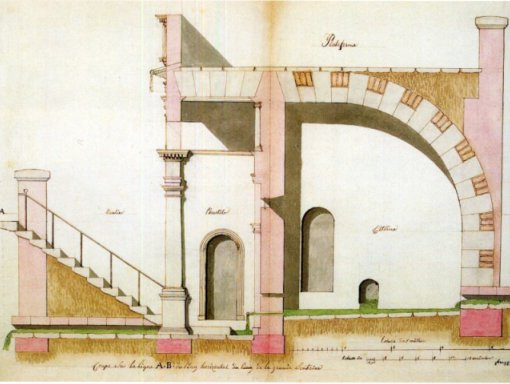
FIGURE I
(fontaine des Quatre Tias)Plusieurs hommes célèbres s'illustrèrent à Fontenay. A la Renaissance, la ville devint un lieu important de la culture française et de l'humanisme. Parmi les hommes illustres qui ont fait partie de ce cercle, nous citerons :
- François Rabelais, moine franciscain au couvent du Puy St Martin à Fontenay-le-Comte où son maître, Pierre Lamy, cultivé et hellénisant, l'initia au grec. Selon Fulcanelli, Rabelais maniait la cabale hermétique avec un art raffiné et son Livre Quint serait une oeuvre hermétique à part entière. Lorsque la Sorbonne interdit l'étude du grec, Rabelais se réfugia à l'Abbaye de Maillezais, chez les Bénédictins.
- André Tiraqueau, né vers 1480 fut un célèbre jurisconsulte, sénéchal de la ville et conseiller au Parlement de Paris, auteur de nombreux ouvrages de réputation mondiale.
- Nicolas Rapin, né en 1540, grand prévôt de la Connétablie de France fut auteur de poésies françaises et latines remarquables et l'un des auteurs de la Satyre Ménippée ; il vécut au Château de Terre-Neuve.
- François Viète, né en 1540, fut un grand mathématicien et on lui doit la formalisation de notre algèbre moderne.
- Barnabé Brisson, né en 1531, fut un jurisconsulte éminent et auteur du célèbre code Henri III ; il fut notamment le premier président du Parlement de Paris. Il mourut par pendaison en 1591.A ces noms illustres, il faudrait ajouter celui d'Augustin Belliard, Général d'Empire, ambassadeur et artisan de l'indépendance belge, ceux des écrivains comme Benjamin Fillon, Louis Brochet, René Vallette, et enfin celui de l'aquafortiste Octave de Rochebrune.
Ville d'art, ville d'histoire, Fontenay-Le-Comte est aussi une ville riche en architectures hermétiques : la fontaine des Quatre Tias, la tour Rivalland et la cheminée alchimique du château de Terre-Neuve forment un triptyque remarquable, qui ne peut laisser indifférent l'étudiant en alchimie. On peut y ajouter le Château-Gaillard avec son portail où figurent Hercule, Laocoon et Diane : à des titres divers, leur mythe est riche d'allusions cachées qui peuvent être dévoilées. Nous avons plusieurs fois évoqué la cheminée du château de Fontenay-Le-Comte. Elle a fait l'objet d'un commentaire approfondi de Fulcanelli dans ses Demeures Philosophales [DM]. Cette cheminée ne doit pas occulter d'autres éléments du château, caissons de plafond, entablements, devises et blasons où l'on devine, là encore, des intentions réservées.
Ouvrons les DM, II. Nous y trouvons un chapitre consacré à Louis d'Estissac, gouverneur du Poitou et de la Saintonge, Grand Officier de la Couronne et Philosophe Hermétique. Fulcanelli croit déceler les source du savoir hermétique de Louis d'Estissac chez François Rabelais. Louis, né en 1507, était le neveu de Geoffroy d'Estissac qui entretenait de cordiales relations avec Rabelais. De là à penser que Rabelais a été le précepteur de Louis, il n'y a qu'un pas. A la même époque, en 1537, François Ier, par ses lettres patentes, interdisait l'usage de l'imprimerie. Fulcanelli y voit un regain d'intérêt pour les livres lapidaires où la pierre se substitue au parchemin. Voici son sentiment :
"Louis d'Estissac [...] forma, à trente-cinq ans, le projet d'un intérieur symbolique où se trouveraient, habilement répartis et dissimulés avec soin, les signes secrets qui avaient guidé ses travaux. [...] Ainsi naquit le superbe château de Coulonges-sur-l'Autize [Deux-Sèvres]. [...] Certaines de ces pièces d'art furent acquises par un aquafortiste célèbre, Etienne-Octave de Guillaume de Rochebrune, et servirent à la réfection et à l'embellissement de sa propriété de Fontenay-Le-Comte [Vendée]. C'est en effet dans le château de Terre-Neuve, où elles sont actuellement conservées, que nous pouvons les admirer et les étudier à loisir. [...] D'abord simple métairie, le château de Terre-Neuve fut, dans son plan actuel, construit en 1595 par Jean Morison, pour le compte de Nicolas Rapin, vice-sénéchal de Fontenay-le-Comte et « poète distingué », ainsi que nous l'apprend une monographie manuscrite du château de Terre-Neuve, probablement rédigée par M. de Rochebrune...."
Le château de Terre-Neuve fut donc construit en 1580, pour Nicolas Rapin, Grand Prévot de la Connétablie de France et compagnon d'Henri IV. Dans ce joyau de la Renaissance Française, il reçut d'illustres personnages dont le Duc de Sully, et Agrippa d'Aubigné. Au XIXe siècle, le Château de Terre-Neuve devint la propriété du Marquis Octave de Rochebrune, célèbre aquafortiste. Il réalisa 492 eaux fortes à Terre-Neuve et sera ainsi considéré par certains comme « le Piranèse de son époque ». A l'intérieur de ce château, toujours habité par ses descendants, le visiteur peut aussi admirer différents tableaux de maîtres, du mobilier et des vêtements, le tout d'époque XVIIe et XVIIIe. Sont également exposées diverses collections, dont un ensemble de mortiers, ce qui ne laisse pas d'être un peu étonnant pour le profane, mais nullement pour l'étudiant qui en connaît l'usage. De ce château, on retiendra surtout ses plafonds à caissons (Renaissance)
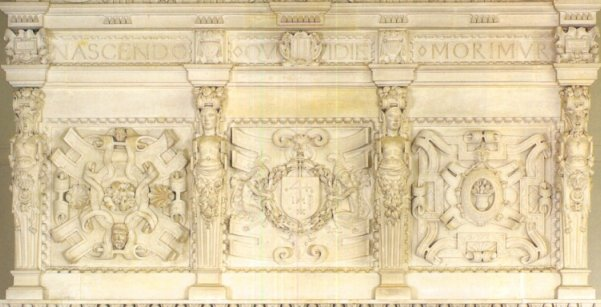
FIGURE II
(château de Terre-Neuve : cheminée alchimique)et la cheminée alchimique que nous avons visitée et analysée au moins à deux reprises, tant est riche son symbolisme. En dehors du château, trois monuments se distinguent, nous l'avons dit, par leurs décorations singulières, dont le sens ésotérique échappe à qui n'est pas au fait de la tradition hermétique et de l'Art sacré. Il s'agit de vieux livres lapidaires qui ne sont plus consultés, actuellement, que par quelques illuminés.
Voyons d'abord, la fontaine des Quatre-Tias [tias signifie tuyaux en patois poitevin]. Elle date du XVIe siècle. Construite en 1542 par l'architecte Lienard de Réau, elle porte la devise donnée à Fontenay par François 1er : « Fontanacum felicium ingeniorum fons et scaturigo » comme nous l'avons déjà signalé. On remarque la salamandre et le blason du roi au fronton du monument. Des inscriptions évoquent les noms des principaux magistrats de la cité parmi lesquels celui de Nicolas Rapin. Ces noms furent inscrits à la demande d'Octave de Rochebrune.
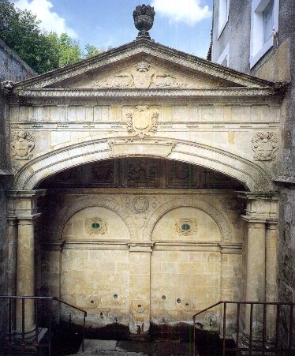
FIGURE III
(fontaine des Quatre Tias : plaque centrale ornant le mur du fond)C'est le premier exemple de fontaine classique.
En traversant la ville et en se dirigeant vers l'Ouest, nous trouvons la Ville haute, avec le château et la tour Rivalland. Il s'agit d'une construction octogonale de 25 mètres de haut, construite en 1880. C'est Gustave Rivalland, un franc-maçon fortuné, qui la fit bâtir pour rivaliser avec la flèche de l’église Notre-Dame qui était alors le seul monument qui dominait le ciel fontenaisien. La tour est construite en béton ce qui était une nouveauté à cette époque ; elle est revêtue en pierre de taille et incrustée de graviers de couleurs.
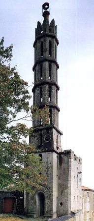
FIGURE IV
(la tour Rivalland)Cette tour se signale à l'attention de l'étudiant par plusieurs signes qui authentifient sa valeur hermétique et sur lesquels nous reviendrons. La figure IV montre la façade Nord et Ouest.
Dans les monuments que nous venons d'évoquer, les sculptures, les moulures ne sont pas disposées au hasard et on peut y relever un ordre que d'aucuns, qui prennent les paroles davantage à la lettre qu'à l'esprit, trouveront arbitraires et trompeurs. Ils nous accuseront de forcer les coïncidences, de préciser des traits et des formes là où l'on ne devine que l'usure du temps, que des siècles de rafale de vent d'Ouest ont imposés, d'improviser sur des symboles qui, sans doute, n'ont rien à voir avec l'alchimie, enfin de forcer des conclusions hardies là où l'histoire régionale permet de donner une interprétation rationnelle et banale. Fulcanelli et E. Canseliet n'ont pas agi autrement et, tout comme eux, on se servira de ces monuments comme de « pré textes ». Ces trois monuments expriment, au vrai, les trois grands Principes de l'oeuvre, pour des raisons que nous allons aborder bientôt. L'un, par la fontaine, symbolise le Sel ; l'autre, par sa cheminée alchimique, symbolise le Mercure. Le troisième, enfin, par la tour, porte les hiéroglyphes des Soufres.
II. La fontaine des Quatre Tias
Nous entamerons cette étude en nous souvenant de la devise que porte cette fontaine : « Fontenay-le-Comte, source abondante des beaux esprits ». Nous en convenons volontiers et il faut, certes, une source d'importance pour obtenir un Mercure, c'est-à-dire un Esprit, digne de ce nom. Mais s'arrêter là serait faire, en somme, de la cabale vulgaire. Or, les alchimistes disent que la préparation de leur Mercure exige la coopération des quatre Éléments et nous ferons remarquer que cette fontaine possède, d'après son nom même, quatre ruisseaux par où s'écoule l'eau en abondance. A la différence de la Fontaine des Amoureux de science, où Jean de Meung nous dit :
"A la Fontaine d'empres moy,
Sept Ruisseaux de moult noble arroy:
Car nul des sept onc n'apperceu,
Iusqu'à mon songe les euz veu:"Ces sept cours d'eau sont les ruisseaux célestes qui symbolisent l'humide radical des sept métaux, au lieu qu'ici, le rapport s'établit à un niveau élémentaire par les Quatre Éléments. La transformation des Éléments est l'une des allégories concernant la progression du travail dans le 3ème oeuvre. Retenons donc ici - comme base de travail - que la Pierre des Sages est triangulaire dans sa forme, quadrangulaire dans son état et circulaire dans son origine. Les natures métalliques, mêlées au Mercure, vont précipiter d'abord la survenue de la couleur noire ; dans un temps ultérieur, l'Eau, dont le symbole est alors Saturne, va se transformer en Air, placé sous la domination de Jupiter. Il faut y voir les natures métalliques en un état partiel de réincrudation. Quand l'Air se transforme en Feu, cela signifie que le Soufre rouge s'est conjoint totalement avec le Soufre blanc. C'est pourquoi les alchimistes expliquent que leur Eau permanente, leur Fontaine de jouvence quand elle est animée, procède d'un Feu aérien pur et d'une Eau pétrifiée. A considérer le fronton triangulaire de la fontaine des quatre Tias, nous ne pouvons douter du sentiment qui est donné à cet égard. La Pierre doit sa vie, si l'on peut dire, non seulement à la collaboration des planètes et des luminaires, dans les proportions requises, mais avant tout à l'Esprit, au Corps et à l'Âme, disposés dans un état quintessencé. Cette quintessence, l'Artiste ne l'obtiendra que par la médiation du feu. Ce feu n'est pas celui par lequel on cuit les aliments car il a une curieuse propriété : il est à la fois aqueux par sa fonction et terrestre par sa forme, d'où vient qu'on dit souvent de lui qu'il est à l'image d'un feu aqueux, si on le considère par sa fonction, ou d'une eau ignée si on le considère par sa forme. C'est un feu qui est dévorant et qui se dévore lui-même, ce qui a conduit les vieux alchimistes, ceux qui ont écrit la Chrysopée de Cléopatre, à lui attribuer le symbole du serpent qui se mord la queue, comme hiéroglyphe typique. Mais ce feu ne servirait à rien si on le laissait se consumer seul. Dans son premier état, il s'agit là du Mercure commun et, seul , il n'est d'aucune utilité dans l'oeuvre bien qu'étant le loyal serviteur de l'Artiste. Ripley a donné là-dessus un avis que l'on fera bien de méditer :
"Il y a quatre sortes de Feux, qu'il te faut connaître, savoir naturel, innaturel, contre nature, et élémentel, qui brûle le bois, desquels nous usons et non de plus. Le Feu contre nature doit extraire les Corps, c'est notre Dragon brûlant plus violemment que le Feu d'enfer. Le Feu de nature est le troisième Menstrue, ce Feu est naturellement en toutes choses. Le Feu naturel s'appelle occasionné, comme est la chaleur des cendres qui vaut à putréfier. Sans ces sortes de Feux tu ne pourras rien conduire à putréfaction, tellement que la matière se puisse séparer, afin qu'ensemblement tout soit proportionné à une nouvelle conjonction." [Douze Portes]
Il est nécessaire, pour que ce feu soit efficace, de le joindre à des matières préparées à l'avance, dont le choix est le premier écueil que l'apprenti trouvera sur sa route. Cet écueil constitue toute la difficulté du 1er oeuvre. Les alchimistes ont été des plus évasifs sur leur origine et C.G. Jung prétend même que ces matières n'ont existé que dans l'esprit des alchimistes, ce qui, d'une certaine manière était parfaitement vu, et de l'autre manière, procédait d'un regrettable contre sens. Certes, c'est de matières ténues qu'il s'agit, d'efflorescences qui peuvent disparaître en cas d'averses même peu intenses, de substances, en un mot, qui croissent en des lieux déshérités et que l'on peut même collecter, à en croire quelques Adeptes qui se sont montrés bien téméraires dans leurs révélations, dans le fumier. C'est pourtant là que peut être recueilli l'un des principaux composants de notre dissolvant. Il se présente comme une poudre blanche, infusible à la plus haute température des fourneaux, de ceux, en particulier, utilisés dans la manufacture de Sèvres servant à préparer la porcelaine. Cette poudre, ce sel en un mot, résulte de la condensation de l'Esprit Universel et d'une substance terrestre, une sorte de limon boueux, de fange, qui recèle en son sein la substance cristalline des Sages.
Bête à feu symbolisant ce sel fixe incombustible, moyen de la voie sèche, la salamandre a fait l'objet d'un chapitre spécial des DM. Voici ce que nous en dit Fulcanelli :
"Salamandre, en latin, salamandra, vient de sal, sel et de mandra, qui signifie étable, et aussi creux de roche, solitude, ermitage. Salamandra est donc le nom du sel d'étable, sel de roche ou sel solitaire."
L'accent est mis sur trois mots : l'étable, l'idée de solitude, la roche. Par étable, nous avons dit qu'il fallait entendre fumier et n'y reviendrons pas ici. Nous ajouterons seulement ces paroles de Morien au roi Calid :
"Les Souffleurs doivent faire attention que Morien les avertit, que tout ce qui s'achète cher est inutile, et ne vaut rien pour l'œuvre; que si l'on ne trouve pas la matière du magistère vile, méprisée, jetée, même quelquefois sur les fumiers, et foulée aux pieds dans les endroits où elle est, en vain mettra-t-on la main à la bourse pour l'acquérir, puisqu'on peut l'amasser soi-même sur les montagnes, dans les plaines, et dans tous les pays" [Dictionnaire mytho-hermétique, Pernety]
La solitude est le lot de l'Artiste qui a entrepris le Grand Oeuvre, mais elle doit, là encore, se comprendre par l'esprit. Faites donc le rapprochement entre le mot ion et ioV ; vous trouverez la clef de l'énigme et contournerez facilement la difficulté. La roche appelle des commentaires plus détaillés. Dans le Mystère des Cathédrales [Myst.], Fulcanelli nous assure que l'Eau permanente résulte, en somme, de deux sources qui coulent de deux grosses roches, comme des seins d'une femme, et que ce liquide est nommé par les alchimistes, le Lait de Vierge. En nous arrêtant à la lettre, nous pourrions croire l'énigme résolue, puisque Saint-Thomas d'Aquin nous dit ce qu'est le Lait de Vierge : il se prépare en faisant dissoudre de la litharge dans du vinaigre et en traitant la solution par le sel alcalin. [Tractatus sextus de esse et essentia mineralium tractans, Theatr. Chem., vol. V.]. Que les mercantis et les souffleurs se jettent donc sur cette recette : ils récolteront le vent mais ne sauront pas comment le conserver dans le ventre de la Vierge, c'est-à-dire la Virgo paritura, la Terre-mère des alchimistes. C'est donc autre chose que les Artistes rusés avaient en vue. Voyez ce passage :
«... La mythologie l'appelle Libéthra et nous raconte que c'était une fontaine de Magnésie, laquelle avait, dans son voisinage, une autre source nommée la Roche. Toutes deux sortaient d'une grosse roche dont la figure imitait le sein d'une femme ; de sorte que l'eau semblait couler de deux mamelles comme du lait...cette magnésie est dite Lait de vierge...» [Myst.]
Pour bien déjouer la difficulté, nous dirons que la marne peut être considérée comme un produit éloigné de notre Lait de Vierge, qu'on peut encore rapprocher de deux matières, dont la première est désignée sous le nom de moelle de pierre, et l'autre, de lait de montagne. Salomon Trismosin s'est risqué à son tour à une improvisation sur cette substance mystérieuse :
«...Ce soufre ainsi réduit surpasse en excellence tous les prix et les valeurs qu'on lui saurait donner, aussi l'ont-ils grandement prisé et qualifié d'un éloge d'honneur, quand ils lui ont prérogativement attribué le rare nom de lait de vierge ou de pucelle, lac virginum, qui revient aucunement à la forme de quelque gomme rouge, toute d'or, et ressemblant à l'eau des Philosophes, très resplendissante, qu'il faut coaguler, communément appelée des Sages tinctura Sapientiae, teinture admirable de Sapience, ou le feu vif des couleurs permanentes, une âme et un esprit qui s'étend loin par sa vertu se rendant volatil, ou se retire et restreint quand il lui plaît, d'une teinture fixe dans ses individus, c'est-à-dire dans sa nature propre et homogénéisée.» [Toyson d'or]
Jean d'Espagnet, dans son Oeuvre secret d'Hermès [chap. 51] s'est également exprimé sur le lait de vierge :
"La sublimation philosophique du mercure s'accomplit par deux moyens, en faisant sortir ce qui est superflu, et en faisant entrer ce qui manquait ; les choses superflues sont les accidents externes qui voilent l'étincelant Jupiter de la sombre sphère de Saturne. Ôte donc cette écorce livide de Saturne, jusqu'à ce que l'astre pourpre de Jupiter brille à tes yeux [pour Dom Pernéty -Fables-, la couleur de Jupiter est grise et elle succède à la noirceur ; le symbolisme s'accorde donc à peu près ici]. Ajoutes-y le soufre de la nature, dont le mercure possède déjà un grain, et comme un ferment, dont il contient autant qu'il lui en faut : mais fais aussi en sorte qu'il y en ait autant qu'il en faut pour les autres. Multiplie donc ce soufre invisible des philosophes, jusqu'à ce que le lait de la Vierge en soit exprimé : alors s'ouvre à toi la première porte."
Nous verrons plus loin que le Mercure commun possède, en effet, un grain de soufre. Artéphius a donné aussi son opinion sur cette mystérieuse matière :
"Alors continue ton feu convenable, et cet esprit, c'est à dire cette subtile substance du corps du Mercure, montera sur l'eau, laquelle quintessence est plus blanche que la neige, continue encore, à la fin fortifiant le feu jusqu'à ce que tout le spirituel monte en haut. Car sache que tout ce qui sera clair, pur, et spirituel monte en l'air en forme de fumée blanche, que les Philosophes appellent le lait de la Vierge." [Livre secret]
Dans son Astronomie Terrestre, E. Kelly donne d'autres détails sur la matière :
"Les Métaux, comme affirmé précédemment, contiennent un sel, duquel le feu et la sagacité de l'artiste peuvent extraire une eau que les Sages nomment eau Mercurielle, lait de la Vierge, Lunaire, rosée de Mai, le Lion Vert, le Dragon, le Feu des Sages. Cette eau Mercurielle, ils l'ont comparée à la corrosive eau-forte, car de même que ces eaux à base d'atrament, d'alun, de cuivre, d'arménite, etc, corrodent les métaux et les dissolvent, ainsi cet esprit Mercuriel, ou eau, dissout son corps et en sépare la Teinture." [E. Kelly, Théâtre de l'Astronomie Terrestre, chapitre IV : préparation de la Terre Mercurielle]
Kelly est prolixe et donne bien des choses sur lesquelles nous méditerons plus tard. Mais pour l'heure, revenons à la salamandre. Le Lait de vierge est formé de plusieurs substances et il lui faut l'aide de la bête à feu s'il veut devenir le Mercure commun. Nous avons dit ailleurs que cet animal, identifié au feu, fut aussi adoré pour son pouvoir de l'éteindre, grâce à son exceptionnelle froideur. François Ier avait mis dans ses armoiries une salamandre au milieu du feu et adopté cette devise : «J'y vis et je l'éteins. ». D'une certaine façon, c'est exact pour autant que l'on considère par « éteindre », rester fixe. Mais nous devons convenir que comparer, comme l'on fait certains critiques, la salamandre et le phénix, comme les deux symboles les plus communs du soufre est impropre. Il faut, en revanche, accorder une certaine
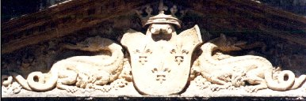
FIGURE V
(fontaine des quatre Tias : les deux salamandres et le blason)attention aux couleurs de cet animal. Noir, parsemé de taches jaunes, il n'est pas très différent de l'aspect que revêt le sujet minéral que d'autres ont comparé à un arbre scié et fendu [cf. château de Dampierre-sur-Boutonne]. Une légende normande raconte que le Christ, crucifié, détourna ses yeux du mouron [salamandre] quand il lui fut présenté, car l'aspect repoussant de ce petit reptile, suant le venin, lui fit détourner les yeux avec dégoût. Les alchimistes, nous avons eu l'occasion de le contrôler dans d'autres sections, ont eu la même expression de dégoût en voyant ce sujet disgracié de la nature. Pour autant, ils ne l'ont pas abandonné à son triste sort et ont compris que derrière le caractère immonde de cette bête, mi-serpent, mi-lézard, se cachait leur caméléon [kamai-leon], c'est-à-dire, littéralement, leur Lion de Terre. De surcroît, ils comprirent que ce corps devait être joint à une autre matière et que le tout pouvait former leur Mercure commun, c'est-à-dire leur Lion vert. C'est sans doute l'un des sels nommés par E. Kelly qui leur fit comprendre de quelle essence était leur V.I.T.R.I.O.L. Ce sel possède, en effet, une propriété surprenante, cuit dans certaines conditions et il donne lieu à un certain accroissement. Au reste, c'est évidemment au laboratoire que les alchimistes oeuvrèrent et, comme l'a justement fait remarquer Pierre Dujols de Valois :
"La figure inférieure de cette seconde planche représente un athanor entre un homme et une femme à genoux, comme s’ils étaient en oraison, ce qui a porté certains esprits faibles à croire que la prière intervient dans le travail comme un élément pondérable. C’est ici un facteur inopérant. Le principal, c’est d’employer les matériaux expédients" [Hypotypose, à propos de la planche II du Mutus Liber]
en parlant de la valeur de l'oratoire. En manipulant des centaines, voire des milliers de fois les mêmes substances, cuites de différentes manières et dans des conditions différentes, ils surent progressivement, par essai et par erreur, dévoiler l'arcane et trouver la manière et l'art d'allier dans les proportions requises la matière laiteuse d'un côté et de l'autre, la matière pierreuse. Seul, Tripied, l'auteur anonyme du Vitriol Philosophique et de sa préparation, a laissé sur le sujet des réflexions singulières qui devraient être considérées comme la pierre de touche de l'Oeuvre par bien des Artistes qui s'escriment inutilement sur du cinabre et autre antimoine. Du reste, la double nature de ce Mercure commun n'a pas dû échapper à l'artiste qui a façonné la fontaine, puisque l'on voit, ainsi que cela est conforme à la doctrine, deux salamandres.
Les légendes populaires expriment bien souvent une vérité profonde sous des dehors parfois folkloriques. Ainsi, d'après les Bretons du Finistère, la salamandre devrait son caractère dégoûtant [cado, cassito] à un sacrilège dont elle se serait rendu coupable en ayant osé téter un jour la vierge qui s'était « endormie au pied d'un arbre en allaitant l'enfant Jésus ». Nous avons vu plus haut que cette allégorie est une traduction exacte des processus chimiques à l'oeuvre, dans la formation du Lait de Vierge. Nous avons vu, en outre, que la peau de ce batracien est noire. La légende raconte qu'elle sécréterait une substance hautement corrosive, capable de dissoudre les métaux et, peut-être, de les réduire en leur première nature. C'est à bon droit que l'on voit dans la salamandre un animal diabolique associé à l'enfer et il y a un rapport certain entre le Sel voilé par la salamandre et la Terre masquée par le symbole de Lucifer, l'étoile du matin. Une autre légende populaire dit que lorsqu'un individu est mordu, la salamandre reste obstinément accrochée sur le Corps et que pour lui faire lâcher prise, il faut lui présenter du lait ou un crapaud, son « ennemi mortel ». Cela ne saurait nous étonner : pour le lait, nous venons de voir que le «semblable est avide de son semblable » et que le Lait de Vierge étant une part du Mercure commun, la logique même veut que l'autre part du Mercure, incarnée par le batracien, veuille y adhérer. Pour le crapaud, il faut se souvenir qu'il s'agit d'un symbole du Soufre rouge et que tout l'art de l'alchimie est précisément de tenter d'unir les contraires par la médiation d'un tiers-agent : la salamandre et le crapaud sont les symboles de ces animaux opposés, l'un vivant dans le feu et l'autre vivant dans une terre humide. Bref, voilà un animal qui corrompt tout, du pommier fleurissant au vin entreposé dans la cave. Il est surprenant, dès lors, qu'on vienne à trouver des qualités à cet hideux représentant de l'ordre des batraciens. Et pourtant, il paraît que la salamandre purifie l'eau où elle se trouve et c'est évidemment pourquoi on la trouve associée à la fontaine d'Eau vive. Il paraît même que si l'on assomme plusieurs de ces mourons, par une belle nuit d'été, bien calme et sereine, on voit à ses pieds, le lendemain, autant de pièces d'or que l'on aura tué de salamandre. Il semble enfin, chose surprenante, que lorsqu'une salamandre passe sur la main d'une jeune fille, elle procure à celle-ci une grande dextérité dans les travaux de couture. Ce dernier fait ne saurait, là encore, nous étonner : l'alchimiste doit savoir filer son Mercure comme la fileuse, sa laine. Nous terminerons ces légendes par celle-ci : on a prétendu que Romulus, censé être le fils de Mars, était en réalité fils d'une salamandre. Mais dès lors qu'on saura ce qui se cache sous Arès, on n'aura pas de mal à y chercher la salamandre et d'observer que deux minéraux, au moins, possèdent les attributs qu'on prête à notre héros mythologique. Les légendes sur la salamandre ont alimenté le symbolisme que lui prêtent les alchimistes. Lambsprinck, dans son De Lapide Philosophorum, lui a consacré un poème et une légende :
"Toutes les fables nous racontent
Que la salamandre naît du feu,
En qui elle a la nourriture et la vie,
Ce qui lui a été donné en propre par la nature.
Or elle habite dans une profonde montagne
Devant laquelle brûlent de nombreux feux,
L'un plus petit que l'autre,
En qui la Salamandre se lave;
Le troisième est le plus grand, le quatrième le plus éclatant de tous
La Salamandre les parcourt tous, et en eux elle est purifiée.
De là elle se hâte vers sa fosse
Et dans ce trajet même, elle est prise et percée de coups,
De sorte qu'elle meure, et laisse écouler la vie avec son sang.
Or de toutes façons, ceci pour elle aboutit à un bien,
Elle gagne par son sang une vie éternelle
Et ne peut plus périr d'aucune mort après celle-ci.
Son sang est ainsi la médecine la plus précieuse sur terre
Et on n'en trouve pas qui l'égale,
Car son sang chasse toute maladie
Dans tous les métaux, et dans les corps des animaux et des hommes.
Les Sages y ont puisé leur Science,
Et par là sont parvenus au don céleste
Qu'on nomme Pierre des Philosophes,
A qui sont soumises les forces de tout l'Univers.
Les Philosophes nous donnent ceci par pure bienveillance
Pour que perpétuellement nous nous souvenions d'eux.
La Salamandre vit dans le feu,
Et le feu l'a changée en une couleur excellente."

FIGURE VI
(De Lapide Philosophorum, Dixième figure)Réitération, gradation et amélioration de la Teinture, ou
plutôt Augmentation de la Pierre des PhilosophesCe sang de la salamandre est blanc. Et c'est le signe par lequel le Sel se signale à l'attention des Adeptes. De Cyrano Bergerac a laissé une description remarquable du duel entre la salamandre et la Rémore dans une partie de son Histoire comique, contenant les Estats et empires du soleil [Paris, Charles de Sercy, 1662] :
" Au monde de la terre d’où vous êtes, et d’où je suis, la bête à feu s’appelle salamandre, et l’animal glaçon y est connu par celui de remore. Or vous saurez que les remores habitent vers l’extrémité du pôle, au plus profond de la mer glaciale ; et c’est la froideur évaporée de ces poissons à travers leurs écailles, qui fait geler en ces quartiers-là l’eau de la mer, quoique salée. La plupart des pilotes, qui ont voyagé pour la découverte du Groenland, ont enfin expérimenté qu’en certaine saison les glaces qui d’autres fois les avaient arrêtés, ne se rencontraient plus ; mais encore que cette mer fût libre dans le temps où l’hiver y est le plus âpre, ils n’ont pas laissé d’en attribuer la cause à quelque chaleur secrète qui les avait fondues ; mais il est bien plus vraisemblable que les remores qui ne se nourrissent que de glace, les avaient pour lors absorbées. Or vous devez savoir que, quelques mois après qu’elles se sont repues, cette effroyable digestion leur rend l’estomac si morfondu, que la seule haleine qu’elles expirent reglace derechef toute la mer du pôle. Quand elles sortent sur la terre, car elles vivent dedans l’un et dans l’autre élément, elles ne se rassasient que de ciguë d’aconit, d’opium et de mandragore...Cette eau stigiade de laquelle on empoisonna le grand Alexandre et dont la froideur pétrifia les entrailles, était du pissat d’un de ces animaux. Enfin la remore contient si éminemment tous les principes de froidure, que, passant par-dessus un vaisseau, le vaisseau se trouve saisi du froid en sorte qu’il en demeure tout engourdi jusqu’à ne pouvoir démarrer de sa place. C’est pour cela que la moitié de ceux qui ont cinglé vers le nord à la découverte du pôle, n’en sont point revenus, parce que c’est un miracle si les remores, dont le nombre est si grand dans cette mer, n’arrêtent leurs vaisseaux. Voilà pour ce qui est des animaux glaçons."
Philalèthe assure qu'on trouve caché le Sel au ventre d'Ariès, ou du Bélier « qui cache en soy l'acier magique ». L'Acier des sages est le chalybs [caluy] des Latins ; on le compare aussi à une épée nue et il prend alors figure de 1er agent qui génère la séparation initiale. L'acier était surtout fabriqué par les Chalybes ou peuple du Pont ; il affermit un peu plus sa nature mercurielle [Pont Euxin à Mer Noire] : Cybèle, les Symplegades ne sont pas loin...Il faut ici méditer : tout nous rapproche d'une couleur foncée ; en grec, méditer profondément se dit kalcainw dont un autre sens est avoir la couleur foncée de la pourpre [être sombre, plongé dans des réflexions]. L'Acier des Sages n'est donc que le moyen pour arriver à la noirceur dont tous les auteurs nous assurent qu'en cette couleur réside l'Entrée au Palais fermé du Roi. Fulcanelli, dans les Myst., quand il cite la Clef du Cabinet Hermétique, d'un auteur anonyme, aborde cet Acier :
"Cet auteur nous la marque plus particulièrement par ces paroles : elle n'est pas semblable à l'eau de la nüe, mais elle en a toute l'apparence. En un autre endroit, il nous la décrit sous le nom d'acier et d'aimant, car c'est véritablement un aimant qui attire à lui [c'est-à-dire qui dissout] les influences du ciel, du soleil, de la lune et des astres, pour les communiquer à la terre. Il dit que notre acier se trouve dans Ariès, qui marque le commencement du Printemps, lorsque le soleil parcourt le signe du Bélier [...]" [Myst., p. 118]
Il est exact que cette eau minérale communique les influences des astres à la terre : cela correspond à l'incarnation de l'Âme qui trouve ici la conjonction parfaite entre l'hermétisme et la théologie par l'entremise de l'Art sacré. En termes moins ésotériques, nous dirons que l'eau minérale - solvant de nos Soufres - assure l'accrétion du Soufre rouge, portant la teinture, au soufre blanc ou Toyson d'or. Ariès ne doit pas faire illusion : il s'agit simplement d'un vitriol et peu importe qu'il porte l'empreinte du fer [vitriol vert], du cuivre [vitriol bleu] ou du zinc [vitriol blanc] ; la calcination de ces vitriols les fait changer de couleur, d'où cette illusion de la transformation des métaux, transformée en allégorie par Monte Snyders, dans sa Métamorphose des planètes. Si nous rapprochons ce que nous venons de dire de cet autre passage :
"Adamus, nom latin d'Adam, signifie fait de terre rouge [...] Mais dès que Dieu, selon la tradition mosaïque, fit naître la femme en individualisant, dans des corps distincts et séparés, ces natures primitivement associées en un corps unique, le premier Adam dut s'effacer, se spécifia en perdant sa constitution originelle, et devint le second Adam, imparfait et mortel" [DM I, p. 306]
la traduction de ce passage hermétique sera facile, selon que l'on suive ou non nos principes. Cette terre rouge n'est autre que de l'argile et ce premier Adam est donc une terre limoneuse ; l'irruption de la femme traduit la séparation de cette terre en deux principes. L'un est masculin, qui est le second Adam, imparfait et mortel car il s'agit d'une chaux métallique. L'autre partie, féminine, correspond au Soufre blanc. Mais c'est par cabale qu'il faut comprendre qu'Adamus signifie terre rouge car ce terme n'a jamais désigné une terre rouge. En latin, adamas a le sens du mot grec AdamoV, semblable à de l'acier...On trouve dans les vieux textes des références plus explicites à cette terre ; ainsi dans ce passage de Jean d'Espagnet :
"Prends trois livres de terre rouge, ou ferment rouge, d'eau et d'air, autant de l'un que de l'autre le double, mêle bien et broie toutes ces choses, les réduisant en un amalgame qui devienne comme du beurre, ou comme une pâte métallique de sorte que la terre soit tellement ramollie qu'elle ne se sente pas sous les doigts. Ajoutes-y une livre et demie de feu, et fais digérer ces choses dans leur vaisseau bien bouché par un feu de premier degré, autant qu'il est nécessaire. Il faut ensuite tirer les éléments avec ordre chacun par leurs degrés de feu, lesquels par un mouvement lent seront enfin digérés et fixés dans leur terre, en sorte que rien de volatil ne pourra s'en échapper. Enfin la matière deviendra comme une roche claire, rouge et diaphane, dont tu prendras à plaisir une partie que, jetée dans un creuset sur un feu lent, tu abreuveras goutte à goutte de son huile rouge, jusqu'à ce qu'elle fonde entièrement et s'écoule, sans fumer" [L'Oeuvre secret d'Hermès]
Et nous avons dit, dans le commentaire de ce traité, qu'il s'agissait sans doute de la préparation de l'alkali fixe. Dans Huginus à Barma, la relation s'éclaire davantage et donne tout son sens à ce qu'écrit Fulcanelli :
"Paracelse appelle Terre Adamique les parties fixes, car tout ainsi que Dieu voulant créer le plus beau de ses ouvrages dans le genre animal, c'est-à-dire Adam, se servit d'un limon rouge le plus noble & le plus pur, de même il employa la terre rouge la plus noble pour la production de notre Soleil dans le Règne minéral. C'est ce qui a autorisé les Philosophes à dire que Dieu n'a rien crée ( si l'on en excepte l'homme ) de plus noble que notre Soleil, c'est-à-dire, que l'or, qui est la plus fixe de toutes les substances minérales."
La relation est ici très claire et renvoie explicitement au sel fixe et centrique dont nous avons tant de fois parlé et qui est rejeté par le vulgaire comme un méprisable résidu. Artephius lui-même parle aussi -lui d'habitude si abscons- de cette terre rouge dans son Livre secret :
"Donc qui ôte la noirceur de la terre rouge, et puis la blanchit, il a le magistère, tout de même que celui qui tue le vivant, et ressuscite le mort. Blanchis donc le noir, et rougis le blanc, afin que tu parachèves l'œuvre. Et quand tu verras apparaître la vraie blancheur resplendissante comme le glaive nu, sache que la rougeur est cachée en icelle, alors il ne te faut point tirer hors du vaisseau cette poudre blanche, mais seulement il te faut toujours cuire, afin qu'avec la calidité et siccité, survienne finalement la citrinité, et la rougeur très étincelante..."
Le glaive nu exprime l'épée du chevalier tuant le dragon ; cette scène se situe au début du Grand oeuvre ; elle a été l'objet d'allégories telles que celle du Dragon défendant l'accès au Jardin des Hespérides. Tous les Adeptes ont usé et abusé de cette belle image. Enfin, on peut faire le rapprochement avec le mot MARANATHA : sous ce mot obscur, on peut voir regroupées deux divinités : Athana (Minerve) et Athamas. D'après E. Canseliet :
"...Athamas est le même mot qu'Adamas...Athamas renouvelle donc la personnalité puissante de l'Adam primordial, de celui dont parle Saint-Paul, pour l'opposer au second, et qui aurait été fait de terre rouge par Dieu" [Alchimie, p. 199]
En dehors de l'argile, Ferdinand Hoefer a montré que l'opheret des Hébreux, des Phéniciens et des Égyptiens, est, non pas le plomb, mais le cuivre, car opheret dérive de aphar [rouge ou terre rougeâtre]. Par l'allégorie se rapportant au symbolisme de la licorne, la terre rouge est évoquée également par E. Canseliet dans ses Deux Logis alchimiques :
"La licorne est aussi la longue opération par laquelle les artistes, en de fréquentes réitérations, recueillent et rassemblent l'âme sulfureuse montant, peu à peu, du sein de la terre rouge, à travers le bain mercuriel, afin qu'elle prenne un corps nouveau à la surface. Dans la parfaite réunion des deux principes, spirituel et corporel, celui-ci, qui est le sel, prend la belle couleur verte de celui-là, expliquant le rôle allégorique de la végétation, de la forêt..."[La Licorne domptée, p.313]
Nous évoquerons plus loin, et de manière spécifique, le symbolisme de la licorne. Remarquons enfin que la terre rouge dont nous parlent plusieurs textes dans les opérations peut être le tartre rouge. Ce sel que l'on désigne ordinairement par le nom de tartre se dépose sur les parois des tonneaux dont on le détache : il est naturellement mêlé à des impuretés qui se sont déposées en même temps ; et lorsqu'il s'est séparé du vin rouge [allusion à Bacchus, très présent chez les auteurs modernes], il retient beaucoup des parties colorantes du vin, d'où vient qu'on distingue celui-là sous le nom de tartre rouge. Sur le plan étymologique, il faudrait encore citer le sinople (terme héraldique) qui vient du bas-latin sinopis qui désigne d'abord la terre rouge de Sinople, avant de prendre, au XIVe siècle, le sens de vert pour des raisons inexpliquées et qui signifiait à la fois rouge et vert. La vertu secrète du vert vient de ce qu'il contient le rouge. C'est le sang du Lion Vert des alchimistes, le sang du dragon (vert comme un reptile) qui est l'or des philosophes. [cf. section du rébus de St Grégoire]. Pour terminer sur l'Acier, nous dirons qu'il semble être la demeure du Soufre tandis que l'aimant procure le Sel ou Mercure des philosophes. Il est facile de concevoir que l'aimant ne peut être que la couverture de l'Or, c'est-à-dire ce qui protège l'or et non pas le Mercure philosophique A rapprocher ce que Pernety nous dit :
"Lorsque le mercure des Sages est mêlé avec l'argent et l'or, il est appelé l'électre des philosophes, leur airain, leur laiton, leur cuivre, leur acier ; et dans les opérations, leur venin, leur arsenic, leur orpiment, leur plomb, leur laiton qu'il faut blanchir ; Saturne, Jupiter, Mars, Vénus, la Lune et le Soleil."
Il faut donc comprendre que cet Acier n'est autre qu'un des états du Rebis et que l'électre des philosophes est un état du Mercure qui correspond à son activation, à son animation. De commun, le Mercure devient alors philosophique et acquiert une valeur double : c'est l'androgyne hermétique. Pour donner un sens plus précis à notre Sel, on peut encore citer Batsdorff :
"On peut avec cet Elixir faire des métamorphoses et changement prodigieux sur tous les sujet, comme sur l'émeri, l'acier, le corail, le jaspe, le porphyre, le marbre, et quantité d'autres choses, quoiqu'on n'y conçoive aucune proportion ou homogénéité, sinon très éloignée ; car qui croirait qu'il fut capable de changer les pierres, soit naturelles, soit artificielles, en pierres précieuses..." [Filet d'Ariadne]
Cette citation permet de comprendre le sens à donner à l'évocation de la salamandre de Lisieux, quand Fulcanelli écrit :
"Elle [la salamandre] y étreint le poinçon du chapeau, entre deux dragons sculptés [...]. Ces deux dragons, l'un aptère, l'autre chrysoptère, sont ceux dont parle Nicolas Flamel en ses Figures Hiéroglyphiques, et que Michel Maïer [Symbola aurae mensoe, Francofurti, 1617] regarde comme étant, avec le globe surmonté de la croix, des symboles particuliers au style du célèbre Adepte." [DM, I, p. 253]
La salamandre tient ici le milieu entre le symbole du Mercure et le symbole du Soufre. Ces deux Principes sont évoqués dans un contexte particulier. C'est l'époque de l'oeuvre où l'Artiste doit combattre le dragon écailleux, incarnation de Cronos. Ce qui le distingue de l'autre dragon qui correspond à l'état dans lequel on trouve l'une des matières premières de l'oeuvre. Fulcanelli écrit encore :
"Seuls, les esprits métalliques possèdent le privilège d'altérer, de modifier et dénaturer les corps métalliques. Ce sont eux les véritables promoteurs de toutes les métamorphoses corporelles que l'on peut y observer." [DM, I, p. 266]
Pour dire que la sublimation, pivot de l'oeuvre, transforme les natures métalliques et leur procure des qualités qui ont fait désigné la licorne comme le symbole du Soufre. Nous en reparlerons. Pour l'heure, nous ferons encore remarquer que la salamandre est inséparable des laveures ignées par lesquelles on blanchit le Laiton. Ce blanchiment est à l'image des opérations qui sont réalisées en matière de teinture. Voilà qui nous ramène à la planche 4 du Mutus Liber : les toiles sont étendues sur une prairie et subissent pendant quelques jours l'action réitérée de l'air, de l'eau [pluie, rosée] et de la lumière solaire. Sous ces actions simultanées et au moyen de lessives, on parvient à obtenir un tissu parfaitement blanc. Les mêmes substances, celles qui sont utilisées dans la préparation du Mercure, sont utiles dans l'art de la teinture : c'est à la chaux que l'on dégraisse. C'est l'alun qui est la matière de choix pour le mordançage [voyez sous ce rapport toutes les allégories où nous voyons un loup, c'est-à-dire par cabale, un mors] ; mais aussi le protochlorure d'étain, en raison de l'affinité de sa base pour les tissus au point que l'oxyde d'étain se substitue presque en totalité à l'alumine contenue dans une laque alumineuse déjà fixée sur une étoffe. Quant au bichlorure d'étain, il sert à fixer sur les tissus la couleur écarlate de la cochenille, ce qui nous explique que, selon Fulcanelli, la matière première contracte des rapports avec «l’étain grenaillé et la noix de galle» L'opération de la teinture elle-même prend également des rapports avec le travail du 3ème oeuvre : on plonge les fibres textiles mordancées -le Corps et le lien du Mercure - dans une dissolution de matière colorante - la couleur sous forme de chaux métallique, dissoute dans le bain - est portée de façon graduelle à une température élevée et ce pendant un certain temps. Tout comme dans la Grande coction, on fait usage alors de certains dissolvants qui se combinent à la matière colorante et qui la résolvent en un état radical. Alors, la matière colorante peut teindre en profondeur ou bien encore, le dissolvant peut agir comme simple moyen de transport pour la teinture : il abandonne ensuite la matière colorante, dont l'affinité pour le tissu - le Corps ou toyson d'or - surmonte alors la force de dissolution du liquide.
Nous parlions tout à l'heure du combat que se livrent les deux natures métalliques. Ce combat a comme symbole le griffon. On sait qu'un griffon, c'est aussi le lieu d'émergence d'une source ou d'une fontaine, quand la fontaine est sur le lieu même de la source. Voici ce qu'en dit Fulcanelli :"Nous reconnaissons en ce motif l'un des emblèmes majeurs de la science, celui qui couvre la préparation des matières premières de l'Oeuvre.[...] Le griffon marque le résultat de l'opération [le duel des produits minéraux], voilée d'ailleurs sous des mythes d'expressions variées, mais présentant tous les caractères d'incompatibilité, d'aversion naturelle et profonde qu'ont, l'une pour l'autre, les substances en contact." [DM, I, p. 275]
Ce griffon a aussi comme symbole une pierre noire qu'il importe de soumettre à plusieurs lévigations [les laveures ignées de Flamel]. La salamandre résiste de façon supérieure aux attaques de ces réitérations brûlantes et conserve son sel fixe jusqu'à la chaleur blanche, c'est-à-dire jusqu'à la sphère de la violette. Mais nous traiterons ce point de science en son temps. Ce griffon est aussi désigné comme la pierre astrale et permet de comprendre la série des planches du Mutus Liber où l'on voit le couple alchimique oeuvrer au fourneau pour obtenir successivement le Mercure commun [qui contient notre Sel], le Soufre rouge, dont le signe est une anémone et enfin la pierre astrale, signalée par une étoile. C'est de ce griffon, en somme, qu'émerge l'Eau permanente, l'onde vive, qui est nécessaire à la maturation des Soufres. Voici ce qu'en pense Pernety :
"Griffon. Les Philosophes Hermétiques ont donné ce nom à leur matière, parce que les Anciens ont feint que le Griffon était un animal qui avait la tête et la poitrine d’un Aigle, et le reste du corps comme un Lion. C’est pourquoi ils disent qu’il faut les faire combattre jusqu’à ce qu’ils ne fassent qu’un, c’est-à-dire, qu’il faut mettre ensemble le Lion et l’Aigle, et mêler le volatil avec le fixe, et les faire circuler ensemble jusqu’à ce que tout demeure en un corps fixe. Voilà l’animal fabuleux de Pline et des autres Naturalistes, qui en ont pris l’idée des Chymistes Hermétiques, qui disaient qu’il veillait à la garde des trésors, et qu’il était consacré au Soleil.
L’Auteur du Dictionnaire Hermétique dit mal-à-propos que le Griffon des Philosophes est l’antimoine." [Dictionnaire]A tous ces commentaires, on pourrait ajouter celui de Clovis Hesteau de Nuysement, qui a écrit un ouvrage entier sur le Traité du Sel :
"Il est de grand prix et d'une valeur inestimable, et toutefois ce n'est que fiente ; c'est un feu qui brûle plus fortement que tout autre feu, et néanmoins il est froid ; c'est une eau qui lave très nettement, et néanmoins elle est sèche; c'est un marteau d'acier qui frappe jusque sur les atomes impalpables, et toutefois il est comme de l'eau molle ; c'est une flamme qui met tout en cendres, et néanmoins elle est humide ; c'est une neige qui est toute de neige, et néanmoins elle est humide; c'est une neige qui est toute de neige, et néanmoins qui se peut cuire et entièrement s'épaissir; c'est un oiseau qui vole sur le sommet des montagnes, et néanmoins c'est un poisson ; c'est une Vierge qui n'a point été touchée, et toutefois qui enfante et abonde en lait ; ce sont les rayons du Soleil et de la Lune, et le feu du Soufre, et toutefois c'est une glace très froide ; c'est un arbre brûlé, lequel toutefois fleurit lorsqu'on le brûle et rapporte abondance de fruits ; c’est une mère qui enfante, et toutefois ce n'est qu'un homme ; et ainsi au contraire c'est un mâle, et néanmoins il fait office de femme ; c'est un métal très pesant, et toutefois il est plume, ou comme de l'alun de plume ; c'est aussi une plume que le vent emporte, et toutefois plus pesante que les métaux ; c'est aussi un venin plus mortel que le basilic même, et toutefois qui chasse toutes sortes de maladies..." [Traité du Sel]
Par ces tirades, on peut mesurer le chemin à parcourir, qui part de textes aussi abscons pour arriver à une représentation pratique et simple de corps chimiques nettement individualisés. C'est ce genre de passage qui fait voir toute la beauté des textes alchimiques qui sont comme des poèmes surréalistes avant la lettre. Ces énumérations sont dignes de Georges Pérec ou de Jules Verne. Ce sont aussi des chausse-trappes où le sentiment s'égare, à l'égal de l'aiguille d'une boussole qui, lorsqu'elle est proche du pôle magnétique, est désorientée et indique des caps qui changent incessamment. La référence à l'alun de plume est ainsi, d'une grande perfidie car l'alun déphlegmé ou alun de plume est un sel double, isotope spirituel si l'on peut dire, du gypse, autrement appelé pierre de Jésus ou pierre du Levant.
Il faut accorder un peu d'attention au blason qui se signale par ses trois fleurs de lys. Emblème de la souveraineté de la science, ces trois fleurs trouvent leur signification hermétique dans cet extrait de D'Espagnet :
"Trois espèces de très belles fleurs doivent être cherchées et trouvées au fond de ce jardin des philosophes : des violettes rouge vif, un lys blanc et l'amarante pourpre et immortelle." [Oeuvre secret, chap. 53]
que nous avons déjà commenté dans d'autres sections. Il reste à parler d'apparentes contradictions dans ce que nous avons exposé. Car c'est le principe Sel qui a été évoqué, là où l'on voit une fontaine. Il aurait pu apparaître plus logique d'évoquer le Mercure plutôt que le Sel. La contradiction n'est qu'apparente puisque la matière même du Mercure est inopérante dans l'Oeuvre. Ce n'est que conjoint au Sel, c'est-à-dire au Corps, que le Mercure devient cet agent igné qui est indispensable pour faire la pierre. Et c'est aussi par là qu'il devient le Mercure commun ou 1er Mercure qui correspond à la première couronne de l'emblème de Limojon de Saint-Didier [Triomphe hermétique].
La fontaine des Quatre Tias ne nous pas encore livré tous ses secrets. Un grand arc en anse de panier encadre deux autres arcs symétriques qui portent en bas les quatre « tias » de la fontaine. Il reste à parler de quatre sujets, très représentatifs de l'Art sacré.
Le premier nous invite à réfléchir sur la coopération des quatre Éléments et tout particulièrement sur les interactions entre la Terre et le Ciel. Pour cela, il faut descendre quelques marches : nous accédons alors à une véritable caverne. La référence au griffon, évoqué plus haut, nous laissait d'ailleurs deviner qu'il nous faudrait pénétrer dans les entrailles de la terre.
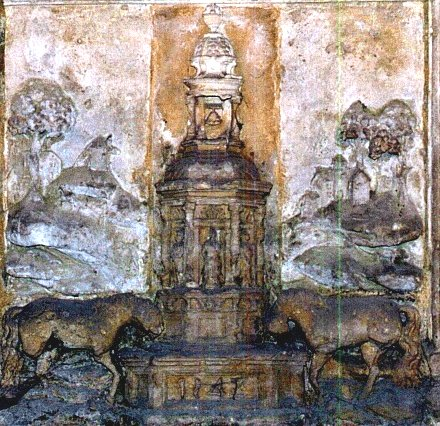
FIGURE VII
(fontaine des Quatre Tias : cabales et temple)Il était fatal que nous retrouvions le cheval. et ici, nous en trouvons deux. Nous avons souvent vu que le cheval constituait l'un des arcanes réservés de l'alchimie. Sa nature participe étroitement des quatre Éléments de la Tradition et son symbolisme s'étend aux luminaires, c'est-à-dire à nos natures métalliques et aussi à l'Esprit qui permet de les maîtriser. Le cheval est lié à la Terre : Pégase [cf. sections Garde du corps - St Grégoire] en constitue le prototype. Fruit des amours de Poséidon et de la Gorgone, il fut arraché des entrailles de Méduse par Persée et nous avons vu que cette fable recouvrait l'origine du principe Sel. Mais Pégase est aussi en rapport avec l'Eau. N'est-ce pas lui qui fait jaillir une source sous le choc de son sabot, au pied de l'Hélicon ? Sa proximité au Sel en fait une grande figure lunaire, dont le rapproche de surcroît l'une de ses couleurs : la blancheur. Ce faisant, il emprunte des caractères de la nuit, auréolée de mystère. Mais il se rapproche aussi de l'air [Pégase est un cheval ailé] et, telle la materia prima, le cheval, quittant ses sombres origines, peut s'élever, sous certaines conditions, jusqu'aux cieux, vers l'astérie des Sages. C'est aussi le soin de l'Artiste que de tâcher de faire parvenir en gloire le Sel et le Soufre, issus de matières boueuses et immondes, de les transformer puis de les unir en forme d'objet spirituel dans lequel l'Âme peut s'incarner sans quitter pour autant son caractère divin. Alors, à bon droit, les alchimistes peuvent-ils affirmer que le cheval est bien la plus noble conquête de l'homme. Le cheval, c'est aussi un moyen de transport, de liaison, et en cela, il se rapproche du feu élémentaire dont l'alchimiste a besoin pour faire progresser le travail durant la Grande Coction. Ce feu, symbolisé par le char du Soleil, a besoin de l'Aurore. Elle seule, en effet, a le pouvoir d'ouvrir les portes du jour. Après avoir attelé les chevaux au char du Soleil, elle le précède sur le sien. Les Anciens la représentent vêtue d'une robe de safran, ou d'un jaune pâle, une verge ou une torche à la main, sortant d'un palais de vermeil, et montée sur un char de même métal ayant des reflets de feu. Homère lui donne deux chevaux, qu'il nomme Lampos et Phaéton.
Phaéton nous donne un exemple d'un cas de Mercure non contrôlé : ce dieu demanda au Soleil, son père, un signe de sa naissance, piqué au vif par quelqu'un qui doutait de son ascendance divine. Le Soleil lui accorda tout ce qu'il voudrait. Phaéton voulut alors diriger lui-même le char de son père. Mal lui en prit car bientôt, les coursiers ne répondirent plus à son commandement et le char, tantôt montait trop haut en risquant de brûler la route céleste, tantôt descendait trop bas en faisant prendre feu aux montagnes et en transformant les fleuves en vapeur. Zeus fut contraint de foudroyer Phaéton pour sauver l'univers et le fils du Soleil fut précipité dans le fleuve Eridan.
Mais cette caverne a aussi quelque chose de diabolique et qui parle de l'Aurore doit évoquer Lucifer. Lucifer et Vesper ont dans le monde sidéral chacun leur histoire respective. Lucifer, fils de Jupiter et de l'Aurore, est le chef ou le conducteur de tous les autres astres [Lucifer est donc des parties du Mercure]. C'est lui qui prend soin des coursiers et du char du Soleil ; lui qui les attelle et les dételle avec les Heures. On le reconnaît à ses chevaux blancs dans la voûte azurée, lorsqu'il annonce aux mortels l'arrivée de l'Aurore, sa mère. Les chevaux de main lui étaient consacrés. Hélios, [Apollon] apparaît alors dans son appareil de splendeur, monté le matin sur son char attelé de chevaux qui ne respirent que le feu et l'impatience, et il s'élance dans le ciel par sa route accoutumée, dès que l'Aurore [Vénus, Messager du soleil] lui a ouvert les portes du Jour. Cela nous permet de comprendre que les chevaux, désignant des matières à préparer en vue de l'élaboration du Mercure, attirent l'attention de l'hermétiste sur l'importance fondamentale à bien diriger le feu en sorte de ne pas faire voler en éclat les cucurbites ou même plus tard l'oeuf philosophal introduit dans l'Athanor, vase de nature. C'est ici qu'il faut se rappeler une recommandation de Fulcanelli :""Sachez aussi que notre rocher, -voilé sous la figure du dragon- laisse d’abord couler une onde obscure, puante et vénéneuse, dont la fumée, épaisse et volatile, est extrêmement toxique. Cette eau, qui a pour symbole le corbeau, ne peut être lavée et blanchie que par le moyen du feu..." [DM, I, p. 276]
Mais nous sommes en avance sur le calendrier zodiacal. Ces chevaux illustrent donc les prolégomènes de l'Oeuvre et indiquent à l'étudiant des éléments de théorie sur la conversion des Éléments et sur le but à atteindre. Nous avons dit que les chevaux étaient d'abord représentatifs de l'élément aqueux. On pourrait évoquer, en exemple, le char de Thétys, conque d'une forme merveilleuse et d'une blancheur d'ivoire nacré. Quand elle parcourt son empire, ce char, traîné par des chevaux marins plus blancs que la neige, semble voler à la surface des eaux. Ce qu'il faut bien comprendre ici, c'est que le cheval est véritablement à la croisée des Éléments. Associé aux ténèbres du monde chthonien, il semble placé sous la domination de Pluton [en fait, Ploutos]. Ce dieu représentait la personnification divine de la fécondité de la terre, le garant de l'abondance des récoltes et on lui donnait le nom de Dis Pater, « père des richesses ». Il ne devient dieu des Enfers qu'à dater du Ve siècle av. J.-C. ; on le connaît aussi comme un fleuve charriant de l'or. Galopant comme le sang dans les veines, le cheval parcourt ainsi les entrailles de la terre et peut être assimilé à la substance source de la minéralisation, minière des minéraux vils et nobles comme les pierres gemmes. Il tient à la fois de l'eau, de la vapeur surchauffée sous pression, et tient en dissolution les germes nécessaires à la maturation des cristaux. C'est un agent protéiforme, alliant le pouvoir de mort et de vie, lié intimement au feu, destructeur quand il procède au démantèlement du corps, triomphateur quand il permet la réincrudation. Il est non moins lié à l'eau, prenant alors l'apparence de la Terre-Vierge, par son aspect nourricier mais aussi absorbant et asphyxiant, expliquant la lenteur de la parthénogenèse minérale. Dans cet aspect, le cheval cesse alors d'être lunaire pour devenir ouranien ou solaire. L'Artiste fera bien alors de se rappeler que le cheval, entraîné par la puissance de sa course, galope en aveugle : c'est au cavalier [notre Artiste, idéalisé sous les figures d'Hercule, de Cadmos, etc.] de savoir le diriger d'une main ferme vers le but qu'il s'est assigné. La seule exception, et elle est de taille, survient lors de « la grande éclipse de soleil et de Lune » de Raymond Lulle, en ce moment de l'oeuvre où l'on ne sait plus qui est chien ou loup, en cette époque de la dissolution radicale où seul, le cheval a pouvoir de franchir impunément les portes du mystère inaccessible à la raison. Nous savons aussi que ce fidèle serviteur de l'Artiste sera promis, le temps venu, au sacrifice afin que son âme puisse être guidée au royaume d'Hadès. Achille, par exemple, sacrifie quatre cavales sur le bûcher funéraire de Patrocle.
De là que l'homme soit métamorphosé en cheval, il n'y avait qu'un pas, qui fut allègrement franchi par les mystérieux Chaldéens lorsqu'ils constituèrent le zodiaque en plaçant le Sagittaire entre le Scorpion et le Capricorne.
Dernier symbole du triangle de feu des astrologues, le Sagittaire est indiqué par le chiffre X sur la planche 14 du Mutus Liber. Les travaux de feu sont pratiquement terminés et nous passons ici à des décantations spirituelles, à l'illumination de l'Esprit par l'Âme, prête à s'incarner. Nous rapprocherions volontiers le Sagittaire de la Licorne ; aussi étudierons-nous cet arcane plus loin. Nous dirons simplement qu'alors que le cheval, au naturel un animal fougueux et impatient, symbolise l'état dans lequel se trouve le Mercure commun, le centaure appelé Sagittaire exprime un contrôle exercé par l'arc et manifeste la marque du Mercure philosophique. Le fait que cette chimère oriente sa flèche en direction des étoiles indique assez le but que doit poursuivre l'Artiste préposé au feu. Nous ajouterons que le Sagittaire est le prototype du Centaure qui provient, non pas de la famille d'Ixion, incarnant la force brutale, mais de la famille de Phlira et de Cronos, dont Chiron est le plus célèbre, et qui représente la force au service des combats loyaux et fidèles. Il y a donc tout lieu de penser que notre Sagittaire, à l'instar de Chiron, a reçu de précieux enseignements d'Apollon et d'Artémis. Empli de sagesse, devenu savant, Chiron, habile médecin, fut blessé par erreur d'une flèche de son ami Héraklès et, désirant la mort, offrit son privilège d'immortalité à Prométhée. [voir plus bas, l'exposition des Travaux d'Hercule].Chiron, en ce sens s'identifie parfaitement au Mercure en passant le flambeau, littéralement, à Prométhée. Le mythe de Prométhée nous apprend par ailleurs une chose fondamentale : il aurait dérobé à Zeus, symbole de l'esprit, des semences de feu, soit qu'il les ait dérobées à la roue du Soleil, soit qu'il les ait prises à la forge de Vulcain pour les apporter à la Terre. En ce sens, Prométhée contracte des rapports avec la terre adamique et fournit le Feu élémentaire qui permet de nourrir la Pierre, dans l'oeuf philosophal ou dans l'Athanor, comme on voudra. Créer le Feu élémentaire en tenant prisonnier un rayon de soleil était encore trop peu pour Prométhée puisque la légende assure qu'il tua et dépeça un taureau : d'un côté, la chair du taureau fut recouverte de sa peau et de l'autre côté, il posa les os sur lesquels il disposa la graisse de l'animal. Prométhée offrit à Zeus de s'attribuer l'une des deux parts, l'autre revenant aux hommes. Zeus attiré par la blancheur de la graisse choisit celle qui ne renfermait que les os. Est-ce hasard, la part qui revenait à l'homme était évidemment la plus corruptible, la plus corrompue ou périssable, celle sur laquelle se produit la putréfaction. Cette partie peut être assimilée à la noirceur et concerne la dissolution des Soufres [via l'incarnation de l'Âme dans la Chair]. L'autre partie est la blancheur et les os du taureau nous rappelle les « os de Grand-mère » dans la fable de Deucalion et Pyrrha, où la Terre est symbolisée. Dans le cas présent, c'est la graisse de terre, c'est-à-dire du talc. Ce point a été examiné dans d'autres sections [1,2,3,4,5,6,7,8,9,10,] et paraît devoir être signalé à la sagacité de l'étudiant.
Poursuivons : Zeus décida de se venger de deux manières. D'abord, il voulut se venger des mortels et envoya Pandore, créée par Héphaistos, répandre tous les malheurs sur la Terre, en ouvrant sa fameuse boîte. Il paraît que seule l'Espérance demeura au fond de la boîte. Par cabale, nous la rapprocherons de Vesper. Ensuite, Zeus se vengea de Prométhée en dépêchant Héphaistos qui enchaîna le malheureux où chaque jour, c'est bien connu, un aigle vint ronger son foie sans cesse renaissant. Diodore de Sicile pense que cette fable peut être rapportée à l'inondation que le débordement du Nil causait aux terres qui avaient été mises sous le contrôle de Prométhée par Osiris, en attendant son retour. Les Aigles représenteraient le Nil et ses remous, submergeant les terres. Quoi qu'il en soit, Prométhée finit par obtenir la clémence de Zeus qui lui imposa la curieuse obligation de toujours porter au doigt un anneau de fer attaché à un petit morceau de roche.Voici l'opinion des mythographes sur Prométhée :
Prométhée remarqua que, parmi toutes les créatures vivantes, il n'y en avait pas encore une seule capable de découvrir, d'étudier, d'utiliser les forces de la nature, de commander aux autres êtres, d'établir entre eux l'ordre et l'harmonie, de communiquer la pensée avec les dieux, d'embrasser par son intelligence non seulement le monde visible, mais encore les principes et l'essence de toutes choses : et du limon de la terre, il forma l'homme. C'est Minerve qui intervient alors en offrant à Prométhée tout ce qui pourrait contribuer à sa perfection. C'est là que Prométhée dérobe le feu. Ce feu divin qu'il apporta sur la terre, Prométhée le prit, dit-on, au char du Soleil, et le dissimula dans la tige d'une férule, bâton creux. Irrité d'un si audacieux attentat, Jupiter ordonna à Vulcain de forger une femme qui fut douée de toutes les perfections et de la présenter à l'assemblée des dieux. Minerve la revêtit d'une robe d'une blancheur éblouissante, lui couvrit la tête d'un voile et de guirlandes de fleurs qu'elle surmonta d'une couronne d'or. Minerve apprit à cette femme l'art de faire de la toile. Enfin, tous les dieux lui ayant fait des présents, elle en reçut le nom de Pandore [du grec pan et doron, don]. [...] Le jour des noces, à Rome, avait lieu une cérémonie curieuse et symbolique. On ordonnait à la nouvelle mariée de toucher au feu et à l'eau.
« Pourquoi ? observe Plutarque. Est-ce parce que, entre les éléments dont sont composés tous les corps naturels, l'un de ces deux, à savoir le feu, est le mâle, et l'eau, la femelle, l'un étant le principe de mouvement, l'autre la propriété de substance et de matière ? Où n'est-ce pas plutôt parce que le feu purifie, que l'eau nettoie, et qu'il faut que la femme demeure pure, et qu'il faut que la femme demeure pure et sans tache toute sa vie ? »
A la question que se posait Plutarque, l'hermétiste répondra que cette femme correspond à la Vierge, symbolisant notre Mercure, dont les qualités fondamentales sont de pouvoir sécréter à la fois le feu et l'eau...Quant à l'intervention de Minerve, identifiée à l'Athéna des Grecs, elle se signale avant tout par l'apport d'une énergie et d'une inspiration aptes à induire un rayonnement spirituel étendu et constant. N'est-ce pas le propre du Mercure dont le but est de corporifier les esprits après avoir sublimé les corps ? Car ce rayonnement n'est autre que l'infusion lente et progressive du Soufre [Âme] dans le Sel [Corps], c'est-à-dire dans la toison d'or. On pourrait encore se référer à l'oiseau de Minerve [le coq] dont nous parlons dans le commentaire de l'Oeuvre secret de Jean d'Espagnet.
Ainsi Le Sagittaire, homme-cheval, apparaît-il comme le trait d'union entre le Soufre, sublimé dans le Mercure [Esprit] et le Corps ou Sel, appelé aussi Toyson d'or ou résine de l'or. L'explication de l'attribution de la maîtrise de ce signe du zodiaque à Jupiter tient sans doute au rapport entre Prométhée et le centaure Chiron. A l'article Chiron de Pernety, on lit :
"Le Centaure, fils de Saturne et de Phillyre. Chiron devint le maître d’Esculape, de Jason, d’Achille, etc. S’étant blessé par mégarde, avec une des flèches d’Hercule son disciple, la plaie s’envenima au point qu’il en mourut, après avoir obtenu cette grâce de Jupiter. Voyez les Fables Égyptiennes et Grecques dévoilées, dans les articles des Dieux et des Héros susnommés." [Dictionnaire]
Il nous faut à présent évoquer le temple, disposé entre les deux chevaux. C'est, chacun le sait, un endroit réservé aux dieux, une enceinte sacrée entourant un sanctuaire, un lieu intouchable. Pour l'alchimiste, le temple représente l'Athanor : une fois la Grande Coction débutée, nul ne peut ouvrir l'Oeuf philosophal. Dans ce temenos hermétique, l'Esprit se conjugue à l'Âme en attendant, sous l'influence du feu secret, la cristallisation de l'activité céleste, ainsi que l'indiquent les Artistes. Ce temple permet de revenir sur le parallèle Lapis-Christus qui a fait l'objet d'analyses serrées, en particulier de C.G. Jung, dans son Psychologie et Alchimie [Buchet-Chastel, 1970]. Nous pourrions, nous aussi, évoquer ce temple, comme corps de la personne divine, à prendre par cabale, ou comme le lieu où le Saint-Esprit rayonne dans toute sa pureté, mais ce seraient là lieux communs. Nous préférons rappeler un passage de Zosime le Panopolitain :
""Construis, mon ami, un temple monolithe, semblable à la céruse, à l'albâtre, un temple qui n'ait ni commencement ni fin, dans l'intérieur duquel se trouve une source de l'eau la plus pure, brillante comme le soleil. C'est l'épée à la main qu'il faut chercher à y pénétrer, car l'entrée est étroite. Elle est gardée par un dragon qu'on doit tuer et écorcher. En réunissant ses chairs et ses os, il faut en faire un piédestal sur lequel tu monteras pour arriver dans le temple où tu trouveras ce que tu cherches. Car le prêtre, qui est l'homme d'airain que tu vois assis près de la source, change de nature et se transforme en homme d'argent, qui lui-même, si tu le désires, peut se transformer en homme d'or..." [Collection des Alchimistes grecs]
Cet extrait a déjà été commenté dans la section prima materia, mais semblait comme sorti de son contexte, au lieu qu'ici, l'image [figure VII] traduit à la perfection la parole et l'esprit. Car ce temple est réellement monolithe. Il n'est peut-être pas fait d'albâtre mais de quelque pierre calcaire qui la vaut bien. De lourds massifs rocheux entourent ce temple et l'ensemble évoque, par sa forme lapidaire, l'emblème du Triomphe hermétique de Limojon. Les massifs rocheux sont à l'égal des deux collines rocheuses que l'on voit de part et d'autre du caducée d'Hermès, transfiguré. Ces roches sont les minières de nos deux natures métallique et minérale. Nous en parlons un peu plus loin. Les deux ruisseaux qui coulent jusqu'au pied de l'arbre aux couronnes sont à l'image des deux chevaux et le caducée lui-même, est ce temple monolithe. On retrouve exactement le même style que dans les médaillons de Notre-Dame de Paris [Myst.] et les arbres qui agrémentent les sommets rocheux sont sans doute les mêmes chênes que ceux que l'on voit à Paris ; ils sont semblables à ceux que nous présentent Lambsprinck dans le De Lapide Philosophorum.
3)- la minière des deux natures
Nous allons à présent évoquer les deux natures métalliques qui se cachent dans la caverne de la fontaine.
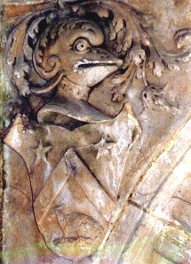
nature saline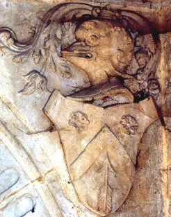
nature soufréeFIGURE VIII
(fontaine des Quatre Tias : natures métalliques)L'aspect de ces « goules » n'est guère engageant. C'est qu'il s'agit de nos deux Sujets, l'agent et le patient, qui sont terrés au fond de leur gîte minier : ils offrent un aspect déshérité, contourné, disgracieux, en un mot dégoûtant. C'est avec ces qualificatifs qu'en parlent d'habitude les alchimistes. On a connu ailleurs de pareils symboles. Souvenons-nous du chien du Corascène et de la chienne d'Arménie d'Artéphius, des gnomes de la cheminée alchimique de Fontenay, précisément, d'Isis et Osiris, de Gabricius et Beia, etc. On n'en finirait pas d'énumérer tous les noms que les Adeptes ont donné à leurs matières premières. Le lecteur pourra se reporter à la section Matière où ce point est traité directement. Ce qui va nous intéresser ici, ce sera d'abord de savoir sous quelle forme, sous quelle apparence sordide [comme en témoigne leurs hiéroglyphes] peuvent bien se présenter les matières et ensuite de tenter de les reconnaître l'une de l'autre par un certain nombre de signes distinctifs. Examinons d'abord la question du gîte minier et ayons à l'esprit que ce que les alchimistes appellent la « minière de leur pierre » ne correspond pas toujours à la matière telle qu'elle est extraite des cavernes mais plutôt telle qu'elle apparaît lors des traitements ultérieurs.
La fontaine des Quatre Tias a été érigée en 1542 et il serait vain d'aller demander à des ouvrages de minéralogie du XIXe siècle de nous être de quelque secours. C'est d'un ouvrage d'époque dont nous avons besoin. Par chance, le serveur Gallica de la bnf met à disposition un ouvrage de référence en la matière, la Pyrotechnie ou Art du Feu, de Vanoccio Biringuccio [Fremy, 1572] qui donne de très importants renseignements touchant aux minières des métaux et des minéraux. La première partie de ce traité expose les minières des métaux et la seconde partie, celles touchant aux minéraux. Il n'est pas question ici de résumer l'ensemble des faits exposés par Biringuccio. Nous devons donc trouver des indices nous permettant de cibler au mieux les matières qui nous intéressent. Des indices, nous en trouvons heureusement dans les blasons armoriés qui soulignent les caractères de nos deux natures. En premier lieu [cf. section prima materia], on sait que les alchimistes s'accordent au moins sur le fait qu'un minéral et un métal sont nécessaires et suffisants pour l'oeuvre entier. Cela, hélas, ne nous avance guère et c'est ailleurs qu'il nous faudra trouver d'autres éléments. Examinons les meubles des blasons représentés sous les masques hideux de nos natures [figure VIII].Voyons d'abord le blason de gauche. Plus qu'un blason d'ailleurs, c'est d'un écu qu'il s'agit. Il est divisé par un chevron. On devine à la partie inférieure un dragon et à la partie supérieure, plus nettement visibles, deux étoiles.
Nous avons vu qu'en alchimie, le dragon, cet animal fabuleux, est employé soit comme symbole de l'une des matières premières, soit comme symbole du Mercure commun. Pernety, dans ses Fables Egyptiennes et Grecques, puis dans son Dictionnaire mytho-hermétique, a signalé plus de cinquante noms sous lesquels le Mercure commun est connu. Il est clair que dans notre cas, le dragon est l'hiéroglyphe de l'une des materia prima. La confusion la plus totale semble régner dans ce qu'écrivent les alchimistes sur leurs matières premières mais une analyse patiente des textes montre, en somme, qu'elles peuvent être réduites à deux genres : une terre vitriolique qui contient une ou deux natures métalliques et un sel fixe qui sert à la préparation du Mercure. D'aucuns ont cru y voir l'antimoine. Sa minière se trouve dans les montagnes, se tire par diverses opérations et on en trouve [Biringuccio] dans plusieurs lieux d'Italie. Ceux qui font les vases d'airain le mettent en oeuvre et d'autres s'en servent pour faire des miroirs d'acier ou de verre. D'autres ont cru que les marcassites feraient leur bonheur. C'est peut-être parce que les marcassites sont jointes avec toute minière de métal. Biringuccio pensait que ce minéral formait une sorte d'exhalaison venant à sortir des matières secondes ou le sperme menstrueux que les métaux viennent à concevoir. On disait que la pluie, à force de soleil, pouvait introduire quelque vertu, avec le temps, ce que la chimie moderne explique à présent très bien [XIXe siècle]. Cette composition de marcassites est trouvée en diverses couleurs, et celle qui est luisante et jaune semble être d'or ; on en trouve encore qui approche la couleur de l'argent et d'autres variétés semblent faites comme de petites pièces couplées et brunies ; elles tiennent du blanc et du jaune. Les plus difficiles à trouver semblent celles sur lesquelles sont disposés certains grains de diverses tailles, qui ressemblent à des dés à jouer, qui ont l'odeur du soufre et sont peu dures. Quand on vient à les battre sur l'acier, elles rendent du feu en abondance. Cet effet se produit davantage encore pour les marcassites qui se trouvent au-dessus de la minière du vitriol, qui ressemble à du fer enduit de glu ou de colle. Biringuccio assure que c'est la variété blanche qui doit être élue par l'Artiste.
Comme on l'observe, il semble que d'un métal à l'autre, nous progressions dans la bonne direction qui est celle d'un minéral qui est lié d'une façon particulière à un métal. Voyons, puisque nous y sommes, la minière du vitriol. Le vitriol semblait, pour les anciens chimistes et minéralogistes avant la lettre, une substance minérale produite par exhalaison, et dont les matières élémentaires, aux dires de certains, pouvaient engendrer les métaux, y compris l'or. Le vitriol, pour Biringuccio, semble être de la nature de l'alun, ayant quelque substance corrosive qui pique la langue. Il ne manque pas à se résoudre, étant réduit dans un lieu humide ou mis dans l'eau. Le vitriol a la réputation, au XVIe siècle, d'avoir cinq qualités. La première desquelles, est la propriété d'être soufre, la seconde, d'être d'alun, la troisième de posséder le pouvoir corrosif du nitre. Une vertu métallique doit être notée en quatrième position, et, enfin, il possède des propriétés du fer. Sa minière se trouve en des lieux sauvages et peu fréquentés et il le faut extraire et tirer de vallées qui sont au pied des montagnes, où cette substance tient sa résidence et où elle est enclose. Il paraît qu'on trouve son gîte plus communément en terre noire, ou dans une pierre tendre. Il faut prendre attention, surtout, aux pierres qui présentent des taches jaunes et vertes et qui sont proches de soufrières car son odeur approche de celle du soufre. Ce vitriol doit être cherché aussi près des eaux corrompues ou des eaux desquelles se dégagent des fumerolles qu'on croirait sortir des naseaux de quelque dragon babylonien. C'est d'une phrase, en terre infernale ou luciférienne, qu'il faut chercher sa minière. Quand on la trouve et qu'on en extrait une portion, cette matière doit être séchée l'espace de six mois. Il faut avoir soin de remuer le tout, en sorte de pratiquer de véritables cohobations mécaniques avec une pelle et, passé ce temps, il faut mettre cette matière en quelque lieu couvert et la laisser reposer encore six mois avant de pouvoir enfin s'en servir. Nous citons à présent directement Biringuccio :
L'expression « Dragon babylonien » est employée par N. Flamel dans ses Figures hiéroglyphiques :
"De ces deux Dragons ou Principes Métalliques, j'ai dit en mon Sommaire que l'Ennemi enflammeroit par son ardeur le feu de son Ennemi ; et qu'alors, si l'on n'y prenoit garde, on verroit par l'Air une fumée venimeuse, et de mauvaise odeur, pire en flâme et en poison que n'est la tête envenimée d'un Serpent et d'un Dragon Babylonien." [Fig. Hiér.]
Il ne fait guère de doute que c'est bien une substance vitriolique qui est nommée. Pour autant, il ne s'agit peut-être pas du vitriol vulgaire. Le premier dragon Babylonien fut représenté comme une bête quadrupède, avec la tête, les épaules et les pattes avant du lion, un corp couvert d'écailles, une paire d'ailes emplumées, les membres arrière semblable à des serres d'aigle, et une longue langue fourchue de serpent. Pour les Grecs, le serpent primitif était le drakôn, un mot basé sur la racine indo-européenne darc, signifiant « voir clairement ». Les dragons sont doués d'une vue perçante, d'un regard qui peut être meurtrier. On les associe aussi au printemps. Le mot désignant le printemps dans nombre de langues indo-européennes et sémitiques est le même que pour « l'oeil ». Il y a le rapport à l'eau, aussi. Les Grecs avait également un mot pour désigner le dragon femelle : « drakaina ». Voyons à présent l'article alun de la Pyrotechnie de Biringuccio :
L'alun par le vulgaire appelé alun de roche (laissant à vous dire la déduction du vocable) est une substance terrestre congelée et luisante de nature chaude et sèche, de saveur âpre, accompagnée de goût salé, ayant la propriété de reteindre et ronger. Et se peut tirer par artifice des pierres minérales. Vous assurant que tous ceux que j'ai vu sont d'une même nature, mais ils ne sont de semblable couleur. Car l'un est blanc et l'autre rouge. Pline récite qu'il s'en trouve de noir, ce que a été connu par les Anciens : mais on ne trouve par écrit qui a inventé le moyen pour le trouver et tirer tel que les Modernes usent pour aujourd'hui. L'alun outre son intérieure nature salée, a une grande viscosité, laquelle est plutôt découverte que ne sont les autres effets. Car si on vient à le mettre au feu pour le calciner, il vient à se résoudre facilement avec eau et feu. Les alchimistes et ceux qui départent l'or s'en servent merveilleusement, et sans l'aide d'iceluy, il leur serait impossible de faire leurs eaux fortes. Et si n'est rien moins nécessaire à ceux qui font profession de teindre draps et laine qu'est le pain à l'homme. D'avantage il est mis en oeuvre par ceux qui accoutrent le corail, et est appliqué en médecine pour obvier à plusieurs maladies et infirmités. Sa mine se trouve aux montagnes, tout ainsi que celles des autres : mais elle se rencontre en bien peu de régions, encore que les anciens ayent récité et assuré qu'il s'en trouve en Chypre, Arménie, Macédoine, Ponte, Afrique, Sicile, Sardaigne et Espagne, et semblablement Carthage en un lieu appelé Mazaron, mais en Italie il se trouve en plusieurs lieux, excédent en beauté, quantité et bonté celui des autres contrées. Et pour contenter vos désirs, je vous dis qu'il s'en trouve en la terre des Napolitains à Ischia, à Pozulle, et semblablement en la terre romaine à douze mille de la Mer entre Civita Vechia et Corneto, en un lieu appelé Letolfe, là où plusieurs montagnes sont assemblées. La plus grande partie, desquelles, sont de celles qui produisent l'alun, et ne furent découvertes jusqu'au temps de Pius Secundus, après lesquelles minières de la chambre apostolique, ont fait diligenter de les caver, et ont en tiré un trésor qu'on ne peut estimer. [...] Il s'en trouve encore en la terre du domaine de Sienne, à Massa et à Mont rond, et semblablement aux contrées de Piombin, Volterre et à Campiglia, sans que je sache en toute l'Italie ni au dehors autre mine d'alun. Vous assurant celui que j'ay vu être de trois sortes différentes, l'un blanc et semblable aux pièces grandes de cristal, ayant semblable lustre, et se congèle en forme fort épaisse et quarrée, tellement qu'on jugerait diamants d'excessive grandeur être posés sur les quatre extrémités et coins, tant beaux ils se démontrent. Une autre vient à se rencontrer approchant de la couleur rouge : qui se congèle plus soudainement que le blanc, à la netteté duquel il n'approche, mais il a en soi plus de forces encore, qu'il ne soit à la vue si agréable. Toute l'autre est rouge, et il est de nature plus corrosive, comme son opération le fait apparaître. Joint aussi que le regardant, vous le jugeriez de couleur de feu, ayant apparence de plus de chaleur que n'a l'autre, et si fait l'eau des départeurs beaucoup plus forte, et avec moins de flamme. Vous assurant que c'est de celui qui vient de Metellin, Mazaron, et Carthage, qui sont assez semblables en couleur et grandeur, et un chcun d'eux a sa pierre particulière. Le blanc vient à être trouvé dans une pierre blanche, ferme et pesant, et de couleur fauve. Et combien que de plusieurs pierres diverses en couleur, l'alun vienne à sortir, il s'en trouve de couleur basanée, entre les autres le plus tendre. Vous assurant qu'on ne saurait juger à l'oeil, n'avoir signe par le goût de l'alun, fut réduit en aucune pierre sans le faire cuire, premièrement par un certain jugement général et confus, que les praticiens viennent à concevoir par expérience. Toutes les bonnes mines de l'alun, au moins celles qu'on veut mettre dedans le feu, doivent être aucunement dures, et seront les meilleures celles qui pèseront le plus, et qui n'auront aucun petit trou dedans : sur la sommité d'icelles, l'on trouvera toujours leur marcassite une pierre appelée pyrite, presque aussi dure au fer et feu que la pierre qui est propre pour faire l'alun, laquelle approche le fer en couleur, ayant aucune taches de blanc et de jaune, qui la font estimer pierre inutile pour faire l'alun, pour autant qu'elle ne peut cuire en fournaise, qui est cause qu'elle ne peut être rendue molle, comme la bonne pierre. Et si vous entreprenez de la faire cuire par continuation au feu pour la rendre tendre, je vous avertis que vous viendrez plutôt à faire consommer la bonne pierre, et passer les termes du feu, brûlant la substance de l'alun, si que ne lui resterait plus grande chose que calcinosité, et plus de crasse en la dissolution, lorsqu'on la voudrait congeler en la chaudière. Pour à quoi obvier les sages maîtres procurent avec diligence, que la pierre soit sciée avant que de la cuire. Et la font encore rescier pour la faire dissoudre, après qu'on l'a fait molifier, avant que de la noyer, et mettre dedans la chaudière. Les caves, auxquelles les ouvriers s'acheminent pour trouver cette pierre, se laissent ouvertes, et continue-t-on d'agrandir la brèche jusqu'à ce que ceux qui cherchent cette pierre soient arrivés au milieu de la montagne, là où ils espèrent trouver plus grande quantité de ce qu'ils cherchent. Par quoi, ayant quelque peu découvert la terre, ils ne tardent à faire une longue tranchée. Puis après ils commencent à tailler la pierre le plus profondément qu'il leur est possible, sans oublier d'appuyer et dresser pièces de bois, pour garder de tomber ce qui est dessus, qu'ils ne tardent pas à laisser ruiner quand ils voient leur point. Puis avec masses de fer et autres instruments, font diligence de la rompre, séparant la bonne d'avec l'inutile et mauvaise, en envoyant la bonne sur charettes à la fournaise, et la mauvaise en la rivière, tant pour nettoyer la cave que pour ne servir d'empêchement aux ouvriers, qui se travaillent toujours de passer outre, s'adressant la part où ils découvrent plus d'apparence de mine. Vous assurant qu'il ne serait de nécessité aux gens de cet état, qu'ils vinssent à percer le mont jusqu'au centre, pour voir ce qui est dedans, sans craindre à se aider de l'art de nigromance, ou de la force des géants, pour le remuer sans dessus dessous. Vous assurant qu'on ne peut trouver aisément les montagnes qui produisent telles mines, et si par cas fortuit, ou par art, on rencontre les mines, et si comme je vous ai dit, le tout sera conduit aux fournaises, qui ne sont faites autrement que les communes ou l'on forme la chaux, voûtées de la même pierre, et le semblable sera le dessous pour recevoir le feu pour cuire la pierre, de laquelle cette voûte sera remplie, et y fera le feu continué l'espace de dix ou douze heures ou plus, à la discrétion de ceux qui conduisent l'entreprise, à l'expérience desquels gît le tout. Car si on s'oubliait d'y prendre garde, la vertu et substance de l'alun viendrait à être consommée par le feu : tellement qu'on ne pourrait connaître la vertu de la pierre, et serait dangereux que le patron et conducteur de l'oeuvre vint à être intéressé bien grandement sur la dépense qu'il aurait faite. Par quoi il est nécessité de connaître les pierres et leurs propres couleurs avec indice d'expérience, et semblablement les feux et fumées sulfurées selon qu'elles donnent apparence de soi : Car on ne peut avoir notice par paroles que malaisément. [...] Quand cette pierre sera bien été fumée et cuite, et que la chaleur s'en sera absentée, les ouvriers la mettront hors de la fournaise pour la poser en quelque place plaine, en laquelle ils poseront ces pierres, les unes sur les autres, tout ainsi comme si on voulait dresser un rempart de muraille, qui continueront de parfaire jusqu'à ce qu'il soit de la longueur de vingt ou vingt cinq brasses, tenant en largeur quatre, et en hauteur une et demi approchant de deux. [...] il vous faut premièrement emplir d'eau (qui prendra son cours par un canal) la chaudière, laquelle sera si grande qu'elle tiendra cent charges d'eau : pour laquelle faire bouillir on mettra le feu au-dessous par la bouche du fourneau. Or aussitôt que les ouvriers l'apercevront bouillir, ils mettront dedans la pierre, laquelle deviendra tant fort subtile pour être mouillée, que sera presque covertie en terre. Vous avertissant qu'on en pourra mettre dedans à chacune fois six ou huit charretées. Et à l'heure sera de besoin que quatre des ouvriers se tiennent sur le bord, étant soumis de pelles de bois grandes et longues, tellement qu'ils aient pouvoir d'atteindre jusque au fond pour remuer et tourner parmi l'eau cette pierre, afin d'en tirer et mettre hors celle qui est par trop dure et mal disposée à se fondre. Et en cette façon trois ou quatre fois, ils ne faillent de jeter en la chaudière toute la pierre qu'ils veulent mettre en oeuvre, faisant intermission de l'un à l'autre l'espace de trois heures, donnant commodité à l'eau de perdre sa chaleur. Et après qu'elle est aucunement refroidie, et remettant de la terre au dedans, ils retournent à la faire bouillir. Et quand ils apperçoivent sur la fin que la chaleur est bien vidée des pierres non cuites, et l'eau décompagnée de crasse terrestre et épaisse, aperçevant l'eau disposée à se congeler, et bien chargée de substance d'alun, avec certains vases de bois, fermés en la façon des manequins, ils ne faillent à l'épuiser, et par certains canals, propres à cette affaire, la font aller rendre dedans les casses et cuves, les remplissant tous l'un après l'autre, là où ils la laissent reposer pour se congeler, quatre jours en hiver, et six en été. Sur la fin desquels les ouvriers font deux trous au dessous des casses pour donner cours à toute l'eau qui n'est congelée. Mais premièrement ils reçoivent toute la plus claire, et la remettent dedans la chaudière ou dedans l'une des casses, pour la remettre encore une fois, car elle a déjà tiré quant à soi la substance de l'alun. Vous assurant que ne saurez en usant ainsi de la trouver dedans les casses, que vous aurez remplies, attaché au bois en la même quantité et vertu qu'avait la pierre qu'on avait mise dedans, soit qu'elle fut blanche, ou rouge, selon la qualité de la mine, où elle aurait été tirée. Vous avertissant qu'on doit jeter au vent ce qui se trouve au fond de la casse, s'il n'y a apparence d'alun de lépaisseur de trois ou quatre doigts, pour autant que cette chose est inutile. Mais l'autre matière qui apparaît sur l'eau doit être remise en la chaudière en la compagnie des pierres qu'on veut faire rebouillir. L'alun qui se trouvera attaché dedans les casses, sera au besoin arraché avec un enchampre ou quelque autre fer, et l'avoir tiré et lavé dedans une petite cuve, sera réduit à couvert dedans un magasin, pour autant qu'il est conduit à la fin de sa perfection. Je ne veux oublier de vous avertir qu'avec l'avantage des ferrements, fournaises, chaudières et grandes casses, on vient à faire amas de l'alun en plus grande quantité, tellement qu'on vient satisfaire à la dépense, étant aidé du profit qui en vient à sortir. Plusieurs autres espèces semblables en substance à cette, se trouvent, come l'alun de Catina chiama, sec et de Plume, qui est tout ce que je pourrais ou saurait dire de l'alun tant artificiel comme naturel. Nous avons tenu à citer en entier le chapitre 6 sur l'alun, extrait de la Pyrotechnie de Biringuccio pour plusieurs raisons :
- d'abord, on ne trouve aucune autre description de la façon de « caver » les flancs de montagnes pour en tirer ce précieux minéral ;
- ensuite, il est fait état de trois réitérations d'une même technique dans le processus de concentration de l'alun ; l'attention est attirée sur le risque que l'on court à trop pousser le feu : on perdrait alors le Sel sans espoir de retour ;
- enfin, la matière inutile trouve au contraire tout son emploi dans notre Art. C'est le Mercure commun qu'il faut recueillir et purifier ;Il nous reste à parler des deux étoiles, mais cet arcane a été déjà amplement commenté et nous laisserons au lecteur le soin d'examiner ce point [voir étoile en recherche]. On se contentera de dire que là où il y a une étoile, le principe Sel n'est jamais très loin [voir la section réincrudation en particulier]. Qu'en plus, le Mercure commun est l'un des corps composés qui peuvent le mieux se soumettre au processus de réincrudation. Buffon, à cet égard, nous dit que l'acide aérien, c'est-à-dire l'Esprit universel des alchimistes, participe de ce Sel et que deux des plus savants chimistes du XVIIIe siècle, MM. Macquer et Baumé, ont reconnu des indices de substance alcaline dans la portion terreuse de la matière saline. Ainsi, Buffon écrit-il :
"Quoiqu'essentiellement argileuse, la terre de l'alun paraît cependant exiger un certain degré de calcination, et même le concours des sels alkalis pour former facilement et abondamment de l'alun avec de l'acide vitriolique ; et M. Baumé est parvenu à réduire l'alun en une espèce de sélénite, en combinant avec ce sel la plus grande quantité possible de sa propre terre. Cela me paraît indiquer assez clairement que cette terre qui sert de base à l'alun n'est pas une argile pure, mais une terre vitreuse mélangée de substances alcalines et calcaires." [Histoire naturelle des Minéraux]
En forçant le feu, on peut obtenir davantage que le Mercure commun mais c'est là une opération que les Artistes jugent dangereuse et qui ne convient qu'aux plus grands maîtres. Si l'on chauffe fortement le Mercure commun, avec un tiers de son poids de charbon ou d'une substance végétale quelconque, comme le sucre, du miel, de la farine, on obtient un résidu pulvérulent, semblable au poussier de charbon dont parle Fulcanelli dans les Myst. et qui jouit de la singulière propriété de s'enflammer au contact de l'air humide, et de brûler à la manière de l'amadou. Il faut, d'abord décomposer notre premier sel. On met dans une terrine vernissée une livre [0.5 kg] du Sel que vous connaissez avec huit onces [1 once : entre 24 et 33 g] de miel jaune. Le vaisseau doit être clos et placé dans un fourneau chauffé par un feu capable de liquéfier le sel. Après s'être liquéfiées, les matières se boursouflent et se réduisent en grumeaux. Lorsque la matière est dans cet état, on la pulvérise grossièrement, on achève de la dessécher : il se forme alors une poudre noire charbonneuse. On la met dans un matras dont le col ait environ six pouces de long [1 pouce = 27 mm]. Ce vaisseau doit être remplis aux ¾. On place ce matras dans un creuset avec du sable et on en recouvre la boule d'environ un doigt d'épaisseur. On met dans un fourneau le creuset qui contient le matras, qu'il faut chauffer par degrés. On continue de chauffer ainsi pendant un quart d'heure ou jusqu'à ce qu'il ne paraisse plus de fumée par l'ouverture du matras et qu'il s'exhale à la place une vapeur de soufre qui s'enflamme ordinairement. Lorsque ces vapeurs enflammées ont paru pendant environ un quart d'heure, on ôte le feu du fourneau et on bouche le matras. On verse après refroidissement complet la matière que contient le matras dans un flacon sec et chaud que l'on bouche à l'émeri. Cette poudre, lorsqu'on la verse sur du papier à l'air libre, s'enflamme spontanément ; sinon, il suffit de souffler dessus la légère vapeur humide qui sort de la bouche. Dans cette opération, il faut impérativement que la matière soit aussi sèche que possible.
Corrélât alchimique :
il est facile de voir dans cette poudre, selon l'hermétisme, une véritable terre de feu. C'est par le contact de l'Air et de l'Eau que cette Terre fait paraître son Feu qui n'était auparavant qu'en puissance. Cette matière se comporte comme une sorte de Feu élémentaire et présente les caractères d'un Mercure incontrôlé produisant trop rapidement un Soufre qui ne peut servir à rien. C'est que le Mercure qui a été formé est un composé hybride, qui présente à la fois des caractères du Mercure commun et du Mercure philosophique. Mais il en a en quelque sorte tous les défauts et aucune des qualités requises. Remarquez que si vous ôtez l'Eau de l'équation hermétique, la substance ne s'enflamme pas. Cette curieuse disposition aurait permis à certains Artistes de préparer à partir du Mercure commun, le Sel dans un grand état de pureté. Mais alors, il faut priver aussi vite que possible la matière, de l'Air pour l'abandonner sans délai à Neptune.Tous les chimistes ont manipulé cette substance. Son avidité pour l'Air et l'Eau combinées tient à ce qu'elle contient l'élément mercuriel philosophique que M.A. Gaudin a su isoler dans ses expériences de synthèse [cf. Soufre]. Cet élément, les chimistes en connaissent, au vrai, sept variantes. Nous avons donné le moyen de le préparer avantageusement dans la section du Mercure. On le trouve décrit très exactement dans les ouvrages de P. Berthier [Essais par la voie sèche] et de Gay-Lussac [Cours de Chimie] ; cf. bibliographie.Le second blason, situé à droite, montre deux fleurs en chef et une flèche. Les fleurs nous ramènent au symbolisme général des abeilles, de la ruche et du miel. On en voit un bel exemple avec le poêle alchimique de Winterthur où la ruche a la valeur d'aimant et les abeilles sont l'équivalent du Mercure, puisqu'il s'agit de messagers entre les fleurs qu'elles pollinisent et le miel qui constitue le produit du pollen [le miel est assimilable à la Pierre des Philosophes]. Tout indique ici la marque de l'emploi d'une chaux métallique. Et la flèche est la même que celle qu'utilise le Sagittaire ; elle est d'une nature identique à la corne de la licorne et a valeur de Soufre. Nous en parlerons plus loin lorsque nous examinerons la licorne de la tour Rivalland. Les fleurs, dans la terminologie de la chimie d'autrefois, désignaient des oxydes colorés qui se déposaient au col des matras et des cornues. Mais la fleur est, à l'instar d'autres signes, un hiéroglyphe double et peut désigner un sel. Il ne s'agit pas, alors, du Sel que l'on vient de voir, qu'on nomme aussi sélénite, mais de l'un des composés du Mercure. C'est l'occasion de lire cet extrait du Cosmopolite :
"Et comme le Soleil centrique a sa mer et une eau crue perceptible, ainsi le Soleil céleste a aussi sa mer et une eau subtile et imperceptible. En la superficie de la Terre, les rayons se joignent aux rayons et produisent les fleurs et toutes choses. C'est pourquoi quand il pleut, la pluie prend de l'air une certaine force de vie et la conjoint avec le Sel nitre de la Terre (parce que le Sel nitre de la Terre, par sa siccité, attire l'air à soi, lequel air il résout en eau, ainsi que fait le Tartre calciné : et ce Sel nitre de la Terre a cette force d'attirer l'air, parce qu'il a été air lui-même et qu'il est joint avec la graisse de la Terre)." [Douze Traités, Epilogue]
Voyez ce que nous disons du salpêtre dans les autres sections [nitre - Char triomphal]. On connaît de véritables végétations métalliques qui ont fait l'objet de Mémoires, relatés à l'Académie Royale des sciences, par M. Homberg, notamment en novembre 1692. Homberg parle notamment de l'Arbre de Diane ou Arbre philosophique comme de l'une des plus curieuses opérations de la chimie. Ces arborisations ont fait l'objet de développements dans un autre Mémoire de l'Académie, daté de 1731, dans une expérience relatée par M. de la Condamine.
Il a mis sur une agate polie, ou sur un verre, posés horizontalement, un peu de solution d'argent, faite à l'ordinaire par l'esprit de nitre, et au milieu de cette liqueur épanchée, qui n'avait que très peu d'épaisseur, il a placé un clou de fer par la tête. Dans l'espace de quelques heures il s'est formé autour de cette tête de clou un très grand nombre de petits filets d'argent, qui, à mesure qu'ils s'éloignaient du centre commun, diminuaient toujours de grosseur, et se divisaient en petits rameaux. C'est là ce qui avait l'air de végétation. Car quoiqu'elle ne s'élevât pas comme les autres, et ne fût qu'horizontale, il lui suffisait de ressembler aux plantes rampantes. M. De la Condamine juge avec beaucoup de vraisemblance, que la cause générale de ce fait, est ce principe si bien établi en chimie, qu'un dissolvant qui tient un métal dissous l'abandonne, dès qu'on lui présente un autre métal qu'il dissoudra plus facilement. Ici le nitre a abandonné l'argent pour aller dissoudre du fer, ou la tête du clou, et de là s'en est suivi le reste. [...] Il peut arriver fort naturellement que dans une molécule d'argent et de nitre, l'évaporation de ce qu'il y a d'aqueux dans le dissolvant se fasse avant que le nitre se soit détaché de l'argent, et alors la molécule devient ce qu'on appelle en chimie un cristal. Ces cristaux qui ne sont pas de la même nature que des parcelles d'argent pures et dégagées du nitre, empêchent que les courants formés par celles-ci ne coulent librement, et troublent la régularité que pourraient avoir les ramifications.
Ce passage montre que les anciens chimistes étaient parfaitement au courant des transferts qui s'exerçaient dans une solution, en fonction du degré d'oxydation possible de métaux différents. Seul Lavoisier sut tirer tout le parti de ces observations et comprendre qu'il s'agissait de phénomènes d'oxydo-réduction. La préparation des chaux métalliques peut se faire d'abord par contact d'un métal et de l'air : on prépare ainsi l'oxyde noir de cuivre ainsi que les oxydes de plomb [massicot, minium], l'oxyde de zinc. D'autre fois, on prépare les oxydes par la calcination de leurs sels ; on peut employer à cet effet les carbonates, les sulfates et les azotates, décomposables par la chaleur. Les carbonates, c'est-à-dire les cendres, donneront en général un oxyde léger, mais qui peut retenir un peu du carbonate alcalin employé à précipiter le carbonate métallique ; les sulfates ont l'inconvénient de donner des oxydes qui retiennent un peu de soufre ; les azotates donnent un oxyde dense, compact et très pur, quand le sel a été bien préparé.
A titre d'exemple, veut-on préparer du sesquioxyde de fer ? Il suffira de verser dans une dissolution d'un sel de cet oxyde une dissolution d'ammoniaque. Le précipité, convenablement lavé, donnera du sesquioxyde de fer hydraté. Pour l'avoir anhydre, on le calcine. Ce procédé, fait notable, est applicable à la préparation de la plupart des oxydes métalliques et des terres. A l'état naturel, c'est-à-dire dans l'état qui nous suggéré par la figure VIII. Ce sont les oxydes de fer [fer oligiste, fer aimant, limonite] ; les oxydes de manganèse [pyrolusite], le corindon ou alumine, la cassitérite [bioxyde d'étain].C'est donc vers l'étude de la minière de ces oxydes qu'il faut se pencher, en se plaçant, là encore, dans l'optique de l'époque où la fontaine des Quatre Tias fut érigée. Nous possédons déjà une indication sur le gîte minier de ces sels métalliques qu'il faut aller débusquer : ce sont les fleurs en chef du blason. Il faut, en effet, dans la pratique de notre Art, bien comprendre que les métaux, tels que nous les connaissons sont autant l'ouvrage de nos mains que le produit de la nature et que tout ce que nous voyons comme plomb, étain, fer et cuivre ne ressemble point aux mines dont nous avons tiré ces métaux et c'est du reste pourquoi, on nous les montre sous des masques si hideux, bien enfouis sous la fontaine et sous la forme de casque [par cabale, cassis avec renvoi à cado, cassito : dégoûter, rendre fluide, filant, c'est-à-dire à l'état fondu].
Les minières de ces métaux sont constituées par des espèces de pyrites et sont tous composés de parties métalliques étroitement liées à des parties minérales, c'est-à-dire rendues impures par le mélange intime du feu fixé par Arès. Ainsi, la pyrite jaune n'est qu'un minerai de cuivre ; la pyrite martiale, un vitriol vert ; la galène de plomb et les cristaux de plumbum album ne sont aussi que des minerais pyriteux. Si l'on fait effort pour rechercher quelles peuvent être les influences, les puissances actives, capables d'altérer la substance des métaux et de changer leur forme au point de les rendre méconnaissables, comme en atteste la figure VIII, on aura progressé dans la compréhension de la voie alchimique véritable par laquelle il convient de les traiter. On se persuadera rapidement que c'est une influence saline qui aura pu ainsi les pénétrer et l'on aura fait la différence, fondamentale dans la compréhension de la Coction hermétique, entre le métal calciné par le feu et le métal minéralisé, c'est-à-dire entre la chaux des métaux produite par le feu primitif, et le minerai formé postérieurement sous une influence aqueuse. Toutefois, à l'exception de ces chaux métalliques produites par le feu primitif, toutes les autres formes sous lesquelles se présentent les métaux minéralisés, proviennent de l'action conjuguée des sels et des éléments humides, comme nous l'avons vu dans la section du Mercure de nature. Les alchimistes s'accordent à penser qu'il n'y a que trois Sels simples en leur Art : le premier formé des parties d'Arès, le second des cendres, et le troisième de l'Arsenic ou Soufre, comme le rapporte Philalèthe. Il est donc logique que nous rapportions, en toute hypothèse, les différentes minéralisations métalliques, à des combinaisons variables de ces Sels élémentaires [nous rappelons que nous ne parlons ici que par cabale ; on se tromperait si l'on voulait élire de l'acide sulfurique, de la potasse ou de l'orpiment : nous avons besoin de Sels philosophiques].L'occasion nous est donnée ici de mettre en garde les étudiants trop pressés - pour ne pas parler des souffleurs vulgaires ou des mercantis - sur le danger qu'il y aurait à ne voir en l'arsenic qu'un métal, ou dans le soufre, que de la substance de l'acide vitriolique et c'est par nuance qu'il faut comprendre que les métaux dont nous avons besoin ont été altérés par des Sels dont, par commodité, nous évoquons plus l'aspect sous lequel ils transforment le métal que leur forme propre qui ne saurait être, en l'occurrence, que virtuelle. L'exemple princeps est celui de l'or : ce métal exige une réunion en proportions définies de l'alkali et du soufre, si l'on veut obtenir sa minéralisation par voie alchimique. Pour les autres métaux, il suffit que soit l'arsenic, soit le soufre suffise, et dans des proportions qui ne doivent pas être calculées aussi rigoureusement que pour l'or. En dehors de la minéralisation, qui n'est qu'un des aspects de la transformation hermétique que subit le métal, il faut encore parler de sa pulvérisation. Pour reprendre notre exemple de l'or [voir aussi voie humide], sa dissolution radicale nécessite la coopération de l'Air et de l'Eau, si l'on nous entend bien, et encore cette dissolution n'est-elle qu'une division en ses parties les plus ténues ; l'Art ne peut pas, quoi qu'on en dise, défaire ses atomes et seuls les physiciens du XXe siècle ont su - est-ce miracle, est-ce désastre ? - libérer l'énergie du feu élémentaire qui gît confiné, tel le Dragon de Babylone, dans les entrailles de la matière.
En somme, on aurait tort de chercher la minière de notre Soufre rouge dans les terrains primitifs, les mines vulgaires. C'est donc dans des minéraux de « seconde main » pour ainsi dire, des minéraux d'occasion en somme, que nous devons débusquer la perle rare. Seuls l'or, l'argent et parfois le cuivre, se présentent dans leur état métallique ou simplement alliés à d'autres substances métalliques qui se sont fondues et sublimées avec le métal. Les trois autres métaux, le plomb, l'étain et le fer ne se trouvent nulle part dans cet état : ils sont toujours ou calcinés, ou minéralisés. Cette minéralisation ne procède pas seulement d'une juxtaposition, mais d'une altération bien réelle du Corps du métal : c'est un changement de forme de la substance même du métal qui s'opère en la circonstance. Les Artistes nous apprennent, dans leurs traités, que c'est aux sels et au soufre que l'on doit ce changement, par l'entremise du vitriol. Notre sujet doit être ici l'étude de la décomposition qu'a opérée la nature, de ces minerais. Il s'agit des concrétions qui sont produites assez souvent par l'Eau et d'autres par le Feu. Les alchimistes disent souvent que l'Artiste doit savoir imiter la Nature, mais il doit faire mieux que cela et apprendre à travailler à la fois par l'Eau et le Feu. Là réside tout le secret du Soufre rouge.
La rouille de fer et l'ocre sont les plus simples des premières décompositions du fer par l'impression de l'élément humide. Elle possède une couleur jaunâtre qui ne s'altère ni ne change que par une seconde décomposition exercée par l'Eau ou par le Feu. La rouille acquiert ainsi une première couronne en passant à l'état d'ocre brune, qu'on appelle aussi terre d'ombre, comme l'ocre légère et noire dont on se sert en Chine pour écrire et dessiner. Toutes deux ne sont que des décompositions ultérieures de la rouille du fer très atténuées et dénuées de presque toutes les qualités métalliques. Nous ne saurions donc trouver dans cette matière notre soufre rouge, quand bien même la façon de traiter la rouille lui vaut de posséder la première couronne, sur l'échelle du caducée d'Hermès que l'on voit en frontispice du Triomphe hermétique de Limojon. Le principe est bon mais la méthode n'est pas idoine et ne vaut même pas pour les procédés spagyriques. Le Feu permet de leur rendre une vertu magnétique. Ces ocres brunes, noires, jaunes ou rouges, assez grossières, légères ou pesantes, plus ou moins agrégées, sont aisées à réduire en poudre, ce qui semble être la marque de la plupart des substances utiles dans l'Oeuvre. Elles sont mêlées de résidus terreux ou limoneux qui peuvent aider l'étudiant à se faire une opinion. On peut citer :- l'ocre martiale rouge qui semble devoir au Feu, sa couleur puisqu'il suffit d'exposer au feu l'ocre martiale jaune pour lui faire prendre une très belle couleur rouge [c'est d'ailleurs la succession des couleurs dans les régimes planétaires ; en terme moderne, le fer est simplement suroxydé et passe à l'état de sesquioxyde] ;
- l'ocre martial noire ou éthiops martial natif, n'est autre chose qu'une chaux de fer imparfaite. On la trouve, soit dans la vase des marais, soit à la surface de spaths en décomposition ; la présence de marne pourrait, selon certains, être une indication ;
- l'ocre martial bleue qui porte aussi le nom de bleu de Prusse natif se trouve dans les tourbières et sa couleur provient de l'alkali de substances végétales dont elle est composés. ces ocres sont retrouvées à l'île d'Elbe, au voisinage d'une montagne où l'on exploite une mine de fer grise et à facettes brillantes.Il faut s'arrêter à la terre d'Ombre que son nom désigne à l'hermétiste comme pouvant posséder des qualités que les vulgaires croient occultes. C'est bien à tort d'ailleurs que l'on prête aux vrais disciples d'Hermès le défaut d'ésotérisme alors que leur but doit être de rendre l'occulte manifeste [un traité appelé la Lux Obnubilata en rend témoignage]. C'est une terre chargée de bitume, plus légère que l'ocre, qui devient blanche au feu. Il paraît qu'elle est utile aux teinturiers et aux peintres ; on serait donc en droit d'y trouver plutôt une matière qui s'approche de celle que nous avons vu, en examinant l'autre blason à la figure VIII. Des chimistes se sont penchés sur la composition de cette terre d'ombre. Ils l'ont exposée à l'action du feu dans un creuset d'essai couvert, avec parties égales de flux noir et de corne de cerf râpée. Ils ont en retiré du fer pur qui valait bien celui de Suède. Cette terre paraît ressembler par sa couleur au safran de mars des boutiques, qu'on prépare en exposant de la limaille de fer à la rosée ou en l'humectant dans de l'eau de pluie.
A côté des ocres, nous trouvons l'émeril. Nous ne parlerons que de la variété qui n'est point attirée par la pierre d'aimant et qui a tous les caractères d'un grès dur mêlé d'une quantité de fer qui en augmente encore la dureté. Sa substance est celle du quartz, réfractaire au feu et ne peut se fondre qu'en y ajoutant une grande quantité de matière calcaire, et en lui faisant subir l'action d'un feu très violent et longtemps soutenu. On se sert de cette matière pour polir le verre. L'émeril est si dur que pour le mettre en poudre, on est obligé de se servir de moulins ou de machines d'acier inventées à cet effet. Le peu de métal que contient l'émeril n'est pas attirable par le fer : il durcit au feu et ne peut se fondre que dans un flux puissant. On appelle potée ou boue d'émeril, la substance qui se trouve au fond de l'auge des lapidaires qui emploient cette matière. Nul doute que, là encore, nous n'ayons affaire à la portion centrique de la terre de l'alun et cet émeril pourrait bien n'être que de l'alumine pure, voire du métal, inconnu encore au XVIIIe siècle, l'aluminium. L'émeril est d'un brun plus ou moins foncé et quelques minéralogistes le classaient autrefois parmi les jaspes. La minière de l'émeril se trouve en grande quantité dans les îles de Jerké et Guernesey : elles donnent un minerai grisâtre, plus ou moins lamelleux, parfois avec des inclusions de mica et parsemé de points d'or, d'argent ou de cuivre. En Espagne, la montagne d'où il se tire est de pierre de grès mêlé de quartz ; la mine en est noirâtre, très dure et composée d'un fer réfractaire. Certains disent qu'on en tire de l'or...En tout cas, il en contient comme on peut le voir dans la mine d'Alcacer d'Estramadure où, en rompant le minerai, on voit que l'intérieur est aussi lisse que l'hématite ; on en connaît aussi une variété de substance marbrée avec du quartz qui contient aussi de l'or.Les pyrites et marcassites constituent les minéraux types de ceux que l'on croit destinés au grand Oeuvre. Elles ont exercé une fascination singulière chez tous les étudiants en alchimie qui ont cru y trouver, à cause d'une certaine disposition radiaire et fibrée, l'étoile des Sages promise par les textes. Ces pyrites, première chose, contiennent une assez grande quantité de fer qui peut aller jusqu'à la moitié de leur masse. Le reste est constitué d'acide vitriolique fixé par le Feu ; la décomposition de ces matières pyriteuses varie selon que l'on procède par la voie humide ou la voie sèche. Par voie humide, leur altération commence par le centre de la masse alors que par voie sèche de calcination, ce sont les parties extérieures qui sont touchées les premières. Exposées à l'Esprit universel, les pyrites perdent leur dureté et leur cohérence. Il semble que le fer qui les compose soit déjà altéré parce qu'il n'est point attiré par la pierre d'aimant ; il doit donc être en forme de rouille ou de chaux produite par l'impression de l'eau. A ce titre, les pyrites sont d'authentiques concrétions, formées par la voie humide, c'est-à-dire par l'eau surchauffée sous pression [cf. section Mercure de nature]. Ces pyrites sont donc formées d'un principe Soufre très rudimentaire. Elles diffèrent d'un autre type de pyrites qui se présente sous forme cubique, où le fer est en moins grande quantité mais où les principes du soufre abondent. Leur décomposition donne naissance, si l'on peut dire, à des enduits brillants et pyriteux, des coquilles, des poissons et rendent compte d'un intérêt certain pour les alchimistes, mais on y chercherait en vain, là encore, notre Soufre rouge dans sa forme originelle. Quant aux marcassites, elles contiennent aussi du fer à l'état de rouille, ce qui a, hélas, détruit ses propriétés magnétiques, et par voie de conséquence ses propriétés philosophiques. On remarquera que certaines marcassites sont de couleur d'or, comme en Italie ou au Cap-vert. D'autres contiennent du cuivre et du fer.
La mine brune hépatique semble d'un intérêt supérieur : elle est formée de masses de couleur brun-rougeâtre ou couleur de foie et se distingue comme une mine de fer pyritiforme. Il s'agit d'une véritable terre ferrugineuse où le sel se présente sous les formes primitives des pyrites et du spath calcaire. On peut l'assimiler, en somme, à un embryon de Soufre et à l'un des principes du Mercure philosophique, mais l'analogie s'arrête là. On peut en rapprocher les mines de fer spathique où le fond primitif de la substance apparaît comme un spath calcaire que le fer a résolu ; elle se présente en amas blancs ou grisâtres, luisants et doux au toucher. Laissées au feu, ces matières deviennent noires et décrépitent lorsqu'elles sont pulvérisées. Quelques-uns de ces spaths affectent une forme lenticulaire [Fulcanelli a insisté sur l'importance à accorder à ce genre de disposition, mais sa réflexion paraît entièrement cabalistique].
Plus proche du véritable Soufre rouge, du moins sous sa forme vulgaire, est l'hématite. Il s'agit de concrétions dont la couleur est d'un rouge de sang plus ou moins foncé. Elles proviennent de la décomposition des mines spathiques et pyritiformes : elles se déposent en stalactites dans les fentes et cavités, au-dessus desquelles gisent les mines de fer en rouille. Il en résulte des masses qui produisent des figures bizarres et dont les arrangements, selon certains hermétistes, seraient à prendre en considération. Ces stalactites martiales peuvent être classées en hématite rouge ou pourpre, qui porte le nom de sanguine ; en hématite noire ou brune, plus ocreuse que la première ; en hématite jaune et enfin en hématite friable en paillettes, cette dernière pouvant affecter un aspect spéculaire qui la rapproche de la pierre du Levant ou pierre de Jésus [cf. section réincrudation].De ce premier groupe de concrétions martiales, nous retiendrons l'intérêt que revêt leur décomposition qui les rapproche d'une certaine façon de la putréfaction telle qu'elle est réalisée dans l'oeuvre ; mais ici, c'est la Nature, aveugle, qui est au travail et non l'Artiste. Cette décomposition est surtout le fait de l'eau, parfois du feu et l'élément mercuriel semble ici de première importance. Le principe soufre n'est présent que très atténué et a perdu l'une de ses vertus cardinales : le pouvoir d'attraction. La couleur seule constitue le trait qui le rattache fortement à la race du Soufre mais cette qualité ne saurait nous abuser. De même que les planètes affectent certaines couleurs que l'on croirait être douées d'une activité spécifique, nous savons que ces astres errants et les étoiles ne jouent aucun rôle dans l'Oeuvre et que c'est par cabale qu'il faut leur trouver une activité, toute spirituelle d'ailleurs.
Nous abordons maintenant les mines de fer spéculaire qui ont une autre envergure hermétique. Cette matière contient en effet une espèce de sablon magnétique, formée par voie humide. Sa couleur est grise et les lames dont elle est composée sont aussi luisantes que l'acier poli. Ce caractère brillant, éclatant, est une indication. Ajoutez à cela leur fragilité, comparable à celle du verre, leur interposition dans des roches argileuses ou quartzeuse, leur aspect en paillettes, en petites écailles, en tissu lamelleux ou strié, et vous y retrouverez les caractères que décrivent tous les bons traités d'alchimie.
On en rapprochera les mines de fer cristallisées par le Feu. Ces cristaux ont longtemps aiguisé la sagacité des savants qui ont recherché si d'autres métaux que le fer pouvaient se cristalliser par une longue action du feu : ils ont reconnu que les métaux, les demi-métaux et d'autres substances métalliques qui peuvent être purifiées sous forme de régules, formaient des cristaux. Ainsi, le bismuth est celui qui cristallise le mieux au feu et l'expérience suivante pourrait même, aux yeux de certains, être de la spagyrie avancée : si l'on verse du bismuth en fusion dans une assiette de terre, on voit insensiblement paraître des carrés à la surface ; quand il y en a un certain nombre, qu'on incline le vaisseau pour faire couler ce qui reste fluide, on a de beaux cubes isolés. Les cristaux de la fonte de fer produits par le feu agissent puissamment sur l'aiguille aimantée. On trouve dans les mines de Suède le fer en cristaux dans des roches où sont implantés des grenats, des schorls et des tourmalines. Nous retrouvons ici la marque du Mercure de nature.
Quand on saura que le fer dans ces cristaux, est tantôt apparent, noir et luisant, tantôt revêtu d'une croûte talqueuse, brunâtre ou verdâtre, nous aurons débusqué la piste du Lion vert. En effet, ce sablon magnétique ou fer brûlé résulte de l'attaque du Feu qui l'a entièrement décomposé en son humide radical et il ne peut plus souffrir d'autre décomposition : il peut séjourner ainsi dans le sein de la terre sans s'altérer pendant des siècles, ni s'amollir ni même se transformer en rouille. Il entre dans la composition des mines secondaires et des géodes. Une petite partie de ce sablon, mêlée ou interposée dans les concrétions que nous avons vu plus haut, suffit pour leur donner l'apparence du magnétisme. Ce sablon se présente sous la forme de paillettes aussi minces que le mica, mais il se présente parfois en masses compactes, noirâtres. En conclusion, ce sablon apparaît comme un Soufre qui possède une couronne sur le caducée d'Hermès de l'emblème de Limojon. Cependant, il paraît figé, prématurément pétré et présente les signes typiques des matières qui ont été trop calcinées : ainsi, il peut arriver que même la nature brûle ses propres fleurs...
Nous aborderons plus loin les concrétions spécifiques de l'or et de l'argent qui sont d'une autre nature.Voyons maintenant les concrétions du cuivre. Là encore, le cuivre se présente en masses pyriteuses dans lesquelles le métal apparaît fortement lié au soufre. Ces minerais présentent une couleur jaune-verdâtre mais, s'ils subissent l'action de l'air humide, leur surface s'irise de couleurs fort variées, rouges, bleues, vertes, et en somme, on pourrait presque y reconnaître les couleurs de la queue de paon et l'influence de Junon : ces légères efflorescences indiquent le premier degré de la décomposition de ces mines de cuire, et par là-même, le gain de la première couronne sur l'emblème de Limojon. Il faut s'attarder sur la malachite, qui est sans doute la plus belle de toutes les minéralisations du cuivre. C'est une pierre opaque d'un vert foncé, semblable à celui de la mauve d'où elle a tiré son nom. Fulcanelli en parle dans les Myst. en assurant que quelque trace de malachite pourrait aider l'étudiant à progresser. Si l'on voit comment il faut opérer pour préparer de la malachite artificielle, on comprend cette recommandation :
"Pour préparer ce minéral artificiellement, je chauffe une solution de carbonate de cuivre précipité dans du carbonate d'ammonium, dans une fiole au bain-marie, pendant huit jours. On doit remplir la fiole jusqu'au col et renouveler de temps en temps l'eau qui s'est évaporée, pour que la volatilisation du carbonate d'ammonium se fasse lentement. A mesure que le carbonate d'ammonium se volatilise, le carbonate de cuivre se dépose sous la forme d'une croûte cristalline verte, adhérente aux parois de la fiole. Cette croûte se couvre peu à peu de petits cristaux verts, très nets, de malachite. Leur composition est bien celle de la malachite naturelle. [...] chauffés au rouge, les cristaux perdent de l'eau et de l'acide carbonique, et se transforment en oxyde de cuivre noir." [Sur la reproduction artificielle de la malachite, M.A. Schulten, Comptes rendus, 1890, T. CX, n°4]
C'est, certes, une préparation spagyrique mais elle présente des analogies évidentes avec des points de technique alchimique : utilisation d'un sel de l'ammoniac, chauffage par la voie humide au bain-marie, lente volatilisation d'un dissolvant, voilà autant d'indices qui ne trompent pas. Pour obtenir le carbonate de cuivre, on peut aussi mêler à froid un mélange de vitriol bleu et de natron. On obtient un précipité vert-bleuâtre. Ce précipité devient vert par des lavages réitérés à l'eau chaude. On le désigne sous le nom de vert minéral ; c'est une sorte de malachite. Ce minéral se présente en masses concrétionnées vertes. Taillé et poli, il offre des veines de nuances différentes, et est employé pour la confection d'objets d'ornement, vases, coupes, etc. On peut en rapprocher l'azurite ou bleu de montagne, d'un beau bleu. M. Debray a reproduit artificiellement l'azurite en laissant pendant longtemps en contact, dans des tubes scellés à la lampe, une solution d'azotate cuivrique avec du carbonate de chaux. Voici cet extrait des Compte-rendus de l'Académie des sciences :
J'ai pu reproduire assez facilement l'azurite en mettant en présence de l'azotate de cuivre dissous et de la craie dans des tubes scellés à la lampe. La réaction s'opère à la température ordinaire et sous une pression assez faible. Dans mes expériences elle n'a jamais dépassé sept à huit atrnosphères, et elle est parfois descendue jusqu'à trois.
J'indiquerai rapidement comment on dispose l'expérience. On prend un tube ayant environ 20 à 25 millimètres de diamètre, fermé à un bout ; on y introduit des bâtons de craie et des cristaux d'azotate de cuivre, pesés à l'avance, de manière à fournir un dégagement de gaz dont la pression rapportée au volume que l'on donne au tube en le fermant ne dépasse pas un nombre déterminé d'atmosphères. On met toutefois un excès de craie par rapport à
l'azotate de cuivre. Cela fait, on étrangle le tube à peu près à la hauteur calculée, après y avoir introduit un manomètre à mercure, et l'on y verse de l'eau par un entonnoir effilé ; la dissolution de l'azotate se fait avec assez de lenteur pour que l'on ait tout le temps de fermer le tube sans craindre l'effet de la pression intérieure. On peut aussi fermer le tube après y avoir mis les substances sèches qui doivent réagir, ainsi qu'un autre tube contenant de l'eau ; en renversant l'appareil, l'eau s'écoule et la réaction se produit.
On voit d'abord la craie se couvrir d'une matière verdâtre ; peu à peu et après que la liqueur a été décolorée, cette matière verte se transforme en cristaux mamelonnés d'azurite. Les réactions qui se produisent dans le tube sont simples. Au contact de l'azotate de cuivre la craie se transforme lentement en azotate tribasique de cuivre :3(Cu O,Az O5) + 2(Ca O C02) = 3 Cu O,Az O5 + 2 (Ca O Az05) +-2 CO2.
L'azotate neutre de cuivre une fois disparu, il reste en présence l'azotate tribasique et du carbonate de chaux dissous dans l'acide carbonique, il y a alors production d'azurite par la réaction suivante
3 CuO,Az05 + CaO,2CO2H0 = 3 CuO.2CO2.HO + CaO.Az05.
On ne peut remplacer le carbonate de chaux par les carbonates alcalins. Voici en effet les résultats de quelques expériences faites à ce sujet. Si l'on mélange de l'azotate tribasique de cuivre avec du bicarbonate de soude en excès, que l'on fasse une pâte du mélange avec un peu d'eau ; puis que l'on chauffe le tout dans un tube scellé, à la température de
160 degrés environ, on obtient une substance bien cristallisée, d'une belle couleur bleue et que l'on pourrait prendre au premier abord pour de l'azurite. On la sépare du reste de la matière par des lavages à l'eau froide qui ne l'altèrent en aucune façon. Sa composition se représente par la formule suivante :Cu 0, C02 + Na 0, C02.
C'est le premier exemple de carbonate double de cuivre anhydre et indécomposable par l'eau. Le bicarbonate de potasse donne également un produit bleu cristallisé, mais l'eau le décompose avec une extrême facilité. Dans ces dernières expériences, on peut remplacer l'azotate tribasique de cuivre par tout autre sel, par le carbonate de cuivre par exemple ; il faut seulement mettre le bicarbonate alcalin en excès. Les essais que j'ai tentés pour reproduire l'azurite en faisant agir l'acide carbonique à haute pression (10 à 14 atmosphères) sur le carbonate de cuivre ordinaire ou sur la malachite, mélangés ou non de carbonate de chaux, ne m'ont donné aucun résultat. Ces carbonates ne se sont ni dissous ni altérés. Je dois dire en terminant qu'il y a environ deux ans M. Becquerel a annoncé à l'Académie qu'entre autres espèces minérales il avait reproduit l'azurite ; mais le procédé qu'il a employé et qu'il n'a indiqué que d'une manière très-générale, diffère essentiellement du mien.
Sur la production de l'azurite, H. Debray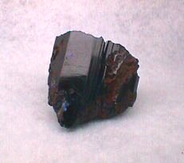
FIGURE IX
(cristal simple d'azurite)On aurait tôt fait, si l'on n'y prenait garde, à prendre les paroles de Fulcanelli à la lettre et à considérer que la pierre philosophale n'est autre...que de la malachite. Mais nous savons combien sont retors nos Philosophes et il est facile de comprendre que c'est quelque substance intervenant dans la préparation artificielle de l'azurite qui doit attirer l'attention. Ce n'est certes pas le patient, c'est-à-dire l'azotate de cuivre mais bien l'agent : la craie. Voyez d'autres sections sur le sujet [voir ces termes en recherche] et vous comprendrez alors la véritable nature du stibium de Tollius, le nom véritable de l'antimoine saturnin d'Artéphius, bref, ce que désignent l'albâtre des Sages de Fulcanelli et le tripoli d'E. Canseliet.
Glaser dit dans son Traité de la Chymie, que le cuivre est un métal imparfait, composé de peu de Sel, et de peu de Mercure, mais de beaucoup de Soufre, rouge et terrestre...On veut bien le croire. Notez pour mémoire que les anciens chimistes recueillaient lors de la préparation de l'esprit de Vénus, dans le caput mortuum, une terre noire comme du charbon qui n'était autre que de l'oxyde cuivrique CuO tandis que l'oxyde cuivreux CU2O est rouge. Quant au carbonate d'ammonium que Schulten évoque plus haut, on le prépare en chauffant ensemble dans une cornue de grès ou de fonte, 8 parties de sel ammoniac et 10 de craie. Le sesqui-carbonate d'ammoniaque se dégage sous forme d'une vapeur blanche qui se condense dans le récipient refroidi.Au nombre des concrétions singulières, il faut ranger la pierre arménienne, qui fait partie du cuivre et qu'il faut séparer du lapis-lazuli auquel elle ne ressemble que par la couleur. Sa couleur bleue est mêlée de verdâtre et parfois tachée de rouge. Elle diffère aussi du lapis en ce qu'elle se calcine facilement au feu, qu'elle y entre rapidement en fusion et que sa couleur s'y détruit. C'est avec cette pierre que l'on prépare le bleu de montagne artificiel des boutiques. Elle ressemble à la chrysocolle et on en trouve dans le Tyrol, en Hongrie, en Transylvanie. il arrive que l'on trouve de la malachite et de la pierre arménienne dans le même morceau.
On est plus en peine de trouver des concrétions d'étain et même de plomb. Il ne faut qu'une médiocre chaleur pour fondre ces deux métaux, ce qui explique pourquoi ils sont, pour les alchimistes, de la race de Saturne [l'étain est du plumbum album et le plomb du plumbum nigrum]. Le premier degré de décomposition des galènes ou pyrites de plomb, s'annonce, comme dans les pyrites cuivreuses, par des fleurs d'iris qu'elles prennent à leur superficie ; à un degré de plus, elles perdent leurs belles couleurs et se présentent comme une mine de plomb blanche et on ne trouve ensuite que du foie de soufre, changeant le blanc de cette mine en brun et noir. C'est, pour nous, un indice supplémentaire ; car le plomb parvient ici à la deuxième couronne dans le caducée érigé sur l'emblème de Limojon. Mais, dans quel état de dégradation ! La marque de Mercure pèse lourdement sur ces métaux abîmés. On connaît aussi une mine de plomb verte, par du cuivre dissous qui lui donne cette couleur.
Vient ensuite le Mercure, ce grand coupable, ce rusé farceur, ce fou intrépide, mais aussi ce fidèle serviteur pour qui sait trouver le bon. Les souffleurs se sont avisés d'utiliser le vif-argent vulgaire et sont tombés en plein dans la chausse-trappe que les Artistes leur avaient tendue. Au lieu de quoi, il aurait fallu se servir de l'argent-vif des Philosophes. Mais ceux-ci avaient compris, depuis bien longtemps, que le vif-argent coulant serait vu par les souffleurs et autres insensés comme l'état premier des métaux. On peut regarder le cinabre comme le premier produit de la décomposition du vif-argent ; des savants ont cru voir une deuxième couronne dans une mine de mercure cornée volatile ou mercure doux natif : il se présente comme du mercure solidifié et minéralisé par l'acide muriatique avec lequel il paraît s'être sublimé : il est utilisé dans notre Art par la voie humide, dans la préparation du sceptre de Jupiter.
Nous n'évoquerons pas les concrétions de l'antimoine ou du bismuth, ces deux métalloïdes étant plutôt trouvés à l'état de régule. Le zinc, par contre, n'est présent qu'à l'état de concrétions et semble avoir été saisi par les substances ferrugineuses : on parle d'ailleurs, à son endroit, de vitriol blanc.Nous avons terminé l'examen de la partie supérieure du blason de droite, avec les deux fleurs en chef. Nous rappelons que la flèche emplumée, située sous le chevron sera analysée plus loin, à l'occasion de l'examen de l'un des arcanes de la tour Rivalland. Ayant à présent bien en main nos deux natures, qui tiennent du métal par leur substance et du minéral par leur forme, il reste à déterminer de quelle manière nous pourrons nous en servir.
Cette parenthèse que nous avons développée sur la préparation de la malachite et de l'azurite n'était pas gratuite. Nous avons vu que la présence de craie était nécessaire à cet effet. Dans d'autres sections, nous avons insisté sur l'importance que revêt dans l'Art, la mérelle. Du reste, d'autres auteurs avant nous, ont appuyé de leur autorité cette relation explicite aux coquillages, aux coques, ou de façon plus détournée par l'allégorie du Déluge. Fulcanelli a évoqué la mérelle, à Bourges et E. Canseliet, dans ses Études de symbolisme et surtout, dans ses Deux Logis alchimiques a fait feu de tout bois en ce domaine. C'est à l'occasion de l'examen de l'Hôtel Jacques-coeur, que Fulcanelli a posé les premiers jalons :
"Parmi les hiéroglyphes favoris de notre argentier, la coquille Saint-Jacques tient, avec le coeur, une place prépondérante." [Myst., p. 178]
Petit trait de cabale, la liaison avec le coeur ne peut être savourée à sa juste valeur que par l'étudiant qui sait ce qu'est, dans notre Art, l'Âme. Et c'est vrai que sans coquille, l'Artiste aura des difficultés à faire son oeuf. Évidemment, nous dira-t-on, quoi de plus naturel que de trouver un blason montrant des coquilles à l'entrée d'une fontaine ? Ce bivalve ne symbolise-t-il pas la fécondité propre à l'eau ? Ses contours ne rappellent-ils pas certaines formes féminines ? Nous en conviendrons volontiers, mais ce que le touriste prendra comme simple ornement, nous en ferons notre miel et notre Mercure tout uniment. N'oublions pas que, chez les Aztèques, le coquillage est le dieu-lune et que la lune est liée à la terre, en participant aux forces chthoniennes placées sous la maîtrise de Ploutos. On voudra bien se reporter à la section du Mercure qui contient tous les éclaircissements désirables, sur l'étrange parturition minérale qui résulte du contact des roches trappéennes et calcaires et sur l'importance générale à accorder, dans la confection du vase de nature, au métamorphisme de contact.
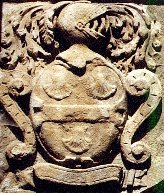
FIGURE X
(blason aux trois mérelles et au casque)Des mérelles, nous en trouvons trois sur ce blason qui orne l'angle gauche du fronton de la fontaine. C'est de correspondances complexes que procède la coquille dans le Grand oeuvre. Et son activité dans le monde souterrain n'est pas moins étonnante que celle que les alchimistes lui ont trouvée, sans doute après bien des voyages initiatiques. Parce que, en somme, la coquille Saint-Jacques est inséparable de Compostelle. Et ce n'est pas là qu'un jeu de mots, que des esprits forts pourrait trouver vain et futile. Rêver de coquille, c'est une invite au voyage toujours doté d'une valeur positive. Autant la coquille paraît blanche, autant le corail qui ne lui est pas entièrement étranger, se pare de magnifiques couleurs et étend sous l'océan, une végétation arborescente, en forme de sang minéral. Selon une légende grecque, il serait né des gouttes de sang versées par Méduse, quand Persée, tranchant sa tête, parvint à libérer le fabuleux cheval volant : Pégase. Et du reste, c'est par l'action de Pégase que l'Artiste pourra, en s'entourant de l'action combinée du sang végétal des métaux et du lait minéral de la mérelle, bâtir sa pierre à chaux et à sable. Cette particularité des coraux n'a pas échappé aux maîtres de l'Art. Philalèthe [Introïtus, XVI] procède à ses triturations philosophiques avec un pilon de corail blanc ; Salomon Trismosin prend en exemple le corail, comme possible résultat de la poudre de projection [La fleur des Thresors, Sevestre, Paris, 1612]. Cyliani n'est pas en reste et se déclare capable de préparer des perles rares [Hermès Dévoilé, c. 1831]. Denis Zachaire sait aussi procéder à des opérations fabuleuses mais, hélas, ses ouvrages sont difficiles à trouver. Bernard de Trévise prend la couleur du corail comme étant celle de la Pierre [Verbum dimissum].
Déjà, Démocrite le Mystagogue, au IIe siècle av. J.-C. préconisait d'utiliser le corps de la Magnésie pour fixer le Mercure et le précipiter ensuite sur l'Or philosophique afin d'obtenir le corail d'or corporifié [MS. 2325, fol. 11]. M. Berthelot s'est penché aussi sur le corail et nous rapporte, fort à propos, que le signe de l'étain, cassiteros, comprenait le corail et toute pierre blanche. Nous comprenons mieux pourquoi figure, au-dessus du blason coquillé, un casque [par cabale, le casque, cassis, évoque tout ce qui dégoutte, par cassito, cado ; voyez les blasons alchimiques]. C'est ce casque, lié aux mérelles, qui atteste de sa vertu hermétique à l'instar de celui dont nous avons parlé aux blasons alchimiques.
Hésiterait-on encore à admettre le bien fondé de notre hypothèse ? Nous citerions Basile Valentin :"Sa rougeur vive et claire est appropriée à l'escarboucle, aux rubis et au corail ; sa couleur bleue, au saphir; la verte, aux émeraudes ; la jaune, aux hyacinthes et la noire aux grenats, qui ont une couleur noire cachée." [Char Triomphal, chap. 1]
C'est l'antimoine dont le moine d'Erfhurt vante ici les vertus ; notez l'association de l'escarboucle, du rubis et du corail, tenant à la couleur pourpre. Mais ce n'est pas la stibine vulgaire qui est désignée, ni celle dont parle Fulcanelli lorsqu'il commente les gnomes de la cheminée alchimique du château de Terre-Neuve. C'est d'un antimoine bien particulier qu'il s'agit, d'une sorte de minéral que tous les Adeptes sans exception font passer comme étant « des parties de Saturne ». En ayant parlé à profusion ailleurs, nous passerons outre. Mais Basile cite la teinture de corail plusieurs fois, et là, sans conteste possible, c'est du Soufre rouge qu'il parle. Les alchimistes ont parlé aussi de corail dans leurs supputations sur l'or potable [cf. section voie humide]. Boyle a notamment, en cette occasion, donné la recette de la teinture de corail dont nous venons de parler :
"En chauffant fortement, dit Boyle, cette chaux saturée par l'acide, on obtient [par la distillation] un esprit très rouge, d'une odeur très pénétrante, d'une saveur excessivement piquante, et qui diffère entièrement de celle des autres liquides acides. C'est ce que quelques chimistes ont appelé teinture de corail."
Boyle montra que l'acide ainsi obtenu décomposait les carbonates alcalins avec effervescence, qu'il dissolvait le corail et qu'il se combinait avec le plomb calciné pour former le sucre de Saturne. Voilà quels sont les faits rapportés par Raoul Jagnaux dans son Histoire de la chimie.
Tout semble ici tourner autour d'un dissolvant qui tiendrait de l'acide par sa ponticité, tout en n'étant pas capable de réaliser de dissolutions telles qu'on en trouve d'habitude avec l'esprit de sel, l'esprit de nitre ou l'huile de vitriol. Ce même dissolvant tiendrait non moins de certaines propriétés de l'alkali fixe et surtout de la chaux, qui semble ici le facteur le plus opérant. Les Adeptes sont restés muets quant à la nature de cette chaux, les uns en tenant d'une chaux vulgaire, les autres d'une chaux de vertu céleste. Enfin, ce même dissolvant est doué d'un pouvoir de réincrudation, ce que ne saurait faire aucun autre dissolvant vulgaire et le désigne expressément comme l'Alkaest des Sages, de puissance universelle. C'est là que gît tout le secret de l'alchimie, dans le moyen ou artifice qui permette d'obtenir ce retour à un état antérieur, d'un métal et d'un minéral, tels que n'importe qui peut les voir dans la nature, dans des lieux propices. Un conseil : que le chercheur évite les terrains plutoniques primitifs et qu'il choisisse les terrains secondaires et mêlés, là où abondent les ammonites. C'est là qu'on aura le plus de chance de trouver ce que la nature met des millions d'années à réaliser, là où huit jours de temps suffisent à l'Artiste éprouvé pour achever l'oeuvre.
On n'en finirait pas de citer tous les textes qui parlent du corail, tels le Coelum Philosophorum de Paracelse [Theatrum chemicum, vol. III, n°87, p. 832], cité dans le commentaire des Douze Traités de Sethon. C'est donc surtout le Soufre rouge que les Adeptes ont voulu désigner par le corail. C'est dans ce sens que l'entend Tollius :"Et pour vous rafraîchir un peu, je vous offre un vinaigre, mais du vinaigre distillé très aigre, avec vous pourrez (quand bon vous semblera) préparer la teinture du corail , c'est-à-dire l'acide ou le soufre fixe ; ou bien vous préparerez les perles, c'est-à-dire l'alcali et vous boirez pour vous fortifier du vin ou Esprit de Vin Antimonial." [le Chemin du ciel chymique]
Les alchimistes nous ont habitués à beaucoup d'humour. Il est vrai qu'ils n'ont jamais manqué d'esprit...Batsdorff n'est pas en reste dans la manière de préparer ce corail :
"On peut avec cet Elixir faire des métamorphoses et changement prodigieux sur tous les sujets, comme sur l'émeri, l'acier, le corail, le jaspe, le porphyre, le marbre, et quantité d'autres choses, quoiqu'on n'y conçoive aucune proportion ou homogénéité, sinon très éloignée" [Filet d'Ariadne]
Batsdorff parle d'or et il pousse la virtuosité jusqu'à inverser la proposition et faire accroire que c'est l'Elixir qui produit des merveilles alors que c'est exactement le contraire. Ce sont donc essentiellement les débris de marbre, d'albâtre qui donnent la chaux grasse. Des oxydes métalliques entrent dans la constitution de certains marbres veinés : des alchimistes ont pensé que ce sont eux qui doivent constituer la matière première proprement dite.
Quoi qu'il en soit, le carbonate de chaux, puisqu'enfin il faut le nommer, constitue principalement la matière minérale des coquilles [mérelle], des mollusques [seiche], des corallines [corail], et des différentes marnes. Fulcanelli continue ainsi :
"Sans doute y a-t-il, dans cette dualité de la coquille et du coeur, un rébus imposé sur le nom du propriétaire, ou sa signature stéganographique" [Myst., p.179]
Nous savons combien l'Adepte peut être redoutable lorsqu'il semble dire des banalités. Faut-il donc, nous aussi, que nous soyons obligés de fendre le coeur de la coquille, pour qu'on comprenne l'origine du Soufre qui se trouve dans les veines de la terre ? Le lecteur pourra s'aider de l'examen de l'Oratoire tel qu'il était pratiqué, au temps où les alchimistes se donnaient rendez-vous sur le parvis de Notre-Dame, comme le rapporte Louis Figuier [cf. blasons alchimiques, oratoire]. Enfin, nous pourrons rappeler que les grandes coquilles servaient autrefois à contenir l'eau bénite qu'E. Canseliet appelle l'eau benoîte. C'est donc à coup d'eau bénite que l'Artiste doit chasser, par le Feu, le malin qui se cache sous l'hiéroglyphe de Lucifer, notre Hesperus.
Cette question, qui fait l'objet des plus grands textes de l'Art, a trait à la sublimation philosophique. Or, ce principe de sublimation, nous le rencontrons aussi dans cette caverne de la fontaine des Quatre Tias qui nous montre un blason avec deux colombes. Ces colombes représentent le principe de sublimation, comme nous l'ont appris Fulcanelli et Philalèthe dans son Introïtus. Voici d'abord ce que nous en dit Pernety :
"D’Espagnet et Philalethe ont employé l’allégorie de la Colombe, pour désigner la partie volatile de la matiere de l’œuvre des Sages. Le premier a emprunté de Virgile (Eneid. Liv 6.) ce qu’il dit de celle de Vénus, pour le temps de la génération du fils du Soleil ou regne de Vénus philosophique. Le second a dit que les colombes de Diane sont les seules qui soient capables d’adoucir la férocité du dragon; c’est pour le temps de la volatilisation, où les parties de la matière sont dans un grand mouvement, qui cesse à mesure que la couleur blanche, ou la Diane Hermétique se perfectionne. Les Souffleurs doivent bien faire attention à cela, s’ils ne veulent pas perdre leur argent à faire des mélanges fous d’argent vulgaire avec d’autres matieres pour parvenir au magistere des Philosophes." [Dictionnaire]
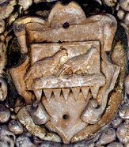
FIGURE XI
(la pierre de touche)Ce féroce dragon désigne le Mercure commun qui apparaît sous les dehors d'un animal sauvage qu'il faut apprendre à domestiquer. C'est l'infusion des natures métalliques qui va y pourvoir et cette opération est masquée au vulgaire sous l'allégorie des colombes de Diane. Nous ajouterons que ces colombes ne peuvent rien faire sans un certain artifice que les Adeptes ont caché sous la figure du chien, le plus fidèle ami de l'homme. C'est ce qu'a voulu dire Fulcanelli, dans les Myst., en donnant l'image du Chien et des deux Colombes, au portail de la Vierge. Qu'exprime au juste ce blason ? Continuant dans notre lancée des concrétions, il ne peut s'agir que de la pierre de touche, c'est-à-dire, littéralement, de la matière par laquelle les métaux touchés, abîmés, tombent en leur humide radical et se subliment dans le Mercure, le rendant alors philosophique. C'est expressément ce qu'indiquent les festons du blason, au-dessus desquels reposent les colombes. Car le mot feston, en grec stejanwV, signifie couronne et exprime une idée de diriger en cercle, vers un point fixe. Ce qui est le but de notre Mercure : après la dissolution initiale, par laquelle les métaux sont ramenés à leur état de quintessence [c'est-à-dire de chaux métalliques à l'état liquide], les métaux et les minéraux qui entrent dans la confection de la pierre, seront réincrudés et, comme nous l'avons vu plus haut, vont gagner une, deux puis trois couronnes, but suprême de l'Oeuvre. D'ailleurs, vous remarquerez qu'aux sept métaux connus dans l'Antiquité, sont rapportés sept festons à la figure XI. Il n'y a pas matière à s'étendre davantage sur ce point.
Sur la pierre de touche, nous dirons quelques mots qui pourront aider l'étudiant quand sera venu pour lui le moment d'élire les matières par lesquelles il aura enfin accès au dissolvant des Sages. La pierre de touche utilisée dans l'Art sacré est une pierre plus dure, si l'on nous entend bien, que l'or, l'argent ou le cuivre et dont la superficie, comprise comme sa surface mais aussi comme sa profondeur, quoique filante au premier abord, est néanmoins de nature pontique, assez hérissée et assez rude pour entamer ces métaux et en retenir leur substance, raison pour laquelle les alchimistes l'ont nommé leur aimant. Le quartz semblerait une matière suffisamment dure pour opérer cet effet, mais hélas, ce verre primitif est trop lisse. C'est, au vrai, d'une pierre de Lydie que nous avons besoin, du pays proche de la Phrygie, où trône Cybèle et sa pierre noire. Il paraît que les Égyptiens et les autres peuples du Levant connaissaient assez la matière de cette pierre pour en faire de singuliers usages. Cette pierre de touche se rattache à une légende qui parle à mots couverts de la sublimation du Mercure, de sa volatilisation et de sa disparition. Voici ce qu'en dit Pernety :"Battus fut changé en pierre de touche par Mercure, pour avoir eu l'indiscrétion de dire où Mercure avait mis les bœufs d'Admete, qu'il avait volés pendant qu'Apollon les gardait. [...) Admete. Roi de Thessalie, dont Apollon, après avoir été chassé du Ciel, garda les troupeaux. Apollon en ayant été bien traité, obtint des Parques qu’il ne mourut pas, s’il trouvait quelqu’un qui voulût bien s’offrir à la mort pour lui. Alceste son épouse et son amante se présenta, et fut sacrifiée. Hercule descendit dans le ténébreux séjour de Pluton, et en ayant délivré Alceste, il la rendit à Admete son ami." [Dictionnaire]
C'est à peine en termes voilés que cette allégorie peut ainsi se comprendre : Admète prit part à la chasse du sanglier de Calydon, à l'expédition des Argonautes. Il accorda à Apollon l'honneur de garder ses troupeaux [référence probable à la Toyson d'or, c'est-à-dire à Ariès qu'il faut se garder de confondre avec Arès]. Amoureux d'Alceste, Admète devait, pour l'épouser, atteler à son char un lion et un sanglier [par cabale, Arès]. Hélas, le jour de son mariage, Admète négligea de sacrifier à Artémis et la déesse, courroucée, transforma son épouse en un amas de vipères sifflantes. Dans une autre version, Alceste offrit sa vie en échange de celle de son époux, pour la même offense, en prenant du poison : son âme descendit au Tartare et selon une légende, Perséphone la rendit à la lumière. On croit rêver tant cette série de fables et d'allégories rend compte, à ce point, du pivot des trois Oeuvres : la dissolution, la sublimation et la réincrudation, où si l'on préfère, le noir, le blanc et le rouge. Cette dissolution est exprimée par la transformation d'Alceste en nuée de serpents ; la sublimation est la descente au Tartare, au royaume de l'Ombre où descend son âme [par cabale le Soufre rouge]. La réincrudation exprime le retour à la lumière et explique cette remarque de Fulcanelli :
"Captez un rayon de soleil, condensez-le sous une forme substantielle, nourrissez de feu élémentaire ce feu spirituel corporifié, et vous posséderez le plus grand trésor de ce monde."
L'allusion à Perséphone, inséparable de la grenade [roia], fruit emblématique du soufre réincrudé et en même temps fille de la Terre-mère, Déméter, achève de nous édifier. D'après une autre tradition, c'est Hercule [notre Artiste] qui ramena Alceste du royaume des Ombres. Mais pour en revenir à notre pierre de touche, qui est la pierre des philosophes [à ne pas confondre avec la pierre philosophale], d'aucuns s'accordent à lui trouver une texture feuilletée, une couleur brune ou noire, qui s'approche selon M. Pott, du marbre noir. On en trouve une variété, en Suède, qui est cendrée, nommée saxum trapezum, parce que dans sa fracture, elle représente les marches d'un escalier où quelques esprits faibles voient les paliers de l'échelle de Jacob ou ceux de l'échelle qui sert de frontispice au Mutus Liber. On a cru voir dans cette pierre un schiste d'un noir luisant, composé à l'instar de l'ardoise, entrant parfaitement en fusion par l'action d'un feu du 3ème degré et produisant un verre en manière de scories, d'un brun-foncé et quelquefois verdâtre, d'autres fois noirâtre. Il est vrai qu'il y a très peu d'Artistes qui ont pu s'élever à ces sommets et qu'à cette altitude où l'Air est rare, le silence est de mise.
Un autre arcane se présente encore dans cette caverne fabuleuse de la fontaine. A vrai dire, il pourrait passer inaperçu si nous ne savions qu'on le retrouve, identique, sur la cheminée alchimique du château de Terre-Neuve.
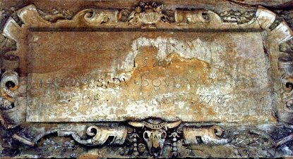
FIGURE XII
(fontaine des quatre Tias, bucrane)Ce bucrane n'apparaît pas moins dégoûtant que les Sujets de l'oeuvre et exprime :
"[...] ce caput mortuum immonde, grossier, terre damnée du corps, impure, inerte et stérile, que l'action du dissolvant sépare, rejette, précipite comme un résidu inutile et sans valeur." [Fulcanelli, DM, I, Louis d'Estissac, p. 391]
Voire ! Le caisson central de la cheminée du grand salon du château de Terre-Neuve exprime, à n'en point douter, que le bucrane est congénère au dissolvant, puisque le caisson n'est autre que l'emblème du Mercure, comme porté en gloire. Ici, le bucrane n'exprime que la mort et la pourriture, littéralement la liquéfaction de la tête de boeuf [boukranon]. De là à en voir un sel d'Aphrodite, il y a un pas que l'on peut franchir sans grand risque de se tromper. En somme, le bucrane nous offre le prototype du dissolvant si l'on tient compte de cet avis :
"Déjà, le mot grec qui sert à désigner la tête, Kranion, nous apporte une indication utile, car il marque également le lieu du Calvaire, le Golgotha [...]" [DM, I, p. 373]
En résumé, ce bucrane, par sa forme et sa substance, nous apprend quelle est la matière du dissolvant, la façon de le préparer et, par conséquent, celle de le capter. Voyez pour en savoir plus les sections :compendium - Mercure - tartre vitriolé - saturnie végétale - carbonates - salpêtre - Matière.
Il nous reste à parler d'un agent de liaison par lequel on peut arriver à conjoindre les deux extrémités du vaisseau de nature formant le vase du composé tout autant que le composant du vase. Cet agent, sur lequel les alchimistes sont restés muets, ne peut être trouvé selon eux, que si l'on a reçu le Don de Dieu. Cela a été l'objet d'importantes recherches tant de la part des historiens de l'Art que de celle des Artistes, sans que la question puisse être tranchée de savoir si la prière pouvait être un facteur opérant dans l'oeuvre. A cet égard, Pierre Dujols, dans son Hypotypose [cf. Mutus Liber] a tranché ainsi :"La figure inférieure [à propos de la planche 2] de cette seconde planche représente un athanor entre un homme et une femme à genoux, comme s’ils étaient en oraison, ce qui a porté certains esprits faibles à croire que la prière intervient dans le travail comme un élément pondérable. C’est ici un facteur inopérant. Le principal, c’est d’employer les matériaux expédients ; mais l’élan de la créature vers le créateur peut influer favorablement sur les directives, puisque la lumière vient de Dieu." [Hypotypose]
Cet agent, on peut néanmoins en trouver les hiéroglyphes dans deux autres blasons de la fontaine des Quatre Tias. Leur disposition laisse à entendre que leur usage est dévolu à la manière de conjoindre les deux Soufres, représentés sur la figure VIII. Ils sont représentés entre les deux goules de la manière suivante.
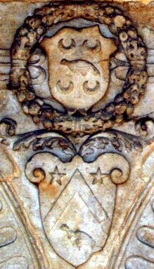
FIGURE XIII
(le dissolvant : mode d'emploi)Le blason du haut montre une colombe entourée de 4 symboles lunaires ; le blason du bas montre un chevron, avec en chef deux étoiles et une colombe ; il présente en outre deux éminences en forme de cornes d'Ammon. Ces blasons sont situés dans l'échancrure supérieure des panneaux séparant les natures minérale et métallique. Voyons d'abord le blason supérieur : ce qui frappe l'attention, c'est la présence de quatre symbole lunaires, ce qui est tout à fait inhabituel, pour ne pas dire unique, dans l'iconographie spécialisée. Que peuvent signifier ces 4 répétitions ? Elles peuvent être liées au temps et désigner aussi bien les 4 phases d'un cycle lunaire [lune nouvelle - 1er quartier - pleine lune - dernier quartier] que 4 mois lunaires [soit 112 jours terrestres]. Elles peuvent être liées à la symbolique propre au chiffre 4 [signe de la Terre] et témoigner alors d'une liaison entre le principe Sel et la Terre...Mais ce sont là de pures conjectures. On pourrait, enfin, ne voir dans ces 4 lunes que les quatre Éléments : la colombe exprimerait alors l'idée d'une sublimation, c'est-à-dire de l'âme du monde [cf. Timée, in Chevreul, Atlas des Connaissances humaines, Idée alchimique, V].
Aussi ferons-nous mieux d'évoquer à nouveau la mythologie pour comprendre ce mystère des quatre lunes. D'abord, la cabale hermétique permet d'emblée de poser que l'on peut distinguer :
- la divinité féminine, qui est la marque distinctive du Mercure commun, sans liaison avec le principe Soufre - en cela, la Lune se rapproche du principe Sel ;
- la Lune des philosophes, comme emblème du Mercure philosophique ;
- l'épouse du Soleil : le résultat du coït étant la Pierre. C'est dans cette acception que l'on retrouve Séléné dans la plupart des textes alchimiques ;
- la soeur du Soleil et son épouse incestueuse : c'est aussi dans cette acception que l'entendent un certain nombre de textes. Cette interprétation a permis à C.G. Jung d'analyser un certain nombre de rêves ayant, selon lui, des rapports avec l'alchimie, dans son Psychologie et alchimie [Buchet-Chastel, 1970].La mythologie grecque et romaine permet aussi de trouver au moins quatre versions différentes de la Lune :
- Séléné figure l'opposition pôlaire jour-nuit ;
- Héra est le symbole de la pleine Lune, par cabale le 4ème degré de feu, et correspond au signe de l'Écrevisse ;
- Diane-Artémis, le symbole du Mercure commun auquel manque la pulsion imprimée par l'Âme [Soufre rouge] qui permet d'animer le Mercure et de le rendre en un état qualifié de philosophique ;
- on peut rapprocher de Diane, Isis [Déméter], coiffée du disque lunaire et de cornes de vaches, symboles de la puissance et de la fertilité.Si l'on envisage les qualités du Mercure, rapportées à la Lune, on trouvera d'abord qu'elle possède des vertus nutritives, mises à profit au cours de la Grande Coction ; ainsi que la qualité remarquable de se comporter comme un feu aqueux ou comme une eau ignée, chacun de ces deux états masquant l'autre, à l'instar du dualisme onde-particule, pivot de la mécanique quantique. Enfin, on trouvera à la Lune des qualités de mère au sens propre du terme, ce qui a fait dire à Fulcanelli de la Pierre, qu'Hypérion l'avait porté dans son ventre.
On pourrait encore invoquer la Genèse (38, 28-30) : Tamar enceinte est sur le point d’accoucher, elle a deux jumeaux dans son sein. A l’instant de l’accouchement, un enfant sort sa main, la sage-femme y attache un fil écarlate en disant : il sera le premier. Mais l’enfant rentre sa main et son frère sort le premier ; il fut nommé Pharès, le second prit le nom de Zara. Or le nom du palmier est Tamar, dans lequel se trouvent à la fois le masculin et le féminin. C’est pourquoi, selon le Bahir, les enfants de Tamar sont comparés au soleil et à la lune qui sort et rentre pour laisser passer le soleil le premier. On comprend, dès lors, l'importance prise par le palmier dans l'interprétation ésotérique du Grand Oeuvre ; nous en avons parlé dans la section des blasons alchimiques. On pourrait aussi évoquer les Gaulois, si chers à Fulcanelli et à E. Canseliet, et dont le prototype semble être Savinien De Cyrano Bergerac. Le calendrier celtique était lunaire à l'origine et c'est par cet astre que les Gaulois réglaient leur mois et leurs années, de même que leurs siècles qui duraient trente ans.
En astrologie, chaque planète a reçu par tradition quatre lieux du zodiaque qui sont censés déterminer la force de sa propriété. Ainsi, le domicile de la Lune est le Cancer ; son lieu d'exil est le Capricorne et son exaltation est dans le Taureau. En reprenant le zodiaque alchimique que nous avons établi par rapport aux exaltations, nous avons été
conduits à définir sept lieux prédominants. Pour la Lune, nous avons ainsi 4 lieux : le premier, son domicile, est un signe d'Air. Le second, son exil, est un signe de Terre. Son exaltation correspond aussi à un signe de Terre. Par contre, son lieu de chute, le Scorpion, est hors d'oeuvre. Notez que les correspondances classiques auraient montré deux signes de Terre et deux signes d'Eau. Nous n'aurions aucun élément nous permettant de supputer une sublimation. Au lieu de quoi, la « triplicité cabalistique » de la Lune nous permet de conjoindre deux Terres et un Air. C'est exactement l'opération du 3ème oeuvre : les deux Terres correspondent aux Soufres blanc et rouge, qu'il faut unir par un tiers-agent qui est l'Air des Sages.
En résumé, les phases de la lune évoquent la mort et la résurrection qui sont sous la dépendance, en alchimie, du degré de feu auquel le Mercure, ce fidèle quoique fugitif serviteur, est soumis. Les lieux du zodiaque donnent des indications sur les matières à traiter : le Taureau met l'accent sur Vénus-Aphrodite qui donne le nom vulgaire de l'une des matières principales du dissolvant. Le Capricorne, signe représenté par un animal fabuleux mi-bouc, mi-dauphin, ou par une chèvre, nous explique pourquoi les alchimistes disent que leurs opérations doivent se dérouler au sommet des montagnes, dans une couleur nuancée de bleu et de noir, sous la domination de Saturne. Enfin, le Cancer est représenté par une écrevisse ou un crabe dont l'ossature, extérieure, est composée de chitine incrustée de sels calcaires. Muni de ces informations, l'étudiant, ayant trouvé les matières de l'oeuvre, n'aura plus selon l'heureuse expression de Basile Valentin qu'à « trouver un pot pour les cuire ».Autant le blason du haut pose des problèmes d'attribution que nous n'avons pas épuisés, autant le blason du bas semble facile à décrypter, aidés que nous sommes en cela par les cornes d'Ammon qui ornent les coins supérieurs et donnent à ce blason l'allure d'une tête de taureau. Les deux étoiles, en tout cas, expriment la vertu saline qui se dégage de son chef. Ce blason se rapproche singulièrement de celui que nous avons étudié dans la section des blasons alchimiques, figure XX [Ex-libris de René Pallu Du Ruau et d'Elisabeth-Cécile de la Vieuville]. Il n'en diffère que par la partie basse, où la fleur de lys prend la place de la colombe. Mais si l'on y fait attention, les deux emblèmes sont équivalents car ils expriment tous deux la sublimation. Quant aux deux étoiles, on verra dans la même section, chapitre 12, à quoi elles se rapportent. Elles complètent les matières voilées dans le blason du haut, dont nous avons donné les noms vulgaires.
Il reste encore un blason dont nous n'avons pas encore parlé et dont le symbolisme se rattache à l'image du Sagittaire.
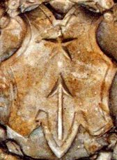
FIGURE XIV
(le Sagittaire idéalisé)Ce blason, le dernier de la série, est tout à fait singulier. Il nous présente trois symboles dont deux, entrelacés, n'en forment qu'un seul. On observe une étoile et une flèche. Mais , un rehaussement de la partie la plus basse du blason, celle qui encadre la flèche, prête du coup à celle-ci, les attributs d'une ancre marine et permet d'amplifier la signifiance hermétique de l'arcane. Cette flèche, combinée à l'étoile, évoque là encore une idée de sublimation. Pour autant, ce symbole est le signe de la pénétration et de l'ouverture : et c'est bien de l'ouverture des métaux qu'il est question ici, c'est-à-dire de leur résolution en leur humide radical métallique. C'est une figuration de l'infusion de l'Âme dans l'Esprit, dans le Mercure. C'est donc un rayon de soleil, élément fécondant s'il en ait, qui manifeste l'échange entre le ciel et la terre, dont en alchimie les équivalents sont l'Air des Sages et le Corps de la Pierre. Cette flèche ressemble à un kaléidoscope d'images eidétique à cause des interactions que recèle la valeur dynamique de son idéogramme. Revêtant le plumage de l'aigle et, par sa pointe acérée, pontique comme peut l'être le Lion vert, c'est aussi une transformation de la matière qu'elle révèle : c'est l'instrument d'Artémis dont les rapports avec le dissolvant sont bien connus et c'est aussi le principe masculin [Soufre rouge] en accrétion au principe féminin [Soufre blanc]. Dans le même temps, on l'a dit, l'image de l'ancre marine, que l'on devine, semble s'opposer au dynamisme de la flèche et agit comme un frein, ou mieux comme un mors. C'est l'expression de la coagulation qui est préfigurée et cette double fonction que nous renvoie la flèche, à l'ancre, fait grand honneur au maître qui l'a conçue. Elle met bien en évidence que la coagulation progressive de l'eau mercurielle est le résultat d'une action pontique mesurée, la mesure s'établissant au poids du calorique qui en assure l'activation. C'est là où il faut se souvenir de ce qu'enseignent les alchimistes quand ils recommandent d'éviter « de brûler les fleurs ». Quant à l'étoile, qui est la marque de l'action saline du Mercure, elle a valeur de pôle vers lequel tend la flèche et manifeste le centre absolu autour duquel pivote le ciel firmamental du petit monde de l'alchimiste. C'est l'incarnation du Soufre dans la Nuit de l'oeuvre au zénith de la dissolution radicale, lorsque survient la grande éclipse de soleil et de lune, dont le spécialiste reconnu est Raymond Lulle. Fulcanelli et E. Canseliet se sont étendus sur l'étoile et nous recommandons au lecteur, pour en savoir plus, de consulter nos Principes.
A peu de distance des blasons que nous avons parcouru, se signale un oeuf ceinturé d'un motif cruciforme où l'on devine aisément un X. C'est bien sûr l'oeuf des philosophes, leur petit monde, leur coquetier, où mijotent les deux natures à l'époque de la Grande Coction. Cet oeuf a fait le bonheur des graveurs d'allégories et il n'est pratiquement pas un traité qui n'en parle ou qui n'en présente une image. Pernety en parle dans des termes qui lèvent l'équivoque sur ce symbole :
"Œuf des Philosophes. (Sc. Herm.)
Un grand nombre de Chymistes s'est imaginé que les Sages appelaient œuf des Philosophes, le vase dans lequel ils renferment leur matière pour la cuire; et ils lui ont donné en conséquence la figure d'un œuf. Quoique cette forme soit à la vérité la plus propre pour la circulation, ce n'est point-là l'idée ni le sens des Sages ; ils ont entendu par les termes d'œuf des Philosophes, non le contenant, mais le contenu, qui est proprement le vase de la Nature, et cela même pendant la putréfaction; parce que le
poulet philosophique y est renfermé, et que le feu interne de la matière excité par le feu extérieur, comme le feu interne As l'œuf excité par la chaleur de la poule, se ranime peu à peu, et donne la vie à la matière dont il est l'âme, d'où naît enfin l'enfant philosophique, qui doit enrichir et perfectionner ses frères.
Œuf signifie plus communément la matière même du magistère qui contient le mercure, le soufre et le sel, comme l'œuf est composé du blanc, du jaune et de la pellicule ou la coque qui renferme le tout. Cette matière est appelée œuf, parce que rien ne ressemble mieux à la conception et à l'enfantement de l'enfant dans le ventre de sa mère, et à la génération des poulets, que les opérations du magistère, et de la pierre philosophale; ce qui devrait servir de guide aux Artistes, et non les règles inventées de la
Chymie vulgaire, qui détruit tout, au lieu d'édifier.
Raymond Lulle dit que la matière de l'œuvre s'accumule en forme d'œuf, lorsqu'elle se fixe : c'est pourquoi on lui a donné le nom œuf, lorsqu'elle est parvenue à la blancheur; quelques-uns pendant qu'elle est en putréfaction." [Dictionnaire]
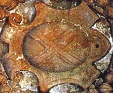
FIGURE XV
(l'oeuf scellé)On aurait donc tort de mettre cet oeuf, ou le matras qui en tiendrait lieu, dans l'Athanor. Bernard de Trévise écrit :
" [...] quelques-uns ont appelé ce Compôt Présure coagulante ou épaississante, d'autres l'ont nommé Soufre, Arsenic, Azote, Alun, Teinture illuminant tout Corps, et L'Oeuf des Philosophes" [Verbum dimissum]
Comme on le devine, les pistes ont été bien brouillées et l'entre-croisement visible de l'oeuf manifeste qu'il a été scellé. C'est ainsi d'ailleurs que s'exprime Fulcanelli quand il compare la galette des Rois au « scel » des philosophes. C'est un moment important des Myst. où la surface du dissolvant apparaît comme un maillage, une sorte de filet immatériel, où se devine avec un peu d'esprit la surface striée d'une galette des Rois à la frangipane, à distinguer de la galette des Rois provençale, qui a la forme d'un anneau, garni de fruits confis. Nous avons suffisamment évoqué ailleurs cet arcane [1,2,3,4,5,6,7,8,] pour qu'on nous permette de passer outre.
Nous mettrons cependant en garde l'étudiant qu'il risquerait de se casser les dents sur ce gâteau. Oh ! Ce n'est certes pas la fève qui lui posera problème, mais plutôt la texture de la pâtisserie [plakouV], rugueuse, croûteuse, qui tient à la fois de la graine de mauve [plakoeiV] et des veines du marbre [plakinoV]. Et ce gâteau plat [plax] est aussi bien la surface de notre mer hermétique que la plaine où, par une nuit calme et sereine s'instille la rosée, notre manne, et enfin notre pierre tumulaire [plax] où les époux royaux doivent séjourner, le temps de l'éclipse, en cet endroit où les métaux subissent la passion. La couleur de l'oeuf atteste, comme d'ailleurs l'ensemble des parois de la caverne, de cette crucifixion ou de cette corrosion, si l'on préfère. Ce « scel » est clairement dessiné comme un X, lettre qui exprime la grande inconnue du problème selon Fulcanelli. N'a-t-il pas écrit, dans les DM, I qu'il fallait que l'apprenti passe lui-même au creuset, qu'il soufre et potasse pour l'X, jusqu'à résoudre l'équation hermétique SXKOH ? A ces questions, nous avons répondu dans le commentaire de l'Introïtus, en affirmant que X était l'Al-K lié, ou grand Alkali. Voici encore les sections où le lecteur pourra en apprendre davantage sur l'oeuf et le secret du Klié [qu'il faut lire, par cabale, kali : voie humide - ]. On pourra s'aider aussi des recommandations de Jean de Meung :"Vecy le Four secret des Philosophes, avec un oeuf, dens lequel i'ay fait boire au soulphre rouge, apres la calcination, le laict virginal petit à petit iusques tout fut fixé, en forme de poudre fort menue. De laquelle poudre i'ay ietté une partie sus mille, et une partie de ces mille fus autre mille. Et ay fait ce iusqu'à trois fois, et tout ce ha esté conuerty en Medecine, pour multiplier et faire proiection d'une partie sus mille de Mercure crud." [La Fontaine des Amoureux de Science]
Faut-il suivre Meung dans ses supputations de laboratoire ? Ce four secret est l'athanor qui est lui-même formé du vase de nature. Il constitue le véhicule de sa propre chaleur et il contient le Soufre sublimé. C'est ce soufre qu'il faut abreuver du lait de la Vierge que nous avons évoqué plus haut et dans maintes sections. Les Artistes recommandent de renouveler l'opération à trois reprises. C'est là que Fulcanelli nous dit que, tantôt la fleur, tantôt l'étoile se masquent l'une l'autre dans ce processus d'accrétion où la Terre l'emporte peu à peu sur l'Eau mercurielle. Délos apparaît, signe que la délivrance de Latone approche. Notre oeuf semblerait avoir des similitudes avec celui qu'a découvert Réaumur, sur les côtes du Poitou, en 1710, en considérant au bord de la côte les coques appelés buccinum , que la mer laisse à découvert, pendant son reflux :
"Il trouva une nouvelle teinture de pourpre qu'il ne cherchoit point, et qui, selon toutes les
apparences, a été inconnue aux Anciens, quoique de même espéce que la leur. Il remarqua que les buccinum s' assemblaient ordinairement autour de certaines pierres, ou sous certaines arcades de sable en si grande quantité, qu'on pouvoit les y ramasser à pleines mains, au lieu qu'ils étaient dispersés çà et là par tout ailleurs. Il remarqua en même temps que ces pierres, ou ces arcades de sable, étaient couvertes de certains grains, dont la figure avait quelque air d'une petite boule allongée. La longueur de ces grains étoit d'un peu plus de trois lignes, et leur grosseur d'un peu plus d'une ligne. Ils lui parurent contenir une liqueur d'un blanc tirant sur le jaune. Il fut frappé d'une agréable surprise, et vit une fort belle couleur pourpre sur les endroits où les grains avaient été écrasés. M. De Reaumur remarque qu'on tirerait la liqueur de ces grains, qu'il appelle des oeufs de pourpre, d'une manière infiniment plus commode que celle dont les Anciens se servaient pour ôter la liqueur des buccinum . Car il n' y aurait d'autre façon à faire, après avoir ramassé de ces oeufs, et les avoir lavés dans l'eau de la mer pour leur ôter, autant qu' il serait possible, les ordures qui pourraient altérer par leur mélange la couleur pourpre." [Histoire ancienne des Egyptiens, des Carthaginois, des Assyriens, des Babyloniens, des Mèdes et des Perses, des Macédoniens, des Grecs, par M. Rolin]Ce n'est pas autrement que l'on doit considérer l'Oeuf philosophal. La manière de le traiter est tout à fait superposable. Il faut le laver dans notre mer afin de la blanchir, le bâtir à coup de pierre, ou mieux, à coup de Terre dont nous examinerons bientôt la nature. Il faut enfin exprimer la liqueur des coques pour obtenir, progressivement, la couleur pourpre. C'est là qu'est requise, de façon constante, la patience de l'Artiste. Inutile de dire que les traités, même les plus charitables, sont restés muets sur cette question.
Ces terres qui fertilisent l'oeuf sont au nombre de trois. C'est sur elles que repose la croissance du Rebis jusqu'au début de la coagulation de l'eau mercurielle. Ces trois terres sont visibles dans la caverne de la fontaine : regardez la figure VII, obtenez un agrandissement suffisant et vous verrez trois magnifiques Cariatides qui désignent ces éléments. Au-dessus, dans l'arcade qui encadre leurs formes, on peut voir une mérelle. Ces déesses sont Isis, Déméter et Cybèle dont Fulcanelli dit qu'elles forment comme « trois têtes sous le même voile ». On pourrait croire, en toute hypothèse, que l'une symbolise la terre adamique, l'autre la terre vitrifiable et la troisième, la terre vitriolique. Cette trinité étant indispensable à la préparation de la Pierre, elle fut masquée par quantités d'allégories gravitant autour du nombre 3, visant à faire perdre le sens aux apprentis imprudents et aux mercantis malhonnêtes. Il serait, en effet, trop simple, de s'imaginer que chacune des Déesses désigne une terre particulière, que l'on pourrait nommer par son nom vulgaire. Chaque déesse apparaît comme un objet flou, comme une sorte de nuée où s'entrelacent la forme et la fonction. On peut, néanmoins, se risquer à exposer ces conjectures :
- Isis part chercher son époux, c'est-à-dire le principe sulfureux, dans le royaume de la Mort et des Ombres. C'est la terre d'Ombre qu'elle symbolise. Mais Isis, c'est aussi le vautour royal : se nourrissant de charognes et d'immondices, il peut également être considéré comme un agent régénérateur des forces vitales, donc du Soufre. C'est ce qui explique que cet oiseau soit associé aux signes d'eau et par delà, au feu céleste, à la fois purificateur et fécondant. Isis possède donc des caractères essentiellement sublimés, comme ses cousines, où l'aspect dynamique l'emporte sur le sens statique ou commun. On pourrait presque résumer la figure d'Isis par ce fragment poétique : « né d'un désastre obscur... » et l'appliquer au Soufre. Et c'est vrai que c'est dans la nuit, les ténèbres, la mort, que la déesse vautour revivifie l'Âme. Isis, désignant la terre d'Ombre, on l'aura compris, n'est pas l'hiéroglyphe d'un minéral ou d'un métal, mais d'une pure image eidétique, l'une de celles que l'apprenti alchimiste, en passe d'acquérir sa maîtrise, doit se forger à force de blanchir le laiton et de rompre ses livres...Un mot encore, le vautour était, dans les traditions gréco-romaines, un oiseau divinatoire, consacré à Apollon, comme le cygne ou le corbeau. Est-ce hasard ? En tout cas, Apollon s'avère être un personnage peu recommandable, roublard et vengeur, se révélant souvent sous le signe de la violence et de l'orgueil : peut-on lui pardonner, par exemple, d'avoir sacrifié Laocoon ?
- Déméter [ou Cérès : 1, 2, 3, 4, 5,], c'est l'art d'ensemencer les champs, d'amender les terres cultivables. Déesse maternelle de notre Terre, la Terre-Mère où si l'on préfère la Vierge de l'Oeuvre, elle se pare des plus grands mystères. Son action procède d'une concentration du spirituel issu de la matière. Elle eut une fille, Perséphone dont nous avons déjà bien des fois parlé et qui donne le nom commun du soufre corporifié [cf. Mercure de nature - St Grégoire-sur-Vièvre - humide radical]. Par ses relations avec sa fille, déesse des Enfers et avec Triptolème, le propagateur de la culture du blé, Déméter se révèle la déesse des alternances de la vie et de la mort, et comme telle, l'hiéroglyphe typique de la réitération des sublimations philosophiques. Mais, à la différence d'Isis qui est plus un moyen qu'un moteur, Déméter se rapproche de la terre cultivée, dans son sens le plus élevé : une terre couronnée, riche. En somme, Déméter et Ploutos sont des agents complémentaires, l'un comme expression de la nature chthonienne du Feu de l'Art, l'autre comme catalyseur de l'incarnation du Soufre.
- Cybèle est à l'égale d'un régulateur de tension dans ce dispositif luciférien. Déesse de la terre, fille du ciel, épouse de Saturne, mère de Jupiter, de Junon, de Neptune, Cybèle est à la croisée des chemins et pourrait presque être résumée d'un caractère : X ou †. Par l'X, la grande inconnue réapparaît et exprime les avatars de la Providence qui se glissent dans l'oeuf philosophal selon que l'Artiste monnaye plus ou moins bien le Feu secret. Ce dernier est bien sûr symbolisé par le signe du creuset ( † ) et met à nouveau en lumière le parallèle Lapis - Christus. La déesse exprime toute l'énergie potentielle de l'oeuf, met en relation les deux autres Terres avec les Quatre Éléments, dirige d'abord le Lion vert ou Mercure commun, puis le Lion rouge ou second Mercure. Quand elle attelle le Lion vert à son char, celui décrit un mouvement circulaire qui exprime la convection qui s'effectue dans le vase de nature et cette convection est synonyme du Mercure ; le moment venu, elle attelle le Lion rouge. De circulaire qu'il était, le mouvement va alors devenir rectiligne. Cette droite que parcourt le char de Cybèle est celle de la règle des Maçons et synonyme du Soufre ; elle exprime la même idée que la flèche du Sagittaire ou que celle qui est suggérée à la figure XIV. Dès lors, on la voit couronnée tantôt d'une étoile à sept branches qui constitue l'emblème du Soufre des métaux transformés en Corps glorieux, tantôt d'un croissant de Lune, qui symbolise le Sel des philosophes [que l'on obtient lors de la calcination parfaite du Mercure commun]. C'est sous la forme d'une pierre noire aimantée que les alchimistes ont reconnu la vertu occulte de Cybèle. Elle contient les germes qui lui permettent de faire croître les moissons blondes et les arbres chargés de fruits, et de fournir également aux espèces sauvages errant sur les montagnes des cours d'eau, des frondaisons et de gras pâturages. Aussi lui a-t-on donné à la fois les noms de grande Mère des Dieux. Les alchimistes l'ont aussi reconnu comme leur Mer et ont fait savoir dans leurs traités que les moissons étaient placées sous la maîtrise d'Ariès, que les espèces sauvages étaient des parties d'Arès et que la graisse de rosée tenait lieu d'aliments spirituels aux arbres et frondaisons. Ils ont fait plus : leurs relevés minutieux et perspicaces ont montré que Cybèle existait sous trois états différents, selon les époques de l'Oeuvre, et qu'on pouvait l'observer tantôt assise sous l'arbre de vie, tantôt entourée de lions, tantôt ornée de fleurs. Les lions et les fleurs, nous savons en principe à quoi ils correspondent. L'arbre de vie est un arcane original et complexe. Tous les étudiants savent ce que recouvre le chêne, sous toutes ses variétés, la plupart doivent connaître les arbres solaire et lunaire. La véritable nature de l'arbre de vie, qui est l'arbre philosophique est moins connue. E. Canseliet y a consacré un chapitre dans ses Etudes de symbolisme alchimique : l'Arbre philosophique. Le décors est planté rapidement puisqu'il évoque l'arbre adamique qui est justement celui dont nous souhaitons parler. E. Canseliet écrit :"Faut-il rappeler, à ce sujet, cette fameuse terre adamique - terra adamica - cette vase salée et gluante, savoir l'humus limoneux et rouge que laisse la mer [la mère] lors de son reflux..." [Alchimie, p. 106]
Parle-t-il des varechs, des Salicornia d'où Glauber prépara son sel admirable ? A ces questions, nous tenterons d'apporter une réponse en examinant l'Église Notre-Dame, en VIe partie. En attendant, après avoir examiné les trois terres qui encadrent les conditions de naissance et de croissance de la Pierre, nous pouvons examiner le dernier blason de la caverne.
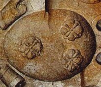
FIGURE XVI
(l'oeuf de Pâques)Il s'agit du même oeuf que celui qui est représenté à la figure XV. Mais au lieu d'apparaître scellé par la bande en X, le voilà au contraire ouvert et efflorescent. Il exprime la venue du dauphin hermétique, du BasileuV de l'oeuvre, c'est-à-dire le début de la coagulation de l'Eau mercurielle. Ces trois fleurs, largement développées, polylobées, sont l'expression, la marque exotérique de l'impression des trois Terres dont nous venons de parler. On peut estimer, parmi les régimes de Philalèthe, que l'on se situe au régime de Mars. Ces fleurs, au vrai, forment les vrais matières de l'oeuvre, indiquées ici presque par leurs noms vulgaires que la couleur d'ocre aide à mieux percevoir à la fois par la vue et par la raison. Nous ne les examinerons que brièvement, en ayant déjà largement parlé ailleurs. Mais les figures XV et XVI forment une seule figure couplée, dont on trouve peu d'équivalent ailleurs.
On a vu que les trois Terres, en fait, ne dissimulaient pas des terres « vulgaires » telles que la terre arable, par exemple, mais constituaient comme des médiateurs entre le fixe [la Terre par excellence] et le volatil [le Soufre sublimé]. Mais, à la fin, il nous faut tout de même oeuvrer avec des substances matérielles et, à force d'esprit, nous finirions par volatiliser l'enfant avec l'Eau du bain... Force est-il donc de passer de l'oratoire au laboratoire et de dire quelques mots de ce que les alchimistes se sont réservés pour eux-mêmes, laissant parfois de façon un peu outrancière, les impétrants bloqués à la porte du Palais du Roi.
- Nous avons besoin avant tout d'une terre métallique, qui est très répandue sur le globe et qu'il suffit, pourvu qu'on soit à la campagne, de ramasser avec le creux de la main : c'est la terre adamique dont la couleur est curieusement exprimée de manière insistante par les parois de la caverne de notre fontaine. Mais en somme, c'est déjà un corps décomposé que l'on peut pétrir. Il est néanmoins d'origine noble et forme alors un minéral, composé de lames brillantes, appliquées les unes sur les autres, affectant une figure rhomboïdale. Il fond en un verre blanchâtre quand on l'expose à la chaleur blanche. On en connaît une autre variété, composée de matériaux lamelleux et feuilletés, dont la composition atteste de la présence de Soufre blanc, de Soufre rouge et d'une assez grande quantité d'éléments mercuriels évolués. Il y en a qui portent des empreintes de fougère, de roseaux et d'autres plantes. On y relève même des dépouilles osseuses. Nous citerons encore la pierre de corne qui est noir ou d'un gris verdâtre. Cette pierre possède des qualités qui semblent en faire un candidat de choix...Elle répand une odeur forte et terreuse, surtout quand on l'arrose d'eau chaude. On a pu en retirer du soufre blanc, de la Magnésie, de la chaux et une quantité notable de Soufre rouge.
- Il nous faut aussi une terre qui croît dans les cavernes de la terre et qu'on a fait prendre aux souffleurs pour de la terre vitriolique. Elle se présente en stalactites formant des cônes et des pyramides. Le principal trait hermétique de cette Terre réside dans le fait que le temps ne compte pas pour elle. Absolument imperméable aux agents érosifs, du moins prise dans son milieu naturel, l'Eau et la Terre apportées en quantité suffisantes, constituent son terreau idéal. Partant du sommet ou de la base [stalagmites], ces concrétions poussent parfois leur côté mercuriel jusqu'à opérer des fusions millénaires entre le ciel et la terre. Leur aspect en chou-fleur pourrait, pour un esprit distrait, les faire confondre avec le Mercure commun dont elles ne possèdent absolument pas les caractéristiques chimiques. Une variété particulière de ces stalactites a reçu le nom de guhr [1, 2], là encore confondu avec un vitriol, parce que sa consistance est huileuse et grasse, signalant par là une présence indéniable de Soufre rouge, pour les variétés colorées. D'autres variétés témoignent cependant du caractère fragile de cette roche, sous la forme de végétaux ou de ruines, qui ont pu être comparées aux pierres de Florence.
- Une troisième terre se signale par son caractère gras et doux au toucher qui partage les faveurs du potier et du graveur car on peut l'entamer au ciseau [caelum]. Elle mérite qu'on s'y arrête à cause de cette particularité. Elle happe à la langue et reste ferme au contact de l'eau. Des nombreuses variétés qui la composent, on peut citer la pierre de lard, riche en terre vitrifiable, le liège de montagne et enfin, une roche assez comparable à la pierre spéculaire.Ces terres, il va falloir les assembler en sorte qu'elles nous donnent une matière semblable à du spath, pesant par sa nature et fluor par sa forme. En effet, selon le grand chimiste Margraff, celui à qui on doit des travaux sur le Mercure commun :
"Il y a des spaths fusibles composés de lames groupées ensemble d'une manière singulière ; ces lames n'ont aucune transparence, et leur couleur tire sur le blanc de lait ; d'autres affectent une figure cubique, ils sont plus ou moins transparents et diversement colorés : on les connaît sous les noms de fluors, de fausses améthystes, de fausses émeraudes, de fausses topazes, de fausses hyacinthes, etc. ils se trouvent ordinairement dans les filons des mines, et servent de matrice aux minéraux qu'ils renferment..." [Physique, tome I, 1772]
D'autres chimistes distingués, et notamment le Dr. Demeste ont montré que ces spaths vitreux ou fluors, loin d'être fusibles, étaient très réfractaires au feu. Mais qu'ils avaient la propriété d'être, comme l'attincar, des fondants très actifs. Les alchimistes ont toujours dit qu'il fallait imiter la nature et on ne peut pas trouver de meilleure analogie pour la préparation et l'usage que l'on fait de notre Mercure, tout cela n'étant valable, bien sûr, que pour la voie sèche. Certes, ces spaths peuvent n'apparaître que comme de pâles imitations de notre Eau benoîte, à tel enseigne que ces minéraux sont désignés ordinairement par le nom de la pierre précieuse colorée dont ils imitent la nuance. On voit beaucoup de ces spaths près des alunières, entre Civita-Vecchia et la Tolfa, dont nous avons parlé ailleurs. De toute évidence, ces spaths portent la marque du Mercure commun mais la nature les a travaillés en manière d'une côte mal taillée, alors qu'il aurait fallu les séparer selon l'Art, à partir d'une terre adamique d'où l'élément féminin aurait pu être préparé canoniquement.
L'origine de la Pierre philosophale se trouve, en effet, dans une terre limoneuse mais la distance qu'il y a entre ces deux matières qui ne se distinguent que par des réarrangements moléculaires, n'a d'égale que celle qui sépare les diamants des pyrites. Comme la pyrite, le diamant renferme une grande quantité de feu ; les Anciens chimistes en auraient pu dire qu'il n'était formé que de pur phlogistique pêtré. A telle enseigne que le diamant ne laisse aucun résidu sensible après sa combustion. On trouve aussi des éléments curieux, comme ces diamants noirs qu'on prendrait au premier coup d'oeil pour des pyrites martiales octaèdres ou cubiques. Mais peut-être que les Chymistes qui ont conclu à l'existence de ces diamants se sont abusés sur leur origine ? Si le lecteur reprend la section du Mercure de nature, il verra que la Nature a pourvu, dans des conditions très proches de celles réalisées par les alchimistes, à des synthèses cristallines qui indiquent la provenance exacte des matériaux d'origine, des matières premières. Sans vouloir trop entrer dans les détails techniques - ce qu'aucun Adepte n'a fait, hormis peut-être Fulcanelli, - il faut dire un mot, à titre d'exemple, des roches altérées par les dykes volcaniques [un dyke est un filon de roches éruptives résistantes, mis en relief par l'érosion]. On trouve de ces dykes qui altèrent le schistes et les calcaires argileux au point de les transformer en structures grenues et cristallines, et le phénomène le plus curieux est l'apparition de nombreux cristaux de spath étincelant et de grenat. ces grenats contiennent jusqu'à 20% de chaux, cette base provenant de la décomposition des coquilles fossiles. Nous n'en dirons pas plus ici tout en soulignant l'intérêt évident que prennent les mérelles au vu de ces observations.Monument insolite, cette tour fut érigée en 1880 par Gustave Rivalland. Cet architecte était né en 1824 et est décédé entre 1882 et 1891. Il était marié à Émilie Parenteau, née en 1834. Ils eurent une fille, Marie-Lucie Rivalland, née le 20 mars 1856, mariée à Emile Baron Latouche. Ils eurent deux fils, Jean, né en 1873 et Pierre, né en 1881, décédé en 1949 à Fontenay. Gustave Rivalland a donc été le maître d'ouvrage de sa Tour, construite dans sa propriété, 11, rue Barnabé Brisson. Nous avons dit plus haut que cette tour avait été construite en béton armé, premier ouvrage du genre. A ce titre, elle est inscrite à l'Inventaire des Monuments historiques. Cette propriété, y compris la Tour, et le parc dit de Jarnigande, furent donnés par le dernier descendant, Pierre, 15 jours avant son décès, à l'école Saint Joseph, qui occupait l'immeuble attenant au levant. La tour est située 40 rue Nicolas Rapin, en face de l'entrée du château de Terre-Neuve.
Octave de Rochebrune était maire de Fontenay-le-Comte en 1877 [et le fut aussi en 1868 et 1874]. Dès lors, il n'est guère douteux que les deux hommes aient été en contact. En l'absence de renseignements, il faut se borner à ces conjectures. Nous devons les renseignements sur la tour Rivalland, qui suivent, à une personne dont certaines circonstances nous interdisent de révéler l'identité :
Un événement d'importance signala le mois de juin 1949. A cette date Monsieur Pierre BARON LATOUCHE, sur l'inspiration de son ami Monsieur !'Abbé MURZEAU, « passait contrat avec le ciel », échangeant son domicile terrestre contra la demeure céleste par une générosité fastueuse, il assurait à l'Institution St JOSEPH, la propriété de ses immeubles fontenaisiens et de son parc JARNIGANDE. Donation princière qui doublait la superficie de l'établissement. Puis, comme si la Providence l'avait pris au mot, ou comme s'il estimait lui même avoir mis le point final à toutes ses bonnes oeuvres, et qu'il ne lui restait désormais rien à faire ici bas, quinze jours plus tard « Monsieur Pierre » s'en allait, soudainement quérir la récompense promise au « bon et fidèle serviteur ». Dés lors, la consigne était claire pour St JOSEPH : « Croissez et multipliez-vous ». Elle fut immédiatement comprise et l'on dressa des plans : dans le parc, un terrain de football; dans les dépendances, des ateliers de bois
et de fer; dans l'habitation, aménagement d'une « maison rurale ». Celle-ci s'ouvrit en 1950 sous la direction de Monsieur BRUNEAU. Elle se destinait à la « formation professionnelle, morale et religieuse » des jeunes agriculteurs de la région. En 1957, ainsi donc, St JOSEPH joignait des cours professionnels et des cours agricoles. C'était la polyvalence. Monseigneur CAZAUX, fasciné, parla d'une « véritable université ». Quant au Père GRASLEPOIX, à la veille de la fête des anciens, fit un rêve. II vit le soleil se jouer dans la lanterne de notre « Tour RIVALLAND » et elle lui apparut comme un phare, un phare qui dominait toute la plaine, un phare vers lequel convergeait une multitude de jeunes, pour y trouver la lumière et l'orientation de leur vie.La « Tour RIVALLAND » appartenait à l'héritage BARON. C'est un imposant belvédère de 25 mètres de hauteur. Reposant sur une large base carrée, à quatre niveaux, le quatrième prolongé en terrasse, elle dresse ses cinq étages de section octogonale jusqu'à la plate forme supérieure dentelée de feuilles d'acanthe gigantesques et surmontée d'une lanterne mirador (cette lanterne avait été installée par l'Entreprise BOURGOIN en 1943 à la demande des Allemands qui voulaient surveiller de loin « le mur de l'Atlantique »). De là-haut, on jouit d'une vue splendide sur les prairies de la VENDÉE. Curieuse histoire que celle de la « TOUR RIVA LLAND » ! Faut-il d'ailleurs parler d'histoire ou de légende ? A en croire la tradition orale, en ce temps-là, c'est-à-dire dans le dernier tiers du siècle dernier ( le dix neuvième , il y avait deux voisins qui ne sympathisaient guère: Monsieur VINET, qui était clérical, et Monsieur RIVALLAND qui ne l'était pas. Celui-ci décida d'élever ce monument pour avoir une vue plongeante sur la propriété limitrophe et ennuyer ainsi son « adversaire ». De plus il voulait rivaliser avec le clocher de Notre DAME et lui ravir le monopole de la suprématie sur la ville de FONTENAY le COMTE.
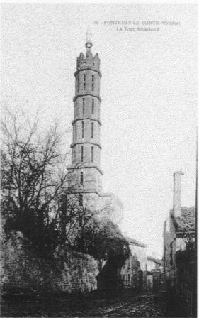
Afin que nul n'ignorât les intentions du constructeur, les insignes de la franc-maçonnerie furent gravées très ostensiblement sur la façade. Enfin, pour ajouter à la « provocation », les ouvriers bâtisseurs ne travaillaient que le dimanche, appâtés par le gain plantureux d'un napoléon. Au soir de la journée, Madame RIVALLAND, nouvelle fée MELUSINE, surgissait parmi les fleurs, apparaissait au sommet de l'escalier central. Elle tirait de son tablier des lueurs étincelantes et distribuait à chacun son salaire. C'est ainsi que la « TOUR RIVALLAND » fut
construite « avec une donnée de pièces d'or et plusieurs goulées de vin clairet » ...
Ironie providentielle : Mademoiselle RIVALLAND épousa un « clérical », Monsieur BARON LATOUCHE ! Leur fils Pierre, demeuré célibataire, légua ses biens à Saint JOSEPH, et les deux propriétés rivales se trouvèrent réunies entre les mains des « curés » (l'Hôtel VINET fut offert par Monsieur et Madame VINET à l'Évêque de LUCON pour établir une Institution d'instruction secondaire, dite Saint JOSEPH ).
Un plaisantin, ce Monsieur RIVALLAND. Un jour, il recevait les notables de la cité. Après déjeuner, les hôtes passèrent dans les jardins. Merveilleux jardins, avec leurs rampes de potiches, leurs serres, leurs plantes rares, leurs bassins superposés, leurs grandes eaux qui rebondissaient sur les feuilles des nénuphars ! Ah ! ces nénuphars, ils faisaient l'orgueil du maître de maison: « Voyez, dit-il ce jour là, ils sont extraordinaires, en passant de l'un à l'autre, on peut traverser à pied sec ». Et il traversa à pied sec. Ébloui, Monsieur le Sous-préfet voulut renouveler le miracle. Il s'abîma piteusement dans les flots, au grand dommage de sa tenue de soirée. Il n'avait pas su choisir, lui, les bons nénuphars, c'est-à-dire les faux, bien fermes et bien solides, avec leur socle de ciment et leur tige de fer forgé. Quelques spécimens, égarés, dans le bric à brac des sous-sols de la TOUR, rappellent encore le souvenir de Monsieur le Sous-préfet au bain. Nous laissons l'anecdote ou la légende pour retrouver l'histoire. Elle est très sobre. Selon Louis BROCHET, « La TOUR RIVALLAND fut élevée en 1880 par le propriétaire de l'enclos. Les constructeurs utilisèrent le béton armé. II semble, ajoute-t-il que ce soit un des premiers essais en ce genre de matériau sur une assez grande échelle ». Une telle particularité fera peut être un jour classer le monument parmi les témoins d'une époque (II a, depuis, fait l'objet d'une inscription à l'inventaire des monuments historiques). Et pourtant, la seule histoire qui importe vraiment, c'est bien celle que le Père GRASLEPOIX vit en rêve et qui se continue sans cesse sous nos yeux.
Ce qui, en revanche, est certain, est que cette tour présente des attributs qui la distinguent comme une demeure philosophale, à l'instar du cadran solaire du palais Holyrood. Nous donnons sur une page séparée les plans de la tour. Quant aux attributs dont nous voulons parler, ils sont principalement au nombre de quatre. Deux animaux en vis-à-vis, qui sont une licorne et une chèvre sur l'une des quatre faces du bâtiment inférieur. Et quatre rosaces qui vont par paires, sur une autre face.
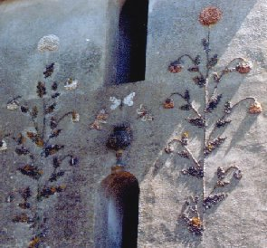
FIGURE XVII
( fleurs blanche et rouge, papillons, Rivalland, I)Mais nous allons entamer cette étude par deux motifs fleuraux qui se distinguent par leur couleur rouge et blanche.
1)- les fleurs minérales et le sphinx [façade d'entrée OUEST]
Juste au-dessus du porche, on remarque un vase, affectant une couleur pourpre d'où semblent sortir trois papillons. D'abord, voyons l'article Fleurs de Pernety, afin de poser le décors :
"Fleurs. Les Philosophes Hermétiques donnent ce nom aux esprits enclos dans la matière Ils recommandent très-expressément de donner toujours un feu doux, parce que ces esprits sont tellement vifs qu’ils casseraient le vase, quelque fort qu’il fût, ou se brûleraient. Ils expriment aussi par ce nom de Fleurs, les différentes couleurs qui surviennent à la matière pendant les opérations de l’œuvre. Ainsi la Fleur du Soleil, c’est la couleur citrine-rougeâtre, qui précède la rougeur de rubis. Le lis, c’est la couleur blanche, qui parait avant la citrine.
FLEUR DU SEL DES PHILOSOPHES. C’est la perfection de la pierre.
FLEUR DE L’OR. C’est tantôt le mercure des Philosophes, et tantôt la couleur citrine.
FLEUR DE LA SAGESSE. C’est leur élixir parfait au blanc, ou au rouge.
FLEUR DE PÉCHER. C’est le mercure philosophique.
FLEUR SATURNIENNE. Voyez FLEUR DE PÉCHER.
FLEUR DE L ’AIR. En termes de Chymie, c’est la rosée.
FLEUR DE L’EAU. C’est la fleur du sel.
FLEUR DE LA TERRE. C’est la rosée et la fleur du sel.
FLEUR DU CIEL, Flos Coeli. C’est une espèce de manne, que l’on trouve ramassée sur l’herbe au mois de mai particulièrement ; elle diffère de la manne, en ce que celle-ci est douce, et se recueille sur les feuilles des arbres en forme de grains; le Flos Cœli, au contraire se trouve sur l’herbe et n’a presque point de saveur. On tire par l’art chymique une liqueur du Flos Cœli, dont les propriétés sont admirables. Quelques Chymistes se sont imagines que c’était la matière dont se servent les Philosophes Hermétiques pour le grand œuvre, mais mal-à-propos.
FLEUR DES MURAILLES. Salpêtre.
FLEUR simplement dit, ou FLEUR D’AIRAIN. C’est la matière de l’œuvre sur la fin de la putréfaction, dans le temps qu’elle commence à blanchir.
FLEUR DE CHEIRI. Essence de l’or.
FLEUR DU SOLEIL. Blancheur étincelante et plus brillante que celle de la neige même lorsque le soleil darde ses rayons dessus : c’est celle de la matière de l’œuvre Hermétique parvenue au blanc.
FLEUR DE SAPIENCE. Elixir parfait au rouge.
FLEUR DE L’OR Corps fixe du magistère; ce qu’il ne faut pas entendre d’aucunes fleurs ou teintures extraites de l’or commun, mais de l’or philosophique, c’est-à-dire, de la partie fixe du compose du magistère, au moyen de laquelle on fixe l’autre partie volatile, par la seule cuisson gouvernée avec prudence et le régime requis. On appelle aussi Fleur d’Or la couleur citrine qui suit la blanche." [Dictionnaire]
Les fleurs dont nous souhaitons parler expriment deux couleurs fondamentales de l'Oeuvre et donnent des indications sur les animaux que nous aborderons plus loin, par des indices de chronologie. En effet, les couleurs blanche et rouge consacrent une évolution déjà importante dans la Grande Coction et manifestent que le seuil de la couleur noire - les roches Symplegades gardant l'entrée du Pont-Euxin - ont été franchies avec succès. La fontaine des Quatre Tias nous avait permis de montrer que l'artiste avait poussé son feu jusqu'à la 1ère couronne ; la tour Rivalland nous apprend comment atteindre la 2ème et la 3ème couronne. D'ailleurs cette tour, par son aspect effilé et, on pourrait presque dire feuilleté, évoque plus que d'autres un processus d'élévation dynamique. Cette élévation qui s'apparente aux sublimations est le fruit du Mercure.
La trace de ce Mercure peut être trouvée dans les papillons qui semblent sortir d'un vase de couleur pourpre. En effet, le papillon est considéré comme un symbole de légèreté et d'inconstance : c'est le premier état du Mercure qu'il convient d'assagir par un tour de main spécial que les alchimistes ont soigneusement évité de dévoiler et dont Fulcanelli nous dit qu'il constitue le pivot de l'Oeuvre. Un autre aspect du symbolisme du papillon est fondé sur ses métamorphoses qui n'ont d'égales que celles du Mercure : la chrysalide, ainsi, est à l'image de l'oeuf qui contient la potentialité des matières en forme de Soufres non encore réincrudés et immurs. Le papillon, sortant de sa coque, est en quelque sorte, le vecteur de la résurrection ou, si l'on préfère, de la sortie du tombeau. Il est la manifestation de la fin de la putréfaction. C'est ce qu'exprime, sous sa forme typique, la dernière gravure du Rosaire des Philosophes :
« Après bien des souffrances et un cruel martyre, je suis ressuscité, glorifié et pur de toute tache ».
Il paraît que le papillon, dans le monde sino-vietnamien, sert à exprimer un voeu de longévité. Bien que l'on puisse douter, en toute hypothèse, du rapport entre le papillon hermétique occidental et son pendant oriental, il n'en exprime pas moins une vérité scientifique : celui qui connaît le moyen d'empêcher le Mercure de se volatiliser précocement, celui qui peut le tenir au feu suffisamment longtemps, le fixer en quelque sorte, connaît le secret de la Grande Coction.
Par parenthèse, cette assimilation du papillon à la longévité, dans le monde oriental, résulte d'une homophonie, deux caractères de même prononciation [t'ie] signifiant respectivement papillon et grand âge, septuagénaire. Or, notre Mercure n'est-il pas qualifié de vieillard par les alchimistes et ne doit-il pas durer un septénaire, placé sous la domination d'Apollon ? Le symbolisme du papillon est essentiellement celui de l'âme débarrassée de son enveloppe charnelle. Est-il besoin d'insister, à ce stade, sur les vues profondes à tirer de cette allégorie ?
Nous ne pouvons que renvoyer le lecteur aux nombreuses sections où ce point de science se trouve exposé [Douze Portes, Oeuvre secret, Char Triomphal, Triomphe hermétique, Lettre d'Hermès, etc.]. Il n'est pas jusqu'à la civilisation aztèque qui n'ait perçu le rapport secret existant entre le papillon et le feu, le Mercure étant nommé le Feu secret, Feu aqueux ou Eau ignée...Ainsi, chez les Aztèques le dieu du feu porte comme emblème un pectoral nommé papillon d'obsidienne [l'obsidienne, comme le silex, est une pierre de feu]. Le soleil [soufre rouge], dans la Maison des Aigles, était figuré par une image de papillon. Ces analogies, d'une civilisation à l'autre, portent la marque de l'éternité et témoignent de l'emprise universelle des symboles hermétiques, qui défient le temps comme ils défient l'espace, trouvant leur expression ultime, leur réalisation secrète, la parousie de leur Annonciation, au sommet des plus hautes montagnes, sommet désigné par plusieurs hermétistes comme la sphère de la violette.
Chez les Mexicains, le papillon a des traits qui le rapprochent de la phase de l'oeuvre dénommée « grande éclipse de soleil et de lune » par Raymond Lulle : ils parlent en effet de leur soleil noir, manifestation du feu chthonien, manifestation du Lion de Terre dont nous avons parlé plus haut. Évoquer le papillon, c'est donc évoquer l'Âme, c'est-à-dire le principe Soufre [Soufre rouge] ou teinture de la Pierre. Ce Soufre doit d'abord être dissous - phase de putréfaction - de façon à être réincrudé pour ne former avec le Soufre blanc qu'un corps unique, de haut lignage.
Là encore, cela a fait l'objet d'une croyance populaire : dans l'Antiquité gréco-romaine, on donnait à l'âme quittant le corps mort, la forme d'un papillon. La figure du sphinx est une autre image du papillon : le sphingidé crépusculaire aux ailes étroites, excellent voilier, c'est tout juste si on ne lui prêterait pas des attributs du vaisseau Argos. Mais le sphinx, c'est aussi un monstre, fils d'Echidna et de Typhon :"Les Envieux ont appelé encore ce monstre, en cette opération, Numus, Ethelia, Arena, Boritis, Corsuste, Cambar, Albar aeris, Duenech, Randeric, Kukul, Thabitris, Ebisemeth, Ixir, etc. Ce qu'ils ont commandé de blanchir." [Fig. Hier.]
nous rappelle Flamel en ses Figures Hiéroglyphiques. C'est là une évocation qui fait penser à celle que donne le pseudo-Artephius dans son Livre Secret ; certains mots sont identiques, tels Duenech et Ethelia. Duenech vaut pour Ech(i)dne, monstre engendrée par Gaïa et Pontos : femme et serpent à la fois, le monstre Echidna passe pour avoir donné le jour à des créatures fabuleuses parmi lesquelles on peut citer Chimère, les Dragons de Colchide et du jardin des Hespérides, le lion de Némée. Nous avons déjà étudié le symbolisme d'Echidna dans la section des Gardes du corps à l'occasion de
l'examen des Douze Travaux d'Hercule. Nous y reviendrons plus bas lors de l'examen du portail du Château-Gaillard. Il est clair qu'ici, plusieurs légendes se croisent et l'on est fondé à penser qu'il existe des rapports évidents entre le mythe des Argonautes et le voyage de Jason et d'Enée.
Nous avons déjà insisté sur l'importance symbolique de Typhon [1,2,3,4], anagramme de Python [1,2,3,4], serpent que Cadmus cloue contre le chêne. Voici ce que Pernety nous dit de Typhon [Fables, chap. VI] :"son mariage avec Echidna [1,2,3,4,5], le rendit père de divers monstres, dignes de leur origine, tels que la Gorgone [1,2,3,4,5,6,7], le Cerbère [1,2], l'Hydre de Lerne [1], le Sphinx [1], l'aigle qui dévorait le malheureux Prométhée [1], les Dragons gardiens de la Toison d'or [1] et du Jardin des Hespérides [1,2,3,4,5,6,7], etc."
On pourra aussi se reporter à la section Matière pour en savoir plus sur Typhon. Pour en revenir au sphinx, on aura garde d'oublier celui qui nous est présenté en frontispice des Myst. : il indique tout à la fois la couleur de l'une des matières premières, son origine minérale [non métallique], et l'énigme à résoudre, lourde de contrainte, se présentant à la fois comme mystère et comme nécessité.
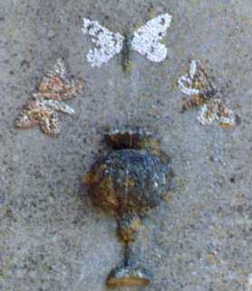
FIGURE XVIII
(papillons et vase, détail, Rivalland, II)En grec, sjigx, le sphinx est proche, par assonance de sjiggw, évoquant l'idée de serrer ou lier étroitement [corps astringent], et nous donne une indication sur le problème à résoudre. Il faudrait encore évoquer le paon, nom donné à plusieurs papillons diurnes ou nocturnes, présentant des ornements irisés, et dont le rapport à Junon est étroit. Le lecteur aura remarqué les trois papillons. La question se pose de savoir si chaque papillon remplit un office spécial, idée que l'on pourrait tirer de leur couleur différente, ou si l'artiste qui les a conçu a voulu les « projeter » d'un trait, exprimant alors les couleurs de la queue d'un paon. Ainsi, le papillon de gauche possède un corps blanc et des ailes rouges où se devine un peu de blanc ; le papillon de droite a un corps noir ou plutôt pourpre où se devine au centre, une nuance de rouge ; ses ailes sont rouges et bordées de blanc. Enfin, le papillon central possède un corps pourpre [ou noir] dont la queue est de teinte rouge ; ses ailes sont parfaitement blanches. Notez que ces sphingidés ne sont pas peints mais incrustés, sous forme de pierreries, dans la masse de la façade [voyez les ailes blanches où l'on remarque des pertes, dues à l'érosion]. Il n'est pas difficile d'imaginer qu'en fait, le même papillon est présenté trois fois, et qu'à chaque fois, c'est le même corps, la même substance, qui nous est ainsi révélée, sous des formes différentes, selon l'époque de l'oeuvre. La partie fixe est le corps du papillon et la partie volatile, ses ailes. C'est donc un véritable programme, un calendrier hermétique, qui nous est présenté sous cette allégorie. Et ce calendrier a trait au Mercure, dont la carrière est, en somme, superposable à celle du lépidoptère. Le Mercure commun prend le sens de larve [dragon], passe par l'étape de double Mercure [nymphe] avant la volatilisation et la mort rapide. La lecture de ces papillons a donc un sens : il passe du vase au papillon central ; puis à celui de droite ; enfin à celui de gauche. La figure formée par cet entrecroisement forme un 4 inversé qui est à l'image de celui qui et représenté sur l'écusson de la cheminée alchimique du château de Terre-Neuve. Ce 4 représente les points cardinaux et se dessine dans un ordre inverse de la croix que le chrétien reproduit lorsqu'il se signe avant de communier. Il ne saurait donc y avoir de point commun entre cette figure et celle de l'écusson de Terre-Neuve, l'une étant d'inspiration franc-maçonne évidente, l'autre se rattachant plutôt à la symbolique hermétique traditionnelle.
A ce stade de l'oeuvre, on peut suivre Alexandre Sethon pour guide :
"mets le tout au feu de putréfaction et génération, non toutefois comme tu as fait en la première opération : gouverne le tout avec grand artifice et discrétion, jusqu'à ce que les couleurs apparaissent comme une queue de paon : gouverne bien en digérant toujours, jusqu'à ce que les couleurs cessent et qu'en toute ta matière il n'y ait qu'une seule couleur verte qui apparaisse, et qu'il ne t'ennuie point" [Douze Traités, XI]
Jung, dans son Psychologie et alchimie [Buchet-Chastel, 1970], a magistralement analysé cette séquence de l'oeuvre :
« à la nigredo - Saturne - succède le lavage - ablutio, baptisma - qui conduit directement à l'albedo -
passage au blanc - ou bien alors l'âme libérée de la mort est à nouveau unie au corps mort et détermine sa résurrection, ou enfin l'ensemble des couleurs - queue de paon - conduit à une couleur unique, le blanc, qui contient toutes les couleurs. »L'auteur, resté anonyme d'Huginus à Barma déclare :
"Lorsque la putréfaction est finie, ôtez le globe de bois, parce qu'il n'est plus besoin d'eau pour le reste de l'ouvrage. Vous mettrez donc le vase dans le globe percé, que vous remplirez de cendres. Votre feu doit être doux, & tel que la main puisse le supporter sans aucune peine ; & en 50 jours, vous verrez paraître les couleurs connues sous le nom de la queue de paon, dont il ne restera enfin que la seule couleur verte"
C'est à peu de choses près ce qu'écrit le Cosmopolite. La couleur verte est habituellement réservée au Lion vert qui est le symbole du Mercure dans son premier état. Dom Pernety, pourtant, interprète différemment le signe de la queue de paon. Pour lui, ce signe traduit déjà l'état de la Pierre à un stade avancé de l'oeuvre :
"Nous avons déjà dit que la plupart des Philosophes commencent leurs traités de l'oeuvre à la pierre au rouge [...] Ceux, par exemple, qui lisent Alphidius, s'imaginent, quand il appelle la matière de l'oeuvre, minière rouge, qu'il faut chercher, pour le premier commencement des opérations, une matière rouge ; les uns en conséquence travaillent sur le cinabre, d'autres sur le minium, d'autres sur l'orpiment, d'autres sur la rouille de fer ; parce qu'ils ne savent pas que cette minière rouge est la pierre parfaite au rouge, et qu'Alphidius ne commence son ouvrage que de là [...] Ceux qui n'ont eu en vue que sa couleur, l'ont appelé gomme rouge, huile rouge, rubis, séricon, soufre rouge, jaune d'oeuf, vitriol rouge, etc. :
« En cette opération de rubifiement [rubification], dit Flamel, encore que tu imbibes, tu n'auras guère de noir, mais bien du violet, bleu, et de la couleur de la queue de paon : car notre pierre est si triomphante en siccité, qu'incontinent que ton mercure la touche, la nature s'éjouissant de sa nature, se joint à elle, et la boit avidement ; et partant le noir qui vient de l'humidité ne se peut montrer qu'un peu sous ces couleurs violettes et bleues, d'autant que la siccité gouverne maintenant absolument »
Les trois couleurs noire, blanche et rouge doivent nécessairement se succéder dans l'ordre que nous les avons décrites ; mais elles ne sont pas les seules qui se manifestent. Elles indiquent les changements essentiels qui surviennent à la matière : au lieu que les autres couleurs presqu'infinies et semblables à celles de l'arc-en-ciel, ne sont que passagères et d'une durée très courte. Ce sont des espèces de vapeurs qui affectent plutôt l'air que la terre, qui se chassent les unes les autres, et qui se dissipent pour faire place aux trois principales dont nous avons parlé. [...] La rougeur...ne doit paraître qu'à la fin, comme preuve de la maturité du grain, et du temps de la moisson" [Fables, signes ou principes démonstratifs, p. 181 et sq]
Il est curieux que le papillon n'ait jamais été évoqué par Fulcanelli ou E. Canseliet. Le sphinx va nous permettre d'en revenir aux motifs fleuraux évoqués au début. Il y a en effet un chapitre dans les DM, intitulé l'Homme des Bois, où Fulcanelli nous parle du Sphinx de Thiers. Il s'agit d'un personnage mystérieux, sculpté en un bas-relief sur bois qui représente un homme de haute stature, vêtu de peaux cousues transversalement et qui s'appuie sur un long bâton. L'Adepte compare ce personnage au Mercure et nous dit :
"L'opération est achevée lorsque paraît à la surface une étoile brillante, formée de rayons émanants d'un centre unique, prototype des grandes roses de nos cathédrales gothiques [...] Matière brute, dont l'étoile hermétique consacre la perfection : c'est maintenant notre compost, l'eau bénite de Compostelle, et l'albâtre des sages. C'est aussi le vase aux parfums, le vase d'albâtre et le bouton naissant de la fleur de sapience, rosa hermetica." [DM, I, p. 436]
Ce n'est pas autrement qu'il faut interprété la présence des fleurs blanche et rouge qui encadrent le vase aux papillons. Car si les papillons donnent le moyen de préparer le compost, c'est-à-dire de passer le cap des Symplegades, par le lacher d'une colombe et l'aboiement d'un chien, les fleurs permettent de baliser le chemin qui reste à parcourir. Nous ne saurions faire mieux ici, que d'évoquer l'Histoire de la conquête de la toison d'or. La scène qu'il faut raconter se situe après le passage des roches cyanées :
"Toute la troupe débarqua enfin sur les terres d'Aetes, fils du Soleil et Roi de Colchos, qui leur fit un accueil très gracieux. [...] La Toison d'or était suspendue dans la forêt de Mars, enceinte d'un bon mur, et l'on ne pouvait y entrer que par une seule porte gardée par un horrible Dragon, fils de Typhon et d'Echidna. Jason devait mettre sous le joug deux Taureaux, présents de Vulcain, qui avaient les pieds et les cornes d'airain, et qui jetaient des tourbillons de feu et de flammes par la bouche et les narines ; les atteler à une charrue, leur faire labourer le champ de Mars, et y semer les dents du Dragon, qu'il fallait avoir tué auparavant. Des dents de ce Dragon semées devaient naître des hommes armés, qu'il fallait exterminer jusqu'au dernier, et que la Toison d'or serait ainsi la récompense de sa victoire.[...] [Fables Égyptiennes et Grecques, Livre II, chap. 1]
Ici, il importe d'isoler chaque élément qui sert à faire progresser l'oeuvre. Jason d'abord est le fils d'Aeson, dont le rapport phonétique avec Aes est évident. Or aes, c'est le bronze, le cuivre, enfin pour le dévoiler, l'Airain, c'est-à-dire le Laiton ou androgyne hermétique qui contient en puissance les deux natures métalliques. Nous sommes sur la bonne voie [stibew] puisque cette opération primordiale, de blanchir le laiton, nous a été exprimée par le vase de pourpre et les papillons. Médée est cette célèbre magicienne, fille d'Eétes [que Pernety nomme Aetes et qui est connu sous le nom d'Aietes]. Médée joue le rôle de promoteur dans cette affaire. Elle procure en effet à Jason [par cabale, fils du Laiton, c'est-à-dire Rebis] un onguent dont il devait s'enduire le corps pour se protéger des flammes du dragon qui veillait sur la Toison d'or et lui fait aussi présent d'une pierre dont le but est de faire s'entre-tuer les soldats qui surgissent du champ où Jason a semé les dents du Dragon.
[Si l'on osait, on pourrait presque comprendre dans cette opération une réaction d'oxydo-réduction, la préparation d'un sel, qui résulte du combat entre les deux natures, jusqu'à saturation de la solution. L'onguent serait alors une certaine quantité d'eau dont on étend la solution. Mais cette aparté dépasse la Raison].
Cette légende est identique à celle de Cadmos qui fonde la ville de Thèbes. Les deux Taureaux figurent les natures métalliques qu'il faut allier, cette opération est l'objet du « mors » ou loup qui permet de les contraindre par le feu. Cette fable de la Toison d'or semble cacher la préparation du Soufre blanc ou Sel et c'est, en toute hypothèse, ce que cacherait la fleur blanche qui apparaît à gauche du porche de la tour Rivalland. A droite, la fleur rouge voilerait la teinture ou Soufre rouge. Observons aussi que ces fleurs sont disposées comme dans des sarcophages, des tombeaux [fleur blanche - rouge] ou, si l'on préfère, des creusets. C'est assez dire ce qu'il faut faire de la matière dont elles sont les signes cristallins.
Mais la substance même de ces fleurs apparaît composite car les matières qu'elles figurent sont incorporées, mixées, dans le fondant et elles participent activement à l'animation du Mercure commun, en le transformant, par l'opération des sublimations, en Mercure philosophique. Parmi les définitions que donne Pernety de ces fleurs, certaines semblent particulièrement d'adapter à notre sujet : la fleur de murailles ou flos nitri semble gagner, à cet égard, bien des suffrages. C'est peut-être ce que Fulcanelli avait en tête en écrivant :
"Or, les cabalistes écrivent artimon et prononcent antémon ou antimon, vocable derrière lequel ils cachent le nom du sujet des sages [...] la racine de ce mot [anqemon signifie fleur], anqoV, exprime ...la plus noble partie des choses, tout ce qui possède de l'éclat et brille à l'instar du feu. On ne s'étonnera point, dès lors, que Basile Valentin, dans son Char triomphal de l'Antimoine, ait donné à la prime substance de l'oeuvre particulier qu'il y décrit la dénomination de pierre à feu." [DM, II, p. 44]
Le mot antoV exprime, au vrai, plus que cela. Il évoque quelque chose, quelque substance qui croît ou pousse ; aussi l'or par l'éclat et le caractère brillant de la substance qui s'attache à ce terme ; mais il évoque surtout une efflorescence et nous ne serions pas surpris outre mesure d'y voir une indication sur la fleur d'un sel : le salpêtre. Car le salpêtre se dit en grec aloVanqoV. Si nous cherchons les mots grecs qui s'y rattachent par pure homophonie
[la règle la plus élémentaire de la cabale hermétique ; on peut parler d'homonymes mais l'homophonie nous semble un terme plus adapté : il caractérise des signes graphiques qui notent un même son et les Artistes y reconnaissent des isotopes spirituels. Que l'on nous comprenne bien : ainsi que le disait Fulcanelli, ce sont là jeux de mots et nous n'en disconvenons pas mais c'est au lecteur de se prêter à ce jeu : muni de ce fil d'Ariane, il ne pourra point se perdre dans le dédale figuré par le labyrinthe de Salomon],
nous trouvons alwV : c'est d'abord du grain, du blé [qui contient l'idée de la croissance, de la germination] ; c'est ensuite un cercle autour du soleil ou de la lune [halo] : le halo est le symbole de la fleur du sel ; le cercle centré d'un point, c'est aussi ce halo où le point représente le fixe, c'est-à-dire le Soufre. Quant au qualificatif de « pierre à feu », il indique avec assez d'insistance le salpêtre pour que nous ne puissions plus douter. Nous ajouterons, pour être complet et aussi pour mémoire, qu'on dénombre dans les liste des produits utiles dans l'oeuvre, plusieurs pierres à feu : la chaux qui s'échauffe par l'eau et les pyrophores qui réclament la collaboration de l'Eau et de l'Air. On les nomme aussi qrakis. La légende d'Ajax le Grand, pris de folie, leur tient lieu d'allégorie.
Mais ces motifs fleuraux sont eux-mêmes composites, puisqu'on distingue la plante, ses arborescences et enfin le bouton terminal et nous comprenons que la plante est cette partie du végétal qui permet l'éclosion de la fleur. C'est cette partie qui forme l'essence saline de notre Pierre, encore en puissance virtuelle.La question se pose donc de savoir par quel processus on peut arriver à cet état transitoire, Airain ou Rebis, objet hermétique composite dont une partie est manifestement d'essence terrestre, chthonienne, et l'autre, de vertu céleste, gouvernée par les astres, les planètes, et médiée par les signes zodiacaux des époques propices. Nous trouverons la manière de procéder efficacement à ce couplage dans d'autres motifs qui encadrent le portail de la tour Rivalland.
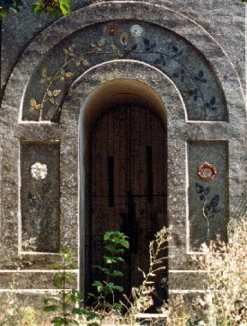
FIGURE XIX
(les natures métalliques, Rivalland, III)Sous des dehors trompeurs par son apparente simplicité, ce porche dissimule les natures métalliques, la façon de les joindre à l'Eau minérale et permet même de donner une idée de la forme du dissolvant. Nous avons ici trois pièces qui forment comme un puzzle spirituel. Deux pièces vont par paire : ce sont les deux colonnes évidées, avec à gauche une fleur blanche et à droite, une fleur rouge. La troisième pièce affecte la forme d'une demi-lune évidée où l'on devine des feuillages et les deux mêmes motifs floraux, inversés. On observera que les fleurs ont des tailles différentes et que, prises isolément, elles sont de dimension supérieure à la paire qui apparaît dans la demi-lune évasée, où, entrelacées, elles présentent une taille réduite de moitié. On remarquera en dernier lieu que le pistil en est évidé, contrairement aux boutons des fleurs figurant sur les colonnes du porche. Pour interpréter correctement ces arcanes, ouvrons le Mystère des Cathédrales, p. 144. On y verra le portail Sainte-Anne avec le pilier Saint-Marcel, de Notre-Dame de Paris.
Nous avons déjà examine le pilier Saint-Marcel dans la section consacrée à la critique du traité de Cambriel par Eugène Chevreul. Sans vouloir redonner par le menu la description de ce pilier, et notamment sa partie supérieure, qui a fait l'objet d'une controverse de Fulcanelli et d'E. Canseliet à l'encontre de Cambriel, c'est la partie inférieure de ce pilier
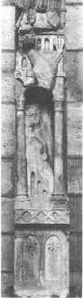
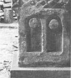
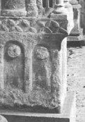
FIGURE XX
(pilier Saint-Michel, socle cubique, Notre-Dame de Paris)qui retiendra notre attention. Nous avons de bonnes raisons de penser que les motifs en forme de besants que l'on observe sur les faces latérales de ce socle ont un rapport des plus étroits avec nos fleurs blanche et rouge, de dimension différentes. En reprenant la terminologie de Pernety, on voit bien que nos deux fleurs sont assimilables à un lys pour la blanche, et l'autre à la fleur du Soleil, c'est-à-dire à une violette rouge-vif. Du moins la couleur de ces fleurs n'est-elle indiquée qu'en potentialité, car les deux fleurs que nous apercevons à la figure XIX sont encore des matières brutes, non préparées. Si l'on examine la figure XIX, on pourra trouver leurs équivalents dans les deux besants situés sur la vignette centrale qui permet d'observer le côté droit du socle cubique :
"Sur le socle cubique vous remarquerez, au côté droit, deux besants en relief, massifs et circulaires; ce sont les matières ou natures métalliques, - sujet et dissolvant, - avec lesquelles on doit commencer l'Oeuvre. [Myst., p. 145]
Ces natures correspondent aux matières premières qui doivent être, d'abord élues, puis préparées : c'est là tout le travail du 1er oeuvre. Que des fleurs soient utilisées pour exprimer le résultat d'une calcination n'est pas étonnant. Le passage exprimé dans la formule « per crucem ad rosam » [par la croix à la rose] et qui fut condensée à la fin du Moyen Âge dans la « Rose-Croix », l'essence du soleil descendant de l'astre dans la fleur doit se comprendre comme une réplique terrestre au visage du soleil. Le caractère solaire a aussi survécu, comme le dit C.G. Jung, dans le symbole de la « fleur d'or » de l'alchimie chinoise. Il serait presque trivial d'évoquer ici la rose, omniprésente dans le symbolisme alchimique, si elle n'avait pas été interprétée parfois de façon incorrecte par de distingués hermétistes. Par exemple, A. Poisson, dans ses Théories et Symboles des alchimistes, nous dit de cette fleur, qu'une rose blanche opposée à une rose rouge, c'est le fixe et le volatil, le Soufre et le Mercure. Cette définition est incomplète, car elle omet un tiers-agent essentiel, le Sel. Voulant par trop désigner les parties métalliques, on oublie trop souvent les parties minérales. La figure XVII vient à propos nous rappeler que la portion métallique est petite, même si elle est essentielle, par rapport à la portion minérale, cette dernière nourrissant, pour ainsi dire, les portions métalliques. Alors seulement, quand le temps sera venu, cuites dans des conditions définies et des proportions correctes, l'Artiste aura assez de chance pour voir s'épanouir l'amarante pourpre immortelle. Fulcanelli nous signale d'ailleurs que cette transition s'opérera :
"...en poursuivant l'action du quatrième degré de feu, le compost se dissoudra de lui-même, de nouvelles couleurs se succéderont jusqu'à ce qu'un rouge faible, qualifié fleur de pêcher, devenant peu à peu plus intense à mesure que la siccité s'étend, annonce le succès et la perfection de l'ouvrage. Refroidie, la matière offre une texture cristalline, faite, semble-t-il, de petits rubis agglomérés, rarement libres, toujours de forte densité et de brillant éclat, fréquemment enrobés dans une masse amorphe, opaque et rousse, nommée par les Anciens la terre damnée de la pierre. Ce résidu, facile à séparer, n'est d'aucune utilité et doit être jeté." [DM, II, p. 100]
Le lecteur trouvera tous les développements nécessaires en lisant les expériences de J.J. Ebelmen dans la section Mercure et celles de M.A. Gaudin, dans la section Soufre. Celles d'E. Frémy [section saturnie végétale] viendront compléter l'ensemble, agrémenté des rapports de synthèse de Sainte-Claire Deville [réincrudation], si originaux, qui font intervenir de façon spécifique le volatil, en une coopération sublime des éléments célestes et terrestres. Ces fleurs sont évoquées dans le chapitre sur Louis d'Estissac que nous avons examiné au début de cette section :
"L'antimoine des sages [...] C'est la fleur [anqemon] métallique et minérale, la première rose, noire en vérité, qui est demeurée ici-bas comme une parcelle du chaos élémentaire. C'est d'elle, cette fleur des fleurs [flos florum], que nous tirons, d'abord notre gelée blanche [stibh], laquelle est l'esprit qui se meut sur les eaux, et le parement blanc des anges ; réduite à cette blancheur étincelante, c'est le miroir de l'art, le flambeau [stilbh], la lampe ou lanterne, l'éclat des astres et la splendeur du soleil [Splendor solis] ; c'est elle encore qui, unie à l'or philosophique, deviendra la planète métallique Mercure [Stilbwn asthr], le nid de l'oiseau [stibaV], notre Phénix et sa petite pierre [stia] ; c'est elle enfin la racine, sujet ou pivot (lat. stipes, stirps) du Grand Oeuvre et non pas l'antimoine vulgaire." [DM, I, p. 401]
Cette citation très importante est peut-être le sommet de la trilogie que nous devons à l'artiste (ou au groupe d'artistes) caché derrière Fulcanelli. Mais avant que la fleur ne vienne à masquer l'étoile, ou l'inverse, il faut préparer les matières.
Nous allons donc examiner dans un premier temps la fleur blanche, à gauche du porche. Que le lecteur prenne garde qu'elle se superpose à l'un des besants de la vignette centrale de la figure XIX. Nous utiliserons un style plus convenable aux opérations de la chymie, telle que la pratiquaient Lemery, Glaser, Sénac ou Lefèvre. On appréciera d'autant mieux les analogies qui ponctuent le texte. Car si la chimie moderne obtient des résultats absolument spectaculaires et qui ne peuvent que nous laisser rêveur, son style ne convient pas à nos opérations.
Nous n'entendons ici autre chose que de préparer une substance saline, qui est soluble dans l'eau, bien qu'il y ait beaucoup d'autres choses qui portent improprement le nom de la matière des sages, qui tient davantage de la nature du talc par son incombustibilité. Le sel dont nous voulons parler n'est autre chose que la « salure » d'une terre minérale, qui tient de la nature du plomb ou de Saturne, qui porte en soi un esprit acide, et un sel âcre et caustique. On le nomme en latin glacies mariae, car on peut le couper en feuilles transparentes comme du verre. On le connaît sous une autre forme et il prend alors le nom de lapis amiantus. Ce sel se trouve tout fait, mais rarement à la vérité, condensé de soi-même dans les veines des terres appropriées. Il peut aussi résulter de l'évaporation de certaines eaux minérales. Enfin, on le tire aussi par la dissolution des terres, des pierres ou des autres minéraux où il abonde. Les vertus générales de ce sel sont de dessécher et de resserrer. C'est donc souvent la forme d'un arbre fendu, serré par un lierre, parfois strié, qu'on lui donne. C'est un sujet disgracié de la nature, pourtant, qui est acerbe, austère, ingrat et de mauvais goût. Pour lui enlever ses impuretés et « terrestréités », il faut le purifier. Pour y arriver, il faut faire dissoudre autant qu'on voudra de cette matière dans de l'eau de pluie distillée ou dans de la rosée, qui a été échauffée dans une terrine non vernissée ; il faut éviter le contact de la matière d'avec les vaisseaux métalliques, car elle agirait immédiatement sur le métal, tant est grande son avidité, au point qu'elle en tire le goût et la teinture par son esprit acide et pénétrant. Une fois dissoute, la matière saline [symbolisée par notre fleur blanche] sera filtrée et on fera ensuite évaporer l'humidité superflue à une chaleur lente comme celle d'un bain de sable, jusqu'à pellicule. On mettra ensuite le vaisseau dans un lieu frais, afin de faire cristalliser le sel, de continuer l'évaporation et la cristallisation jusqu'à ce qu'il n'en reste plus. Il faut réitérer ce travail jusqu'à quatre fois [les bons auteurs disent trois et c'est aussi ce que semblent indiquer les fleurs de lys de la fontaine des Quatre Tias], et ainsi on aura un sel subtil. Après l'avoir purifié, il faut extraire de ce sel sa quintessence. Pour cela, il devra être distillé.
•> Prenez autant que vous souhaiterez de ce premier sel, pulvérisez-le dans une ample retorte de verre jusqu'au tiers, que vous placerez au bain de sable. Il faut adapter au col de la retorte un ample récipient, exactement comme cela est indiqué sur la planche 5 et 6 du Mutus Liber. On donne le feu peu à peu, afin d'en tirer le phlegme dans un premier temps. Ce feu doit être bien gradué dans cette première opération. Lorsque des vapeurs blanches commencent à sortir du col de la cornue, il faut changer de récipient, augmenter à nouveau le feu par degrés, jusqu'à ce que tout l'esprit soit sorti, et on trouvera un second sel au fond de la retorte.
••> Ce second sel n'est pas encore propre à nos opérations. L'esprit de ce sel, qui est ingrat et mauvais, ne nous intéresse pas. En revanche, pour avoir le sel fixe de notre matière, celui que les alchimistes ont surnommé la salamandre, il faut prendre une livre ou deux de la tête morte de la distillation que nous venons d'évoquer. On met ce Caput mortuum dans une cucurbite et on verse dessus de l'eau de pluie distillée jusqu'à l'éminence de six doigts. On met à digérer le tout aux cendres à une chaleur médiocre qui est à augmenter peu à peu, jusqu'à presque faire bouillir la liqueur, que l'on agite de temps à autre avec une spatule de bois ; après quoi, on filtre et on évapore ce qui sera filtré à la vapeur du bain bouillant dans une terrine de grès ou de faïence jusqu'à pellicule.
•••> On laisse ensuite cristalliser ce troisième sel en un lieu frais, ou on le fera évaporer jusqu'à siccité, en l'ajoutant toujours.Ici, beaucoup d'Artistes se sont arrêtés, au seuil de l'entrée du palais du roi et ont erré, faute d'avoir à leurs côtés une Diane qui leur aurait servi de fil d'Ariane. La matière est pourtant clairement indiquée sur l'emblème XLII de l'Atalanta fugiens de Michel Maier, ouvrage majeur, qui fait toujours autorité, de nos jours. On avait donné au XVIIIe siècle des indications précises sur la façon de traiter ce sel fixe et il est probable que, bien avant, des alchimistes avaient su trouver le tour de main adéquat.
••••> Qu'on mette donc ce sel [le troisième] fixe dans un creuset [on comprend qu'on est d'abord passé par une voie humide et qu'à présent, la matière est attaquée par la voie sèche]. On place ce creuset dans un fourneau entre des charbons ardents. Il se liquéfie aussitôt qu'il commence à sentir la chaleur et bouillonne. Il prend alors un grand accroissement. Il se réduit bientôt en une matière très blanche, friable, très légère, rare, spongieuse et très volumineuse. On détache cette matière et on la conserve dans un lieu scellé. Notez que ce boursouflement rend certainement compte du caractère incombustible du sel fixe, qui est la marque, la signature pourrait-on dire, de la matière mercurielle. Chauffé à la chaleur blanche, des modifications moléculaires s'opèrent et le transforment en Mercure commun ou 1er Mercure.
Quand on tire notre sel de sa minière, il faut l'exposer à l'action de Jupiter qui, par l'action, souvent conjuguée, du feu, de l'eau et de l'air, lui fera subir une réincrudation naturelle. En effet, ce sel est d'abord dans un tel état de perdition, de dépravation que ces parties sont comme rompues et disjointes. Ces premières opérations doivent être suivies d'un bain et d'une sublimation qui doivent être à l'égal du Déluge. Sous le feu de Vulcain, la terre sera peu à peu séparée des eaux et notre premier sel paraîtra. Il faudra procéder à des réitérations qui sont les cohobations philosophiques afin d'obtenir une augmentation de la masse saline.Les alchimistes se sont longtemps posé des questions sur la nature de ce Sel. Il ont d'abord pensé qu'il procédait d'Arès et de Mercure. Aussi ont-ils eu l'idée d'utiliser une terre adamique avec un sel issu de Mars mais un illustre chimiste leur montra que :
"[...] si l'on fait bouillir la lessive pontique, avec de la terre adamique, la dissolution ne se fait que très lentement et par une forte ébullition. Lorsque la lessive paraît saturée, si on la filtre, elle laisse précipiter par le refroidissement une grande partie de la Terre qu'elle avait dissoute ; si dans ce état on rapproche la dissolution, la Terre se dégage et forme un précipité qui s'oppose à toute cristallisation."
On pouvait déjà conclure de cette observation, que le sel d'Aphrodite ou le sel d'Ammon vulgaire pouvaient entrer dans la composition de notre Sel. Un autre Artiste prononça que le sel des cendres contribuait à la cristallisation de notre premier Sel uniquement par l'emploi mesuré d'Arès et ce même Artiste éprouva que l'Arcanum duplicatum pouvait produire le même effet. Un autre Artiste fit une analyse exacte de notre Sel et trouva qu'il contenait nécessairement, pour pouvoir cristalliser, du polychreste de Glaser ou du sel harmoniac, ou tous les deux en même temps : il sut mesurer - ô miracle - la part divine qui se trouve dans notre Sel et il tira de là cette conséquence importante, que toutes les fois que l'on obtient des cristaux tous faits de notre Sujet, à partir d'une substance pierreuse ou terreuse, cette substance contenait du sel d'Aphrodite. Les alchimistes s'accordèrent alors à penser que les substances nécessaires au Sujet des sages devaient nécessairement contenir une part du divin et qu'il fallait, en quelque sorte, qu'elles fussent animées avant que d'être efficaces. Ils eurent alors l'idée d'employer du sel issu de l'Esprit universel, distillé et préparé par de la terre adamique, au moyen d'Arès. Puis, afin d'éprouver la pureté de l'enfant issu de ces épousailles, ils résolurent d'employer la noix de galle et mirent alors en évidence que cet enfant était impur et que l'Âme, trop tôt incarnée dans le Corps, devait en être séparée. Ils obtinrent finalement cette séparation par l'emploi conjointe de certaines vertus célestes émanées de Jupiter et d'Arès, ce dernier, disposé en plus grande quantité. C'est dans ces conditions qu'ils obtinrent enfin un sel qui s'apparentait au Lait de Vierge, sortant de son sein comme d'une roche, sur laquelle Moïse aurait frappé de son bâton.
Mais certains Artistes ont voulu aller plus loin et ont utilisé avec notre Sel de l'esprit de vin. Il leur a paru que le Sel, pour faire bonne impression, devait être dissous afin de constituer une espèce de laque céleste, qui puisse abandonner plus facilement à l'Or hermétique sa Toyson, c'est-à-dire sa résine. Pour ce moyen, nos Artistes crurent suffisants d'employer le Sujet, conjoint à du sel admirable ou à du sel d'Aphrodite. Mais ce moyen n'a pas suffi pour que le Sujet puisse servir de « mordant » aux Soufres sublimés. Ils comprirent alors qu'il était indispensable que la dissolution qui contenait le Sujet puisse être l'objet d'une mûre réflexion touchant au moyen d'éliminer les résidus. Ils prirent alors comme modèle et essayèrent successivement la terre foliée de tartre, puis le vert-de-gris [ioV], l'esprit de Mendererus, la tonne au noir, les cristaux de Vénus et enfin, le sucre de Saturne. Peu d'Artistes surent aller au-delà, effrayés par la difficulté de l'entreprise. Quoi qu'il en soit, certains, plus rusés que d'autres, finirent par trouver avantage à traiter le premier sel, en le versant dans une dissolution faite de vinaigre distillé et de litharge, c'est-à-dire une dissolution qui correspondait aux prescriptions initiales de Saint-Thomas, touchant à la préparation du Lait de Vierge. Il nous faut dire quelques mots de la recette : on met la chaux de Saturne avec une petite quantité de liqueur pontique et on fait chauffer le tout. Puis, passée la dissolution de l'oxyde, on la porte dans des vases où elle se refroidit peu à peu et où le sel de Saturne cristallise en aiguilles blanches et brillantes. On décante les eaux-mères pour les soumettre à une nouvelle évaporation, et en extraire de nouveaux cristaux. C'est de cette manière que d'anciens alchimistes trouvèrent les recettes pour préparer l'eau blanche, l'eau végéto-minérale ou l'eau de Goulard. Mais ce sont là des retombées qui nous intéressent peu. Pour revenir au sujet, nos Artistes mélangèrent du Lait de Vierge vulgaire et de notre premier Sel.
•••••> Ils obtinrent alors un quatrième sel, incolore, très styptique, incristallisable. Son pouvoir dissolvant était tel qu'ils crurent avoir obtenu l'Alkaest. Ses propriétés, en effet, les avaient porté à croire qu'ils obtiendraient des résultats spectaculaires dans les teintures d'Ariès, pris lui-même dans sa forme de melon [pomme, agneau]. Les portes du Jardin des Hespérides s'ouvraient devant eux...Nous allons à présent examiner les propriétés de la fleur rouge. Mais nous passerons plus vite parce que ce point de science, crucial au demeurant, a été déjà plusieurs fois examiné dans d'autres sections [dragon écailleux, soufre, etc.]. Toutefois, si sa valeur exotérique est évidemment indispensable à l'ouvrier, sa valeur ésotérique est encore plus importante aux yeux de l'hermétiste. c'est Nicolas Flamel qui a donné la meilleure définition du Soufre rouge :
"Ce Vaisseau de terre en cette forme, est appellé par les Philosophes le triple Vaisseau ; car dans son milieu il y a un étage, sur lequel il y a un Écuelle pleine de Cendres tièdes, dans lesquelles est posé l'Œuf Philosophique, qui est un Matras de verre que tu vois peint en forme d'Écritoire, et qui est plein de Confections de l'Art, c'est-à-dire de l'Écume de la Mer Rouge, et de la Graisse du Vent Mercurial." [Fig. Hiér.]
Ailleurs, c'est par l'image que les alchimistes ont souligné à l'encre rouge la nature du précieux Soufre, qui, tout comme son homologue blanc, est un véritable don de Dieu.
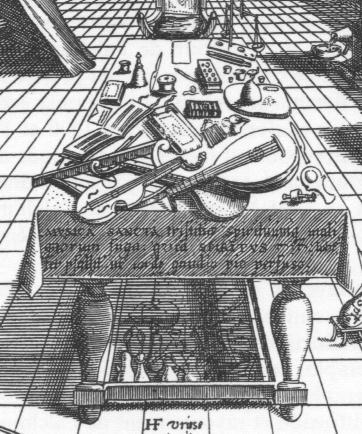
FIGURE XXI
(détail de l'Oratoire et Laboratoire, gravure de Hans Vredemann de Vries,
correspondant à l'Amphitheatrum Sapientiae aeternae, H. Khunrath, Hanovre, 1609)Ce détail d'iconographie montre plusieurs instruments de l'Art. Au premier plan, des luths qui permettent de conserver les esprits qui sortent des cornues. Plus loin à gauche, un encrier avec sa plume et à droite des instruments de docimasie, avec une balance, symbole de Thémis et un pot retourné qui est semblable à celui qui est utilisé dans l'une des planches du Mutus Liber [planche 7]. Cette table, à mi-chemin entre l'oratoire et le laboratoire, en dit assez sur l'importance de la musique, des mesures et des notes. Elle met en exergue certains principes astringents des végétaux qui nous renvoient à la noix de galle et à l'étain grenaillé, sur lesquels Fulcanelli a attiré l'attention dans les Myst. Ces principes s'accordent avec le symbolisme dégagé par plusieurs gravures, notamment celles figurant sur les Douze Clefs de philosophie. Ces principes astringents sont présents surtout dans la noix de galle, de l'écorce de chêne, de marronnier d'Inde, d'orme, de saule, les pépins de raisin, certaines sèves et attirent l'attention sur la partie végétale de la Pierre qui n'a pas échappé aux grands Artistes. L'intérêt de ces substances se mesure à la force qu'elles ont de retenir toujours des matières colorantes, signant par là leurs rapports avec le principe « teingeant » du Soufre.
Écritoire, encrier, plume, voilà autant de mots qui serviront à baliser le chemin qui conduit à la teinture de la Pierre. On trouve le principe de la teinture dans une minière où abondent des matériaux pyriteux, marqués à la fois par l'empreinte du vitriol et par le souffle du divin. Ces matières sont composées de vitriol martial, de terre siliceuse et quelquefois de terre calcaire, en différente proportion. Il faut avoir soin d'exposer ces pierres longtemps à l'air libre, afin qu'elles s'imprègnent des vertus de l'Esprit universel et ne pas hésiter à réitérer ces opérations. La matière, véritable minière du Soufre rouge, se retire alors par des lavages répétés et la sublimation. Mais ce Soufre est dans un état corrompu, car lorsqu'on l'expose à l'action de Vulcain dans une cornue, il s'en dégage de l'esprit vitriolique. Non seulement il est corrompu, mais bien souvent aussi, il est impur, mêlé à du vert-de-gris et au premier Sel dont nous avons parlé plus haut. On peut essayer de purifier la minière de notre Soufre en s'aidant d'Ariès dans la sublimation. Notre vitriol a des propriétés différentes selon son état de corruption : presque purifié, il se présente sous la couleur noire qui a tant d'importance au début du travail. Très corrompu, il prend alors une teinte rouge qui signale une réincrudation trop précoce et marque que l'Artiste a dû «brûler ses fleurs ». Des savants distingués se sont penchés sur cet Apollon hermétique et ont étudié les diverses couleurs que prend la matière. Quand on la tient exposée à l'air à l'état de dissolution, celle-ci se trouble peu à peu et il se forme un précipité jaune qui semblerait indiquer ou préfigurer le régime de Mars. Si l'effet est complet, l'extrait a un grand excès de vitriol et marque qu'Arès a été employé en trop forte quantité. Finalement, la matière triomphe de la corruption tant est grande la marque du divin et reprend une teinte noire. Si on laisse des cristaux exposés à l'air, ils perdent leur couleur verte et deviennent jaunâtres. Si on le mêle à un sel de la nature d'Aphrodite, il se corrompt entièrement et prend la teinte rouge. Noir, vert, rouge, telles sont les couleurs que peut prendre, au grès de l'Artiste, la minière du Soufre. Certains auteurs préconisent d'utiliser le vitriol de Chypre ou couperose bleue. Il faut calciner la mate, au sortir de la minière et faire effleurir le résultat de la calcination. On peut pratiquer, là aussi, des lavages et des cristallisations. Des savants ont été assez hardis pour supposer, enfin, que l'on pouvait produire de manière artificielle les Soufres de la fleur rouge.
Ainsi, M. Geoffroy, dans un des Mémoires de l'Académie royale, daté du 11 mai 1707, a-t-il été conduit à écrire qu'un mélange d'huile de lin avec des terres argileuses ou celui résultant de l'application d'huile de vitriol avec les huiles éthérées, fournissait du fer. On a rétorqué à M. Geoffroy que ce fer était déjà tout formé dans les substances qui étaient mises en présence. Celui-ci a convenu que les argiles contenaient des traces de fer, mais en si petite quantité qu'il fallait bien le chercher pour le trouver. Il a mis en avant la quantité de fer non négligeable que l'on trouve dans la tête morte de l'huile de lin, au point que certaines liqueurs peuvent fournir beaucoup plus de fer, à proportion qu'il n'y en a dans certaines eaux vitriolées. Mais ce que M. Geoffroy ignorait peut-être, c'est que les sels de fer, à leur minimum, n'ont pratiquement pas d'action sur la noix de galle, au lieu que, poussés à leur maximum par la calcination, ils donnent alors une couleur noire ce qui explique la réaction obtenue avec le Caput mortuum de l'huile de lin. M. Geoffroy a alors tenu la théorie suivante, sur l'action des sels sur les métaux imparfaits :"Les principaux Sels minéraux sont le Nitre, le Sel marin, et le vitriol. Nous trouvons ces mêmes sels dans les plantes. Le sel essentiel de la Pariétaire est tout nitreux, il fuse sur les charbons comme le salpêtre. Les sels fixes du Chardon béni, de l'Absinthe, du Kali, de l'Éponge contiennent beaucoup de sel marin, qui se cristallise en cubes, et qui décrépite sur les charbons. La plupart des sels fixes des plantes calcinés jusqu'à un certain point, rendent une odeur de soufre très considérable. Or cette odeur sulfureuse ne peut venir que d'un sel vitriolique raréfié et volatilisé par l'huile de la plante. [...] Ainsi le vinaigre distillé que je crois pouvoir mettre dans la classe des acides vitrioliques, ne diffère de l'esprit de soufre, de l'esprit de vitriol, ou même de l'huile caustique de vitriol, qu'en ce que ces acides dans le vinaigre sont étendus dans beaucoup de phlegme, et unis très fortement avec beaucoup d'huile, qu'on en peut néanmoins séparer, comme je le ferai voir dans un autre Mémoire. Si l'on dissout du cuivre dans l'acide du vinaigre séparé de son huile autant qu'il est possible, il s'y forme des cristaux tous semblables en figure à ceux du vitriol bleu. Il paraît donc clairement par tout ceci que les sels des plantes ne diffèrent point essentiellement des sels des minéraux. Examinons présentement les Soufres [...]" [Histoire de l'Académie royale des Sciences, 1707]
C'est ce type de texte qui a provoqué l'erreur d'alchimistes qui y ont vu le moyen de préparer artificiellement le soufre des métaux. Quant au vinaigre et au cuivre, l'explication est simple : il s'agit de la synthèse du verdet cristallisé appelé aussi cristaux de Vénus, ou plus communément vert-de-gris. Mais nous ne souhaitons pas ici faire un cours sur la préparation des acétates. Toujours selon M. Geoffroy, le principe sulfureux [qui est symbolisé par notre fleur rouge] se rencontre dans les substances métalliques et c'est lui qui donne à ces matières leur fusibilité, leur ductilité et, en un mot, leur forme métallique :
"L'Antimoine qui est une des substances qui approche le plus du métal, n'est presque que du soufre brûlant. On aperçoit aisément ce soufre qui s'exhale en flamme bleue si on le calcine à l'obscurité. Lorsque la plus grande partie de son soufre s'est exhalé, il perd sa forme métallique, et il reste une cendre grise, qui fondue prend la forme de verre au lieu de celle de métal qu'elle avait avant la calcination. Si on veut rendre à ce verre ou à cette cendre la forme métallique, il ne faut que lui rendre ce principe sulfureux qu'elle a perdu en la refondant avec quelque matière inflammable, comme le tartre, le charbon et tout autre matière semblable, et elle se remet aussitôt en Régule." [Ibid.]
Le verre d'antimoine, que cite M. Geoffroy est un oxysulfure, rouge et transparent. Il doit être différencié du crocus qui contient davantage de soufre. L'oxyde et le sulfure d'antimoine se combinent par voie humide lorsqu'ils se trouvent en contact à l'état naissant et l'on nomme crocus tous les composés qui sont préparés de cette manière. Fondus ensemble, ils peuvent ensuite se combiner avec les silicates terreux. C'est le secret de l'antimoine utilisé en spagyrie dans la préparation des pierres précieuses artificielles connues sous le nom de strass colorés. La réincrudation de l'antimoine est bien décrite : c'est une réduction de l'oxysulfure par une matière réductrice. Ce passage est important car il donne de façon précise un aperçu de ce que les anciens chimistes croyaient correspondre au soufre des métaux, qui ne correspondait qu'à une oxydation [c'est-à-dire, par cabale, une corruption]. M. Geoffroy pensait même avoir trouvé le moyen de recueillir ce précieux Soufre :
"On peut recueillir ce principe sulfureux de l'antimoine en le distillant avec le sublimé corrosif ; car pour lors en se détachant de la terre métallique de l'antimoine, il se joint au mercure du sublimé, et forme le cinabre d'antimoine : sa terre métallique passe par la distillation avec les acides du sublimé, et forme le beurre d'antimoine. Si on précipite cette terre, on aura ce qu'on appelle la poudre d'Algaroth : en la fondant ensuite on la convertit en verre, parce qu'elle est dépouillée de la plus grande partie de son soufre. Si on lui rend ce soufre par l'addition de quelque matière sulfureuse, elle reprend sa forme métallique." [Ibid.]
Au départ, le bichlorure de mercure -sublimé corrosif- et l'antimoine se combinent pour former du beurre d'antimoine ou protochlorure d'antimoine. D'habitude, l'opération s'arrête quand on voit apparaître une vapeur rouge. Cette vapeur rouge ne peut être que du sulfure de mercure - cinabre - ce que l'on déduit par la décomposition du sulfure d'antimoine par le bichlorure de mercure : il se forme du protochlorure d'antimoine, du mercure et du sulfure de mercure. Le Soufre qu'évoque M. Geoffroy n'est donc qu'un sel, un chlorure, en la circonstance. M. Geoffroy poursuit :
"A l'égard des métaux il y en a quatre que les chimistes ont nommé imparfaits, parce que leurs principes ne sont pas liés étroitement, et parce que la violence du feu ordinaire les détruit. Ces métaux sont le fer, le cuivre, le plomb et l'étain. Les autres qui résistent à la violence du feu ordinaire sont l'or et l'argent. Dans les quatre premiers on peut découvrir aisément le principe d'inflammabilité, ils fusent tous avec le salpêtre plus ou moins sensiblement. Le fer est celui dans lequel cela est le plus sensible, ensuite l'étain, le cuivre et le plomb [...]" [Ibid.]
On voit bien que les métaux ne sont pas des corps composés. En revanche, le cortège électronique qui gravite autour de leur noyau diffère et est responsable de leurs réactions différentes vis-à-vis des agents oxydants ou réducteurs. Il est assez remarquable de voir que la fusibilité au salpêtre suit à peu près, et en sens inverse, l'ordre des régimes planétaires de Philalèthe. En particulier Vénus et Saturne se trouvent souvent liés sous la plume des alchimistes, dans la phase de putréfaction qui suit l'infusion du Soufre dans le Mercure commun. On peut donc, sans peine, définir ce qui a tenu lieu de « Principe Soufre » chez les alchimistes : la capacité qu'a un métal de perdre des électrons et de se transformer en ion. Ce sont ces électrons « perdus » qui constituaient - sous une terminologie moderne - ce qu'ils nommaient « Soufre » des métaux.
D'autres savants ont remarqué ce qu'ils appelaient les teintures des métaux. La teinture d'un métal ne leur est apparue que comme une dissolution où le métal est encore plus divisé et plus étendu qu'il ne le serait dans son dissolvant naturel et ordinaire, entendez dans son acide. Comme il est fort atténué, il donne une couleur à la liqueur, et de-là vient apparemment le nom de teinture. Si la teinture était irréductible, c'est-à-dire si le métal dissous l'était au point de ne plus pouvoir se remettre en métal, ou ce qui revient au même, si les principes qui le composent étaient désunis. Refermons cette parenthèse.Si nous revenons à la figure XX, nous voyons que, peu à
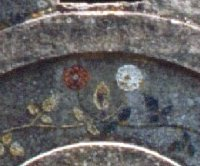
FIGURE XXII
(rosaces à calice, Rivalland IV)peu, nos besants, symbolisés par les fleurs situés dans les colonnes du porche de la tour Rivalland, se sont progressivement transformés en magnifiques astéries (vignette de gauche), en passant par le stade intermédiaire de rosaces à calices apparents (vignette de droite). Revoyez à présent la figure XIX et vous distinguerez aussi ces calices qui nous montrent l'absolu parallélisme qu'il y a lieu de noter entre la conception du portail Saint-Anne de Notre-Dame de Paris et le porche de la tour Rivalland de Fontenay-Le-Comte. Voici ce qu'en dit Fulcanelli :
"[...] les besants, devenus rosaces, affectent cette fois la forme de fleurs décoratives à pétales soudés, mais à calice apparent. Quoique bien rongées et presque effacées, il est facile cependant d'y retrouver la trace du disque central. Elles représentent toujours les mêmes sujets ayant acquis d'autres qualités ; le graphique du calice indique que les racines métalliques ont été ouvertes et sont disposées à manifester leur principe séminal. Telle est la traduction ésotérique des petits motifs du socle." [Myst, p. 145]
Ce qui, dans le cours de l'oeuvre, traduit la fin de la phase de dissolution : nous abordons le régime de Jupiter, début de la réincrudation des Soufres. On peut s'attarder sur le symbolisme du calice, qui peut aussi bien s'appliquer à une fleur [kalux] qu'à une coupe [kulix]. Dans le premier cas, il s'agit de l'enveloppe d'une fleur ou d'un fruit, c'est-à-dire d'une écorce [souvenez-vous du conseil lapidaire de Basile Valentin : Dealbate Latonam Et Rumpire Libros, improprement traduit par blanchis le laton et rompt tes livres, là où il faudrait lire blanchis l'Airain et rompt l'écorce]. C'est donc d'une fleur ou d'un fruit non encore développé qu'il est question ici, d'un Soufre en puissance dont la nature encore trop mercurielle réclame un séchage. Dans le second cas, celui de la coupe, reportez-vous à la section de St Grégoire-sur-Vièvre et aux blasons alchimiques.
3)- chèvre et licorne [façade SUD]
L'examen des arcanes de la tour Rivalland nous appris la nature de l'agent et du patient, la disposition du bain minéral par lequel ces deux natures, d'essence métallique et de forme minérale, doivent être cuits. Les voilà prêtes à fondre leur substance en une nouvelle fleur minérale qui est l'escarboucle des Sages. Nous allons à présent étudier ces deux natures, poussées par l'art, à ce stade de leur évolution.
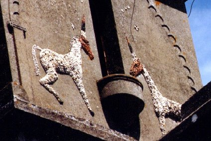
FIGURE XXIII
(transfiguration des deux natures, Rivalland V)Nous apercevons sur la façade sud de la tour deux animaux où l'on peut deviner, à gauche une chèvre et à droite, une licorne. Examinons d'abord la chèvre. Son goût de la liberté, son caprice en un mot, qui a été jusqu'à lui donner son nom [capris] en fait le symbole de l'élément mercuriel de l'oeuvre.
Dans l'Inde, ce mot désigne la substance primordiale non manifestée, ce qu'en Occident, nous traduirons par quintessence. On lui attribue trois couleurs, le rouge, le blanc et le noir qui correspondent aux trois qualités primordiales : sattva, rajas et tamas. Le sattwa, pour Shri Aurobindo, est « le mode de la lumière », « la force d'équilibre qui se traduit qualitativement par le bien, l'harmonie, le bonheur et la lumière ». En Occident,c'est la couleur type de la réincrudation à un stade avancé de la Grande Coction. De même, Pour Shri Aurobindo, le râjas est « le germe de la force et de l'action, qui crée le jeu de l'énergie ». C'est « la force de mouvement qui se traduit qualitativement par la lutte, l'effort, la passion et l'action ».
L'alchimie exprime la même idée : l'obtention de la blancheur est obtenue après un dur combat que livrent les natures métalliques au Mercure.
Enfin, toujours pour Shri Aurobindo, tamas est « la force d'inconscience et d'inertie et se traduit qualitativement par l'obscurité, l'incapacité et l'inaction ». C'est « le germe de l'inertie et de la non-intelligence, négation de sattwa et de râjas, qui dissout ce qu'ils créent et entretiennent ».
L'analogie avec la noirceur, l'Oeuvre au noir en quelque sorte, est parfaite et cette force d'inconscience et d'inertie est la marque à la fois du Mercure, reconnu comme le fou de l'oeuvre, et de Saturne-Cronos [tardambulum]. Gustave Rivalland était bien au fait de ce symbolisme puisque les trois couleurs, disposées comme des pierreries, l'ont été en proportion même des principes Soufre et Mercure. Le corps de l'animal est représenté en blanc [Corps de la pierre : Soufre blanc] ; sa tête est rouge. La corne est tricolore et nous y voyons la couleur noire. On devine bien qu'elle a été le théâtre d'un combat, raison pour laquelle elle est représentée uniquement sur la corne de l'animal.
Chez les Grecs, la chèvre symbolise l'éclair et l'étoile de la chèvre, dans la constellation du Cocher, annonce l'orage et la pluie. Est-il besoin d'en dire plus pour annoncer Zeus et la chèvre Amalthée ? Tout cela a déjà été étudié dans les sections suivantes : Cosmopolite - Douze Traités - Introïtus.
D'après Diodore de Sicile, des chèvres auraient guidé l'attention des hommes de Delphes vers le lieu où des fumées sortaient des entrailles de la terre [voir section Mercure de nature]. Un vêtement, nommé cilicium [voilà qui ne s'invente pas et l'on serait bien tenté de l'associer à un élément évident, si cela ne représentait pas en somme, que de la cabale vulgaire] était porté par des Romains, lors de la prière, pour symboliser l'union avec la divinité ; chez les Chrétiens, la scène a le même sens, mais avec une intention de mortifier la chair par pénitence et de libérer l'âme vivifiée, ce qui est tout à fait en accord avec notre Art et témoigne de l'importance évidente du parallèle Lapis-Christus. On pourrait encore citer les Orphiques, qui comparaient l'Âme [Soufre rouge] à un chevreau tombé dans le lait, celui-ci désignant en toute hypothèse le Lait de Vierge dont nous avons souvent parlé ailleurs. La chèvre Amalthée est évoquée dans le commentaire du Verbum dimissum de Bernard de Trévise.En résumé, la chèvre apparaît essentiellement comme le symbole de la nourrice, de la Vierge-mère, mais à connotation capricieuse qui doit rappeler à l'Artiste que le trait principal du Mercure commun est l'inconstance, la volatilité et qu'il est de toute importance qu'il trouve un tiers-agent pour assagir cet enfant turbulent.
De nombreuses légendes courent sur la chèvre ; on ne saurait les relever toutes. Il n'est pas sans intérêt de savoir que la chèvre prévient l'arrivée de la pluie en léchant les murs des étables : l'étudiant au fait de l'allégorie appréciera. Il est fait mention aussi, d'une chèvre blanche, dans le Morbihan, qui allaita sept frères abandonnés dans le bois et qui prit soin d'eux : ils devinrent tous évêques. Pour le coup, ce devait être une parente d'Amalthée [après avoir nourri Zeus, elle devint successivement nymphe, déesse nourricière et mère du Soleil]. Ces sept frères abandonnés de la nature sont évidemment nos métaux et il revient à l'Artiste d'élire les bons ! Muni de ces précieuses natures, Hercule aura alors la meilleure mère nourricière qui soit pour abreuver son laton. Contre toute attente, on ne trouve aucun renvoi au mot chèvre dans les glossaires de nos alchimistes modernes, alors que l'animal est l'un des emblèmes les plus importants de l'oeuvre...En France, il semble que l'une des terres d'élection de nos capridés soit les Cévennes schisteuses. Rapprochez cette observation de la goule de gauche, présentée sur la figure VIII et vous aurez le nom vulgaire du dragon écailleux. Il faudrait encore citer l'égide, fait avec la peau de la chèvre Amalthée, l'arme de Zeus, que nous avons examinée dans l'Introïtus, VI. Par cabale, on peut rapprocher l'égide [aigiV], d'Égée [aigaioV] en restant dans la tonalité de la chèvre [aix] pour évoquer cette célèbre fable où Thésée, fils d'Égée, dans la joie d'avoir vaincu le Minotaure, avait oublié de mettre des voiles blanches ; au lieu de quoi, les voiles étant noires, Âgée crut que son fils était mort et se jeta dans la mer...Mais la richesse hermétique de la chèvre épuise les meilleures intentions ; nous laisserons donc au lecteur le soin d'examiner le sens à donner à la corne d'Amalthée, au rapprochement à faire, par cabale, entre la chèvre, le vautour, l'Égypte et le vent impétueux.
Voyons à présent la licorne. C'est l'un des plus importants emblèmes de l'Art et on s'est penché sur cet animal fabuleux dans d'autres sections [les plus récentes : Mutus Liber - Table d'Émeraude - Introïtus, VI - blasons alchimiques - Gardes du corps] sans pour autant avoir épuisé le sujet. Envisagé au plan général, la licorne, l'unicorne, évoque la pénétration et d'aucuns y ont vu un symbole phallique mais pour nous, ce symbolisme n'est pas suffisant et nous voyons, dans notre Art, et littéralement, la pénétration du divin dans la créature, ce qu'en termes vulgaires nous traduirons par l'accrétion du Soufre rouge au Soufre blanc ou Corps. Cet animal représente donc l'état du Soufre à la fin de la sublimation philosophique, au moment de la précipitation - ou de la déchéance, comme on voudra - de l'Âme s'incarnant dans la chair. En cet instant, notre Soufre rouge est une flèche spirituelle, un rayon solaire. Et c'est ici que nous pouvons placer l'examen d'une partie d'un blason de la fontaine des Quatre Tias que nous avions réservé jusqu'alors : la flèche emplumée du blason de droite de la figure VIII, symbole du Soufre rouge à son stade primitif de sujet déchu et dégoûtant. Ici, bien au contraire, la sublimation a porté ses fruits, et c'est à l'état de pureté agissante que nous retrouvons notre sujet, comme porté en gloire. Au vrai, notre licorne renvois à la sublimation miraculeuse de la vie charnelle et explique que seule, une Vierge puisse impunément toucher la corne de cet animal. C'en est au point que seul le giron d'une vierge peut calmer les ardeurs de la licorne : elle s'y abandonne immédiatement et s'endort. Il faudrait parler ici de la Dame à la Licorne, sixième et dernière tapisserie de la célèbre série du musée de Cluny, mais E. Canseliet y a consacré un chapitre entier de ses Études de symbolisme alchimique [Alchimie, Pauvert, 1964 et 1978]. Il semble que plusieurs Artistes se soient égarés dans le sens à accorder à la licorne : on en a fait un animal mercuriel, alors que tout en fait un prototype du Soufre. C'est d'abord Lambsprinck qui, dans sa célèbre gravure, nous montre le cerf et l'unicorne, qui a commencé à semer le doute dans les esprits :
« On découvrira aussi avec certitude et vérité - Que l'unicorne est Esprit à toute heure...».
Certes, le Soufre sublimé, en ce moment suprême de la Grande Coction, peut être confondu avec l'Esprit mais on voit mal comment, porté sur les flots, l'Esprit de Dieu pourrait s'incarner, sans médiateur, dans le Corps : ce médiateur n'est autre que le Soufre et la licorne symbolise au plan dynamique, comme on l'a dit, cette volonté agissante, qui ne peut venir que du divin. Dan ses Deux Logis alchimiques, Canseliet dit ceci :
"Lambsprinck, plus que nul autre, n'aurait pu changer la correspondance des trois principes, laquelle est, à savoir :
Mercure, Soufre, Sel.
Esprit, Âme et Corps.
Cerf, Licorne et Forêt.C'est dans cet ordre, que les trois traités inestimables de Cosmopolite se succédèrent." [Le Cerf soumis, p. 216]
Si l'on a bien compris E. Canseliet et si l'on a suivi nos principes, la correspondance s'éclairera et l'attribution exacte deviendra évidente. Nous ferons remarquer que le Traité du Sel n'a pas été écrit par Alexandre Sethon mais par Clovis Hesteau de Nuysement ; mais il n'en demeure pas moins une confusion, parce que le Traité du Sel qu'on attribue à Nuysement...n'est pas le Traité du Sel qu'il a rédigé[Traitez de l'Harmonie et Constitution Générale du Vray Sel secret des Philosophes, et de l'Esprit universel du monde, suivant le troisème Principe du Cosmopolite, recueilly par le sieur de Nuisement, Receveur général du Comté de Ligny en Barrois, Chez Ieremie Perier et Audias, Paris, 1621]
C'est dans le chapitre La Licorne domptée, qu'E. Canseliet s'est exprimé le plus sur la Licorne :
"Emblème de la pureté, cet animal fabuleux est muni, suivant Pline l'Ancien, d'une corne noire qui s'élève, au milieu du front, de deux coudées [...]" [Deux Logis, p. 309]
Comme le remarque justement Canseliet, il n'est pas justifié de voir dans cette corne un objet noir et l'on y verrait plutôt une lame d'épée. Et comme nous l'avons affirmé, on ne saurait voir dans cet animal le Mercure, mais bien la lumière naissante du Mercure, que nous rapprocherions de la Lumière sortant par soi-même des Ténèbres [Lux obnubilata...], ouvrage célèbre d'un Anonyme amoureux de science. Féru de cabale, Canseliet décompose la licorne [lycorne] en Luch [aube] et orniV [oiseau], rappelant la grande volatilité du dissolvant. Et certes, la licorne paraît être le Soleil naissant de l'oiseau d'Hermès, abreuvé au Lait de Vierge. Mais en toute logique, la licorne se disant en grec monokerwV, Canseliet nous semble avoir laissé échapper l'Esprit qu'il croyait tenir par ce rapprochement osé, mais trompeur, de jeux de mots hasardeux. Il aurait vu qu'en grec, kerwV, par cabale peut s'écrire khrwV. Du coup, nous tenons l'explication de l'allusion à Fulcanelli des cierges verts que l'on employait lors des processions aux Vierges Noires. Parce que khrwV signifie flambeaux de cire, cierges, et que Fulcanelli
"Un détail encore, utile pour l'hermétiste. Dans le cérémonial prescrit pour les processions des Vierges noires, on ne brûlait que des cierges de couleur verte" [Myst., p. 78]
dit que notre Mercure doit être filant comme de la cire chaude. Mais Canseliet aurait vu aussi que khr signifie coeur et est homonyme de Khr, la déesse de la mort, le Sphinx, les Erinyes, nom grec des Furies comme les Gorgones. E. Canseliet n'aurait pas manqué de voir, par ce raccourci saisissant, que la licorne, par cabale, renvoie au Mercure coulant et au coeur, à l'Âme unique, seule [ion - ioV] en un mot, qu'il faut savoir y sublimer ; que cette sublimation est homonyme de la fatale dissolution dont elle procède, expliquant par là l'allusion double à Khr, où l'Amour et la Mort se rejoignent en une image dont la beauté n'a d'égale que le tragique. Fulcanelli est revenu sur cette coutume de brûler des cierges verts dans le chapitre sur le Cadran solaire du Palais Holyrood, alors qu'il achève l'histoire de Marthe, la veille de la Chandeleur, fête de la purification :
"Aussitôt la messe commencée, quelle ne fut pas la surprise de la jeune fille en voyant la cire blanche des cierges devenir verte, d'un vert céleste, inconnu, vert diaphane et plus éclatant que les plus belles émeraudes ou les plus rares malachites ! Elle n'en pouvait croire ni détacher ses yeux..." [DM, II, p.318]
E. Canseliet est suffisamment charitable pour lever le doute, et le voile, sur la nature mercurielle du cerf :
"Certes le mercure ne saurait être l'âme et, par là même, le soufre dont il est le véhicule, par le truchement de l'esprit. C'est l'explication ésotérique des paroles de saint Thomas de Villeneuve, prédicateur particulier de Charles Quint, dans un sermon relatif à la Nativité de Jésus : « Aimé comme le fils des licornes. Qui de plus semblable au fils de Dieu, que le fils des licornes » [Sermo IV, in Nativitate Domini]..." [La Licorne domptée, in Deux logis, p. 314]
Oui, pour une fois, Canseliet se montre réellement charitable et nous ne pouvons qu'adhérer à ce qu'il dit. Notez que les cinq mots soulignés pourraient, à eux-seuls, faire l'objet d'un lourd in-folio qui s'appellerait Traité de la quintessence. La phrase citée mérite une explication que l'on va trouver chez C.G. Jung. Dans son Psychologie et Alchimie, un chapitre entier est consacré au paradigme de la Licorne [pp. 548-593]. Il est au-dessus de nos forces d'analyser tout le chapitre mais nous pouvons tirer quelque enseignement qui s'appliquera à notre sujet : la transmission dynamique du Soufre rouge par accrétion, son changement d'état qui, de sublimé et d'amorphe en un mot, passe à l'état cristallin. D'abord revenons sur la phrase que nous avons évoquée. On trouve dans un livre de Jost Amman, intitulé Ein neuw Thierbuch [avec des vers de G. Schaller, Francort-sur-le Main, 1569] des poèmes dont on peut tirer les extraits suivants :
"Car lorsque celui-ci [l'animal licorne] trouve une belle jeune fille, sans attendre il se couche dans son giron où il expire. Le chasseur n'a plus alors qu'à scier la corne."
Malheureusement, Jung n'a rien compris au symbolisme de la licorne et lui prête les traits du Mercure, ce qui est un fâcheux contre sens. Il fait l'amalgame avec d'autres animaux unicornes comme des poissons ou des dragons, en les retirant de leur contexte. Ainsi, il cite le Chymische hochzeit de Rosencreutz où une licorne blanche comme neige apparaît et fait sa révérence devant un lion. Il en tire la conclusion que l'unicorne, comme le lion, est un symbole du Mercurius. Hélas ! Ce faisant il dissipe l'Esprit et fait se perdre l'Âme alors que l'allégorie est parfaitement claire. La licorne blanche est, comme G. Rivalland l'a parfaitement fait comprendre dans la figure XXIII, la forme sublimée du soufre rouge : sa couleur est blanche, tout simplement pour exprimer que la phase de résolution radicale des Soufres dans le Mercure est achevée ; la révérence au lion, qui de vert qu'il était, devient alors Lion rouge, exprime la transformation radicale du soufre, tout proche de la réincrudation et aussi, le fait que le Mercure est « le maître » du soufre, auquel il sert de véhicule. Jung cite ensuite un passage où il nous dit que la licorne blanche s'est transformée en colombe blanche. Heureusement, en scientifique qu'il est avant tout, Jung a développé un appareil critique qui va nous servir à réparer une autre erreur. Il cite en effet un Grasseus [dont il est possible qu'il s'agisse de celui à qui on doit la Lux Obnubilata] par le passage suivant :
"Le plomb des philosophes...dans lequel se trouve la colombe blanche resplendissante, appelée le sel des métaux, en quoi réside l'enseignement de l'oeuvre." [Grasseus, Arca Arcani, in Theatrum Chemicum, vol. VI]
La colombe représente l'état du Soufre dissous juste avant le début du régime de Jupiter. La licorne se situe au-delà, au plan chronologique, vers les régimes de Vénus et de Mars. Mais on ne voit pas, dans l'alchimie formelle, que la colombe soit le Spiritus, un parallèle du Saint-Esprit. C'est simplement l'état du Soufre, à un moment donné, qui est ainsi exprimé. Il est exact que les gravures que l'on aperçoit dans le De Lapide Philosophorum de Lambsprinck aillent par paires, mais dire, comme le fait Jung, que cela exprime la double nature du Mercurius s'explique ainsi : le 2ème oeuvre a comme but la préparation du Mercure commun dont nous avons montré qu'il pouvait être obtenu, à la limite, d'un seul sel, très anciennement connu. Dans le 3ème oeuvre, on mêle ce Mercure commun au Soufre. On crée ainsi de toutes pièces, le Mercure philosophique et c'est lui qui est le double Mercurius de Jung. Et nous sommes d'accord avec lui quand il dit que le cerf est est un symbole du Mercurius. L'association à l'or de la licorne, du lion, de l'aigle et du dragon ne tient pas compte des époques de l'oeuvre où les matières que ces animaux fabuleux [sauf le lion et l'aigle] voilent. D'abord, il y a deux dragons, l'un qui est le sujet initial, l'autre qui est le Mercure commun. L'un comme l'autre n'ont rien à voir avec l'or et se révèlent, à cet égard, hors d'oeuvre dans ce que dit Jung. Le lion est le symbole du Mercure soit dans son premier état [Mercure commun], et alors il est vert, soit après son animation [d'où l'allusion au cerf], et alors il est rouge.
L'aigle fait partie de ces arcanes qui semblent défier toutes les tentatives d'analyse, et nous dirions même, toutes les tentatives de réduction à un commun dénominateur. Il manifeste à la fois la ponticité et la volatilité du Mercure [voir humide radical]. C'est uniquement dans cette optique qu'il faut considérer ces animaux comme des signes du Mercure, non en tant que tel, mais selon la forme qu'il prend au fil du temps et de la température. Le parallèle licorne - Christus se place ici, d'après Jung. Un manuscrit intéressant, Historia animalium cum pictis [MS. Harley 4751] montre la mise à mort de la licorne, dans le giron de la Vierge. Jung relève la signification et l'importance de la « blessure au côté » qui est superposable à la blessure du Christ sur la croix, d'où s'écoule de l'eau [la mise en croix s'accompagne d'une redistribution de la circulation sanguine et de l'apparition d'une péricardite ; c'est pourquoi c'est de l'eau et non du sang qui s'écoule de la blessure]. Mais à partir d'ici, il y a disjonction de l'alchimie et du christianisme. Car le christ en croix, percé de la lance de Longin, symbolise la matière qui doit d'abord passer au creuset et subir la passion, c'est-à-dire la dissolution. alors que la licorne se place plus tard dans l'oeuvre, en ce moment où la résurrection [réincrudation] est imminente. Il est bien difficile dès lors, de suivre au plan purement alchimique, Jung dans le développement qu'il est conduit à mener sur le parallèle licorne - Christus car il ne tient pas compte du côté formel. Quelques perles peuvent être trouvées, néanmoins. Ainsi de la licorne agissant comme contre poison parce que sa corne aurait la vertu de chasser le poison de l'eau [Nicolas Caussin, De Symbolica Aegyptiorum sapientiae, Paris, 1618 et 1631], ce qui est vrai dans un certain sens si l'on veut bien tenir compte que le Soufre rouge, la teinture, est une chaux métallique, c'est-à-dire une substance corrompue [cf. sections St Grégoire-sur-Vièvre et réincrudation] et ceci peut faire penser allégoriquement au baptême du Christ par lequel le péché se résout. Voyez la section des Douze Portes de Ripley où nous analysons, dans une vue alchimique, le Nouûs et le Pneuma.
Le domptage du lion ou du dragon qu'évoque ensuite Jung trouve sa correspondance dans le fait que le Mercure est formé d'une substance facile à fondre au feu et qui coule comme de la cire. Le secret de l'opération réside dans le moyen de le retenir suffisamment longtemps dans cet état alors qu'il devrait normalement se volatiliser. C'est là où Fulcanelli nous assure que démarre le véritable processus alchimique, que c'est là le point de rupture entre chimie et alchimie, parce que le moyen de retenir le Mercure résulte d'un tour de main qui a davantage à voir avec la physique qu'avec la chimie proprement dite [cf.Mercure]. Ensuite, Jung considère que la licorne peut symboliser le mal et cela est conforme à la doctrine pour la raison que nous avons dite : encore une fois, les allégories s'éclairent si l'on fait l'hypothèse que la quintessence, marque de la chaux métallique, rejoint paradoxalement son antithèse, qui a davantage de rapport avec Ploutos qu'avec Jupiter [cf. humide radical]. Voyons maintenant le visage que Ctesias [Indika, 400 av. J.-C.] dresse de la licorne :"D'après ce que j'ai entendu dire, en Inde, les ânes sauvages ne sont pas plus petits que les chevaux. Tout leur corps est blanc, leur tête est semblable à la pourpre, leurs yeux sont bleu foncé. Sur le front, ils ont une corne de près d'une coudée et demie de long : la partie inférieure de la corne est blanche, la partie supérieure pourpre, le milieu, par contre, est absolument noir."
Revoyez la figure XXIII et vous constaterez que G. Rivalland a en tout point respecté ce que décrit Ctesias. On peut y deviner l'allégorie suivante : la partie blanche et la partie pourpre sont comme les deux extrémités du vaisseau de nature qu'il convient de conjoindre pour former l'escarboucle des Sages. Un tiers-agent est nécessaire, sorte de dissolvant subtil, qui tient le milieu. Il est de couleur noire, parce que c'est la première couleur que l'Artiste doit voir [par l'entendement, si l'on nous comprend bien] au tout début de son travail [au 3ème oeuvre, bien sûr]. Jung introduit ensuite la figure du serpent et en fait un symbole qui rejoint la corne de la licorne parce qu'il amène toutes choses à maturité et à perfection. Mais le serpent n'est rien d'autre que le signe du Soufre dissous par le Mercure et l'hiéroglyphe qui le caractérise le mieux n'est autre que l'une des figures du livre fabuleux d'Abraham Juif [dont Fulcanelli a démontré qu'il n'avait jamais existé et qu'il constituait, par son aspect feuilleté, une allégorie du sujet initial] ; voyez la section de l'humide radical où nous parlons de ce point.
C'est le Mercure qui fait mûrir les Corps : c'est exactement ce qui s'est passé dans les expériences minéralogiques de P. Berthier et de J.J. Ebelmen. Jung consacre ensuite un paragraphe au scarabée monoceros, c'est-à-dire à un coléoptère qui s'appelle le rhinocéros [mais il aurait pu aussi parler du lucane cerf-volant ou de l'Hercule qui possède une seule corne et qui est le plus grand des coléoptères]. Le scarabée est peu fréquent dans les textes alchimiques, mais nous savons que les Égyptiens en avaient fait le symbole de la résurrection. Le mystère de la corne, essence de la licorne, a été assimilé par les alchimistes, aux propriétés générales de leur pierre qu'ils nomment « escarboucle ». Selon la légende, cette pierre se trouverait sous la corne, comme le rapporte Wolfram von Eschenbach :"Il est un animal qu'on nomme monicirus. il a le don merveilleux de reconnaître les pucelles qui sont demeurées pures et il s'endort sur leur giron. Nous nous procurâmes le coeur de cet animal, et le posâmes sur la plaie du roi. Nous prîmes au même animal, sur l'os du front, la pierre d'escarboucle qui croît sur sa corne." [Parzival und Titurel, livre IX, Leipzig, 1875-1877]
E. Canseliet, dans son Introduction à ses Études de symbolisme alchimique, se réfère à la tapisserie de la Dame à la Licorne du musée de Cluny. Dans une île bleu-nuit, flanquée de quatre essences d'arbres différentes (pin, chêne, oranger et houx), on distingue la silhouette élancée d'une jeune femme élégante... La tapisserie représentant la Dame à la Licorne fait partie d'une série de six, dont l'histoire est longue et mouvementée. En 1882, le musée de Cluny achète à la ville de Boussac, au centre de la France, un lot d'objets d'origine médiévale, dont ces tapisseries murales. Le conservateur du musée estima à l'époque qu'il s'agissait de tapisseries françaises sorties d'un atelier ambulant, qui travaillait dans les pays de Loire. A l'époque de leur création, au XVe siècle, l'on distinguait les « tapisseries à hystoires » et les « verdures ». La Dame à la Licorne appartenait à ces dernières, appelées aussi " mille-fleurs ". On pense que ces tapisseries sont originaires de Bruxelles, comme en témoigne leur haut degré de perfection et la technique complexe qu'elles révèlent. En outre, les personnages et les animaux qui y figurent rappellent le style puissant d'un excellent peintre, probablement Hans Memling, l'un des grands peintres bruxellois du XVe siècle. La Dame à la Licorne apparaît aujourd'hui, avec tout son mystère, dans une salle ronde de l'Hôtel de Cluny à Paris.
Sur la tapisserie, la plus représentée, la licorne contemple son image dans le miroir que lui tend la dame, au centre de la composition. A droite, se trouve un lion qui tient entre ses pattes antérieures une hampe, dont la bannière porte un blason « de gueules à la bande d'azur chargée de trois croissants d'argent montants. » On admet maintenant que ces tapisseries représentent les Cinq Sens, facilement discernables malgré leur symbolique discrète. La vue est symbolisée par l'attitude de la licorne contemplant son image dans le miroir que lui tend la dame. Pour l'ouïe, la jeune femme tient un petit orgue. Le goût est évoqué par le geste de la suivante qui tend une coupe à sa maîtresse; de plus, le singe s'apprête à goûter un fruit, et le lion montre des signes de gourmandise. Dans la quatrième, l'odorat, la dame tresse une guirlande, et le symbole est accentué par la mimique du singe respirant une fleur. Au cinquième tableau, le toucher, la dame effleure d'une main la corne de l'animal au pouvoir magique et, de l'autre, elle tient fermement la hampe de l'étendard. C'est cette image qu'E. Canseliet a
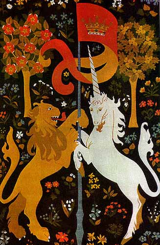
FIGURE XXIV
(détail de la tapisserie de Cluny)fait représenter à la figure XII de son recueil Alchimie, p. 73. Selon une théorie qui ne doit rien à l'hermétisme, le monde matériel et le monde spirituel se sont unis dans cet animal fabuleux. Cette symbolique rejoint pourtant l'hermaphrodite de l'hermétisme et il n'en faut pas plus pour que certains aient vu dans ces tapisseries une représentation du Grand Oeuvre des alchimistes. Là encore, il serait abusif de faire de cette tapisserie un texte en images à l'instar du Mutus Liber. Mais la richesse conceptuelle de l'alchimie est telle que, pourvu que le ferment d'une oeuvre s'y prête, on peut par le truchement d'images eidétiques, se servir de pré - textes, d'amorces en quelque sorte, pour un développement hermétique. Ce n'est d'ailleurs pas dans un sens différent que nous avons entamé cette section et le lecteur sait que, tout en restant dans le droit fil d'un discours qui se veut simple et scientifique, nous n'avons pas cessé d'exploiter les vertus esthétiques des images lapidaires de Fontenay, vues dans une optique délibérément alchimique, du seul ressort de l'Art sacré.
C'est la figure XXIV qui exprime le mieux la richesse du symbolisme combiné du lion et de la licorne. Les deux animaux sont disposés dans un face à face de combat. Le lion rouge est emblématique de l'esprit lumineux, c'est-à-dire du Mercure porteur du Soufre en puissance et le mât avec son drapeau figure la conjonction dont le Rosaire des Philosophes nous a montré plusieurs versions. Voyez la section du Mutus Liber. Si nous revenons à la figure XXIII, on voit le parallèle avec la figure XXIV. Le lion est à l'image de la chèvre et les deux animaux, du moins la chèvre, sont représentés dans une attitude combative.Nous aurions d'autres choses à dire sur la tour Rivalland, notamment sur deux mandalas, disposés à la face nord, avec des symboles maçonniques rappelant que Gustave Rivalland était franc-maçon. Mais ces symboles ont, finalement, peu à voir avec l'alchimie qui est la nôtre et, si ces emblèmes avaient à l'origine un sens hermétique profond, leur pouvoir symbolique s'est en quelque sorte dissipé et, c'est plus à la vue qu'à l'esprit, à proprement parler, qu'ils s'adressent.
Il reste à parler de la disposition de la tour elle-même, octogonale, qui n'est pas sans rappeler le rhombe tel qu'il se présente dans les cristallisations qui fascinent l'esprit et que l'on appelait autrefois, pierres gemmes. L'octogone est une figure prismatique à huit faces qui, en trois dimensions se nomme octaèdre. Parmi les octaèdres, nous trouvons le rubis spinelle, la topaze d'orient, la topaze de Saxe. Si nous établissons un carré pour base et que nous élevions sur chaque face un triangle, nous aurons un pentaèdre, en forme de pyramide, dont la base est carrée et les quatre autres faces triangulaires : deux pentaèdres de cette espèce, joints base à base vont former un octaèdre régulier, réplique en 3D de l'octogone en 2D. Notez pour mémoire, enfin, que le Mercure commun se dépose en octaèdre avant de prendre une forme cubique en passant par une forme cubo-octaédrique. C'est très certainement cette curieuse particularité qui a fait désigner la pierre cubique à pointe comme l'un des emblèmes clefs de la franc-maçonnerie.
Il y aurait lieu, à cet égard, de rapprocher les franc-maçons de l'envergure de Gustave Rivalland des moines architecte-bâtisseurs, qui furent parmi les premiers maîtres d'oeuvres des ouvrages les plus grandioses de l'Occident, détenteurs avec leurs compagnons, des secrets des constructions. Le franc-maçon tient, lui aussi, comme le moine-bâtisseur, un compas. L'une des pointes repose sur une cathédrale, symbole de la quintessence parfaite des arts multiples qui ont permis cette élévation tant spirituelle que matérielle. Ce vaisseau grandiose, livre de pierre pour les croyants, enseignement hermétique de première main pour les alchimistes, se laisse lire du plus humble au plus fortuné, du plus simple au plus lettré, chacun y trouvant sa vérité. L'autre pointe du compas repose sur un livre fermé, conservant le secret du savoir-faire des bâtisseurs et des sculpteurs. Le livre repose sur une pierre cubique représentant la pierre angulaire où est tracé un triangle symbole de la voie divine dont le nom n'est pas prononcé par ceux, qui, comme Fulcanelli et E. Canseliet, avaient fait voeu de silence, scandant par là, à jamais, les deux premières lettres des mots stannum et stibium [st signifie chut ! en latin].4)- les symboles maçonniques [façade EST]
Il n'est pas question ici de se livrer à une exégèse sur la franc-maçonnerie ou sur l'ordre des Templiers. L'ampleur du sujet veut néanmoins que l'on fasse quelques rappels qui iront en droite ligne vers nos symboles. Les premiers franc-maçons se manifestent d'abord à Londres en 1717 ; peu à peu, ils vont prendre une prodigieuse extension et feront connaître leur programme doctrinal dont le XVIIIe siècle verra la réalisation. On a cherché son origine dans la tradition du gnosticisme, qui a traversé tout le Moyen Âge ; il semble que cette société se soit manifestée, en son origine, par l'hérésie manichéenne des Albigeois, avant qu'elle finisse par s'emparer du puissant ordre du Temple. On a prouvé que les procès-verbaux des instructions dirigées contre les Templiers, avaient montré des pratiques et des doctrines dont l'identité avec les rites et les enseignements des hauts grades du XVIIIe siècle est frappante. Sous ce rapport, Barruel et Deschamps ont regardé les Manichéens et les Templiers comme les ancêtres des francs-maçons modernes. C'est vers 1750 que la pratique des hauts grades s'est propagée en France, en Allemagne et il paraît que l'on a fabriqué à cette époque quantité de faux documents pour accréditer l'origine antique de ces nouveaux systèmes maçonniques. Or, les fondateurs de ces grades pouvaient en avoir puisé les éléments dans les divers procès des Templiers, qu'avait fait connaître l'ouvrage de Dupuy, publié en 1654 [Traité concernant l'histoire de France sçavoir la condamnation des Templiers...par Pierre du Puy, Paris, chez Mathieu Dupuys, libraire, 1654, in-4°]. Quoi qu'il en soit, la nouvelle institution fit de rapides progrès et en 1723, il y avait à Londres 20 loges. Cet essor s'explique par les idées qu'elles propageaient, basées sur les principes du déisme et de la religion naturelle, c'est-à-dire la négation de toute révélation et l'indépendance morale vis-à-vis du dogme religieux, ce dernier principe étant absolument fondamental et nouveau.
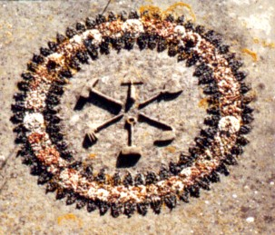
FIGURE XXV
(mandala maçonnique, Rivalland VI)En somme, la loge est ouverte aux hommes de toutes les religions, parce que la morale qu'elle enseigne [qui correspond au code de conduite de l'honnête homme] est supérieure à toutes et permet d'en réaliser la vertu sans s'embarrasser de leurs prescriptions. On voit un livre publié pour révéler ces idées, en 1720, par un Philalethes Junior qui n'a sans doute aucun rapport avec notre Philalèthe [encore qu'il y ait eu deux Philalèthe alchimistes : Erénée et Eugénius]. Ce sont avant tout des idées de tolérance, d'ouverture d'esprit et de discipline morale personnelles qui sont prônées par la confrérie naissante et d'où le dogmatisme semble absent. On a reproché aux Philosophes d'avoir une doctrine double, l'une qu'ils accommodaient aux dogmes vulgairement reçues, et l'autre, de nature ésotérique, qu'ils pratiquaient entre eux. C'est là qu'il faut chercher leur intérêt pour l'alchimie et ses symboles. Loin, comme on l'a dit, de vouloir nier la Trinité et la Révélation, les deux vérités fondamentales du Christianisme, les premiers francs-maçons les ont au contraire, par l'allégorie alchimique, portées en gloire, magnifiées. Qu'après il y ait eu des dérives, qu'ils aient perdu la trace de cet Esprit primitif, ce sont là choses que nous n'avons pas reçu licence de juger. Mais on ne peut nier qu'une certaine forme de panthéisme se soit glissée dans leurs doctrines, et sans doute même à leur insu. Mais poursuivons. Les frères de la rose-Croix, qu'E. Canseliet, par cabale, appellent la Rosée-Cuite, se présentaient comme possesseurs, dit Claudio Jannet, de merveilleux secrets destinés à prolonger la vie et à transmuter les métaux. On a soutenu que les Rose-Croix n'avaient été qu'une grande mystification, car on ne put se saisir, au moins à Paris, d'aucun affilié. Il en serait donc des Rose-Croix comme de cette confrérie au langage hiéroglyphique dont Beroalde de Verville parle dans la préface de sa traduction du Songe de Poliphile du dominicain Francesso Colonna. Valentin Andrea, leur fondateur, chercha à accréditer cette opinion dans un petit livre publié en 1612, les Chymicae nuptiae où, pour donner le change, il aurait représenté tout les confréries de ce genre comme de pures allégories. Gracet d'Orsset a cru pouvoir trouver la trace d'une de ces Tourbes se servant d'un langage hiéroglyphique dans les livres à figures du XVIe siècle ; le fameux abbé Trithémius était l'auteur d'un traité Steganographia vindicata où il assure que ses écritures servent à transmettre de grands secrets et donnent une grande puissance, mais sans aucun art magique. Il faudrait peut-être rattacher aux Rose-Croix la société secrète fondée en Italie par le romain Joseph-François Borri [1617-1685] qui, à des vues mystiques sur le culte des anges, mêlait les pratiques de l'alchimie. En Angleterre où le protestantisme avait de longue date ébranlé la foi catholique, le terrain était mieux préparé pour garantir l'implantation des doctrines rosicruciennes. Le principal adepte fut le grand médecin et alchimiste Robert Fludd [1574-1637] plus connu sous le nom latinisé d'A. Fluctibus. Il est pour le moins singulier de voir qu'en 1616, Michel Maier, l'auteur de l'Atalanta fugiens, mais aussi de la Themis aurea, dire que la fraternité des Rose-Croix devait demeurer cachée pendant cent ans, jusqu'en 1717, date séculaire qui a vu la société des franc-maçons s'affirmer alors par un acte public et commencer d'avoir le développement qu'on lui connait...Claudio Jannet, auteur d'un livre sur les Précurseurs de la Franc-maçonnerie [Victor Palmé, 1887], et à qui nous avons emprunté, en les adoptant à notre propos ces notes, signale encore ceci.
Il met en lumière qu'un précurseur de la maçonnerie au XVIIe siècle, un personnage dont le nom véritable est inconnu, parcourait la France, l'Angleterre, la Hollande, l'Amérique, sans jamais s'établir nulle part. Ce personnage se faisait appeler Eyrenée Philalèthe et se présentait sous des déguisements trompeurs, en parlant d'une nouvelle religion humanitaire, qui devait s'établir prochainement et comprendre toutes les nations. Lenglet-Dufresnoy écrit ceci à son sujet :"Il paraît par ses écrits, que cet adepte avait une forte inclination pour le peuple Juif : son zèle ne les regarde pas moins que les chrétiens : c'est une affection de tendresse par laquelle il se déclare en plusieurs endroits de ses ouvrages ; un sage rabbin ne leur en témoignerait pas davantage". [Histoire de la Philosophie hermétique, 3 vol., in-12°, Paris, 1742]
Jannet ajoute qu'il fit des disciples jusqu'en Amérique. Comme les Rose-Croix, comme un certain Svendivogius, d'origine anabaptiste, qui était en grandes relations avec eux (mort en 1646, en Pologne), et un Anglais qui se faisait appeler le Cosmopolite [en fait écossais] et lui est antérieur de peu d'années, le Philalèthe faisait sa propagande sous le prétexte, poursuit Jannet, de communiquer l'art de transmuter les métaux. Jannet en vient même à dire [décidément, il n'aimait pas beaucoup les franc-maçons] que les mots de Philalèthe, de Philadelphe, de Cosmopolite étaient depuis longtemps des mots de passe et de reconnaissance.
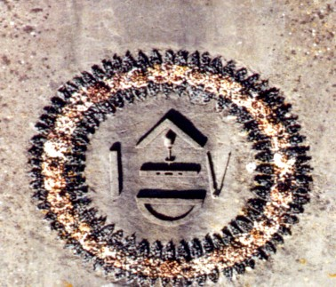
FIGURE XXVI
(mandala maçonnique, Rivalland VII)On ne pouvait pas mieux planter le décors pour illustrer l'interprétation des symboles réunis dans une sorte de mandala, à la figure XXV. Ce sont les outils du maçon qui sont exposés, le maillet, le levier et le ciseau :
a)- Le maillet, du latin malleus qui veut dire malléable, serait par cabale assimilable à l'eau des philosophes, c'est-à-dire la forme fluente et visqueuse de leur Mercure, ou comme l'appellent les alchimistes dans cet état, leur « vinaigre très aigre ». Le maillet est indissociable du ciseau qui représente le discernement. Il indique ainsi la volonté qui exécute ; il est donc l'insigne de commandement que l'on brandit de la main droite, montrant par là son symbolisme de l'énergie agissante lié à la détermination morale dont s'ensuit la réalisation pratique. Le Mercure, s'il est le fidèle serviteur de l'Artiste, n'est pas moins le maître du jeu lorsqu'il a été animé. C'est là où de nombreux « labourants », peut-être trop pressés, ont brûlé leurs fleurs et volatilisés précocement l'Esprit. Leur maillet est devenu incontrôlé, un « Marteau sans maître » en quelque sorte.
b)- Le ciseau, nous l'avons vu ailleurs, se dit caelum, homonyme spirituel du Ciel. Et le Ciel des Adeptes n'est autre que leur Soufre sublimé dans le Mercure. Philalèthe lui a consacré un chapitre : l'Air des Sages [Introïtus, VI]. En grec, ce ciseau se dit glujanoV, dont on peut rapprocher glujiV, flèche, dont nous avons vu par l'examen du Sagittaire, que son sens est superposable à celui donné par le Ciel : ne voit-on pas une flèche dirigée vers le ciel, vers une étoile, à la figure XIII ? Cette combinaison n'a-t-elle pas valeur de Soufre ? Mais le ciseau à bâtir trouve encore son équivalence, dans le monde des Templiers, avec le glaive de la Justice. Le glaive est, en effet, cet agent par lequel la pierre brute, celle dont nous avons donné ici le nom vulgaire, doit être équarrie. Le ciseau symbolise le principe cosmique actif [caelum]. C'est l'activité mâle qui pénètre et modifie le principe passif féminin, ce qui est une variation sur le thème du Sagittaire qui exprime, précisément, cette modification. Il symbolise l'éclair (comme le maillet le tonnerre). Il est le rayon intellectuel qui pénètre l'individualité [c'est-à-dire le pneuma qui domine le Noûs] Il symbolise le pouvoir de séparation [de discrimination philosophique, dans le sens de la Justice : il est bien connu que si le poids de l'oeuvre est connu, le poids de nature, lui, échappe à l'Artiste], mais il est « agi » par le maillet. Ceci indique que la connaissance est antérieure à l'action [que la sublimation précède l'accrétion].
c)- Quant au levier, il aurait un rapport avec le feu parce que « lever » a le sens de découvrir, d'obliger à se manifester. C'est ce qu'assure un ouvrage consacré à la symbolique maçonnique [Jérôme Pacce : Les secrets maçonniques, De Vecchi poche]. Mais l'auteur a-t-il jamais ouvert un traité d'alchimie ? La signification hermétique du levier va dans le sens d'une action de déplacer pour extirper, c'est-à-dire d'ouvrir les métaux pour en extraire leur humide radical. Certes nous dira-t-on, mais c'est une opération qui se fait avec le Feu des Sages. Nous en sommes d'accord, mais le symbole trouve là toute sa traduction exotérique. Son symbolisme est du même ordre que celui du ciseau. Il est principe actif qui met en mouvement la matière inerte [les métaux morts].
Sur la figure XXVI, d'autres emblèmes se profilent :
d)- le niveau, du latin libella, renvoie à libra qui signifie balance. Le niveau est appelé par les Maçons l'équerre juste. Il paraît qu'il s'agit du Sel des philosophes. Mais, on n'a pas vu que le niveau
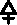
composé d'un triangle de bois dont tombe, du sommet, un fil à plomb, divisant en deux parties égales la base du dit triangle, reproduisait le signe du Soufre. Plus : du grec staqmion, on peut le rapprocher par cabale, de staqmoV, qui a le sens de « lieu où l'on se couche » ou d'étable ou encore de balance, ce qui est déjà beaucoup plus satisfaisant pour l'esprit. En ce sens, mais nullement perçu ainsi par le vulgaire, le niveau du Maçon désigne le sel d'étable [les mauvais cabalistes se jetteraient dessus pour en faire le sel de table, mais nous savons que le chlorure de sodium n'est guère opérant dans l'oeuvre, sauf à en faire du natron ou du Sel admirable de Glauber]. Son symbolisme se rattache ainsi à la croix et à l'épanouissement harmonieux au plan cosmique. Le passage de la perpendiculaire au niveau (passage de l'apprenti au compagnon) représente cet état et indique la connaissance de l'activité céleste. Oswald Wirth indique à ce propos la parenté entre le niveau et le Soufre, ce qui ferait du fil à plomb le symbole du Mercure. Cette dernière interprétation reçoit notre assentiment.e)- L'équerre : elle serait le Soufre des Philosophes. Mais le gnwmwn [équerre] a un sens plus complexe. L'alchimiste sait qu'il doit prendre des mesures qui ont trait à la proportion des éléments qu'il doit conjoindre : que la solution soit trop étendue, qu'il se forme au contraire une pellicule, l'affaire est alors gâchée. Mais l'équerre, c'est aussi l'aiguille d'un cadran solaire. C'est, précisément, le cadran solaire du Palais Holyrood qui constitue le dernier grand chapitre des DM, celui où Fulcanelli, jouant de virtuosité, mêle le cadran aux gnomes, proclamés « génies souterrains préposés à la garde de trésors minéraux », et l'icosaèdre, « ce cristal inconnu, sel de sapience, feu incarné. » C'est dans ce chapitre que Fulcanelli parle du vrai Cosmopolite qu'on a, hélas, tant de fois confondu avec Michael Sendivogius. C'est dans le même chapitre que, brûlant de ses dernières braises, l'esprit de l'Adepte nous invite à méditer sur le texte de la Table d'Emeraude, poussant au sublime en disant que la Tabula Smaragdina serait un « discours prononcé par le mercure des sages sur la manière dont s'élabore l'Oeuvre philosophal. ». L'équerre sert aussi à mesurer la terre [chez les chinois la terre était supposée carrée]. Elle est l'un des attributs du sorcier. Elle a la forme de la lettre G en grec (G). De ce point de vue, elle peut symboliser la Terre ou Materia prima utile pour le Grand Oeuvre, la lettre G, chère à Fulcanelli, se trouvant effectivement au centre de l'Etoile flamboyante. En maçonnerie elle est suspendu au cordon du Vénérable et signifie que le chef de loge doit faire respecter les statuts de l'Ordre et ne peut agir que pour le bien. Quatre équerres mises ensembles en croix forment la svastika, symbole de l'étoile polaire.
f)- la règle : on a voulu y voir l'Or des Philosophes. Mais c'est d'abord la tige du caducée d'Hermès, symbole complexe que nous avons examiné dans la section de l'Olympe hermétique. Cette règle a donc la valeur d'axe et la vertu du Soufre. On y a vu aussi le fléau de la balance, et la balance elle-même. Autant dire la Justice. Mais on peut y voir le bras de Zeus puisqu'un fléau, c'est aussi l'instrument des vengeances célestes. Et aussi comme une autre figuration de l'Air des Sages, c'est-à-dire du milieu, zugon, qui sert à joindre nos deux objets hermétiques. C'est une image du joug, du lien qui est exprimée par la règle des Maçons et qui implique aussi une idée de parité. Il faudrait évoquer le joug romain, autre possible allégorie de notre Mercure commun.
g)- le compas : c'est le symbole qui apparaît en bas, en forme de courbe. Cette figure maçonnique permet à la fois de donner un sens au fixe et au volatil. Le point sur lequel on fait reposer la branche fixe dessine le symbole du sel fixe et le centre de la figure du Soufre solaire. L'autre branche dessine le cercle dont la circonférence, virtuellement, est sans fin ; à cet égard on pourrait prendre l'exemple de la supra-conductivité dans un matériau n'opposant aucune résistance et qui ressemblerait à un tore. C'est l'équivalent du serpent Ouroboros de la Chrysopée et il a évidemment valeur mercurielle. Mais c'est un Mercure contenu, assagi, qui décrit son orbite autour du soleil. On retrouve la dualité du compas dans le symbole du niveau et en grec, les deux mots sont homonymes : diabhthV. La pointe fixe du compas et le fil à plomb sont identiques. Et pourtant, ils sont différents dans le sens hermétique. Le compas « est agi » alors que le fil à plomb s'oriente de lui-même, comme tout corps grave, vers le centre de la Terre. Il « agit », en quelque sorte. Le compas correspond en ce sens au patient tandis que le fil à plomb est l'agent. L'un et l'autre sont perpendiculaires au plan mais le compas sert à tracer le cercle, ce qui lui donne une connotation mercurielle tandis que le fil à plomb manifeste plutôt, par l'action de la pesanteur, le sens d'une flèche. Au lieu, comme le ciseau, d'être orientée ver le Ciel [caelum], elle est orientée vers la Terre. Et tant que nous en sommes au fil à plomb, c'est le lieu d'ajouter que Saturne était primitivement une divinité agraire et comptait parmi ses attributions la mesure des terres : le compas lui est donc associé. Et comme Saturne est le dieu du temps, boiteux, triste et taciturne, le compas est devenu le symbole de la mélancolie.
D'autres symboles attendent d'être décryptés par des artisans. Car Gustave Rivalland, franc-maçon, fut aussi, comme architecte, maçon suprême. Lui aussi a poussé très haut le symbolisme qu'il désirait infuser à sa tour. A son sommet, nous observons un curieux appareil où d'aucuns voient comme une lanterne [il s'agit en fait d'une cage de Faraday]. Mais il s'agit d'un paratonnerre ou d'une sorte de « fulgurateur ». Nous n'insisterons pas sur la foudre de Zeus, cristallisation de l'Air et du Feu, où l'occulte devient brusquement manifeste. C'est au sommet des montagnes, ne l'oublions pas, sphère de la violette, que les alchimistes ont placé le lieu de la Conjonction hermétique. Enfin, c'est le lieu où l'on trouve l'Or philosophique, celui en somme, où les Quatre Éléments se donnent rendez-vous pour que la lumière sorte des ténèbres, en une quintessence éthérée.
Le Château de Coulonges est très lié à l'histoire de la famille d'Estissac qui le fit construire et y vécut. Il est aussi, pour des raisons que nous allons exposer bientôt, très lié au château de Terre-Neuve.
En 1471, le premier château de la famille d'Estissac fut abattu sur ordre du Roi Louis XI. Lorsque Charles de France meurt en 1742, le pardon royal est accordé à Jean d'Estissac. Il reçoit donc l'autorisation de reconstruire son château. L'histoire, encore assez floue à cette époque ne nous permet pas de dire avec certitude comment la famille d'Estissac arriva à Coulonges. Il n'empêche que l'on trouve un certain Amaury d'Estissac, Seigneur de Coulonges en 1443. Originaire du Périgord, Amaury d'Estissac et sa famille décident de fixer leur destin en Poitou. Son fils Jean d'Estissac, ayant repris le flambeau après la mort de son père, figure parmi les favoris de Charles de France, frère du roi Louis XI. Il avait sans doute été placé là par le roi pour surveiller son frère, Duc de Guyenne.
La reconstruction ne commença qu'en 1542 sous les ordres de Geoffroy d'Estissac et son neveu Louis pour finir vers 1556 ou 1558. C'est pour cela qu'il sera reconstruit selon des inspirations de type Renaissance. A l'époque de sa grandeur, le château offrait une cour d'honneur, carrée, formés par la façade principale de plus de 30 mètres, et par les ailes droite et gauche qui atteignaient 40 mètres de long. A l'évidence, l'idée de ce château, l'impulsion première furent données par Geoffroy d'Estissac. Il apparaît certain que les plans du château ont été dressés par Lienart de la Réau, grand artiste à qui l'on est redevable d'oeuvres magnifiques.Octave de Rochebrune, en 1866, fit démanteler et transporter les principaux éléments ornementaux du château, les caissons des plafonds, les voûtes de la lanterne du grand escalier, le porche d'entrée du grand vestibule, l'escalier d'honneur ainsi que la cheminée, dite alchimique, au château de Terre Neuve à Fontenay-Le-Comte. Le château de Terre-Neuve apparaît à beaucoup comme le plus beau château de Vendée. Il fut élevé entre 1515 et 1600 par l'architecte Jean Morisson pour son ami Nicolas Rapin.

FIGURE XXVII
(panneau central de la cheminée, château de Terre-Neuve)
Nous avons examiné en détail la cheminée alchimique dans d'autres sections auxquelles le lecteur voudra bien se reporter, en particulier [Principes - Du Chaos des Sages - St Grégoire-sur-Vièvre - ]. Un détail, pourtant, va à nouveau attiré notre attention. C'est le monogramme de l'écusson central et son chiffre mystérieux. Remarquez que tout ce que nous avons dit, touchant les arcanes de la fontaine des Quatre Tias et de la tour Rivalland vont être remployés et replacés dans leur contexte, au vu du passage suivant, extrait des DM, I. Il nous faut citer absolument ce passage de Fulcanelli :
Il nous reste à disséquer l'écusson central, que nous avons vu être porté par la tête humaine (et placé conséquemment sous sa dépendance), image du mercure philosophique, dominant les divers motifs du panneau. Ce rapport entre le masque et l'écuNous avons tenu à citer tout le passage touchant à l'écusson central car il donne la clef de la préparation du Mercure, sous des traits de cabale un peu lourds, il est vrai. voici nos notes, se rapportant à cet extrait :
montre assez le rôle essentiel de la matière Hermétique dans l'exposé cabalistique de ces singulières armoiries. Ces caractères mystérieux expriment, en raccourci, tout le labeur philosophal, non plus à l'aide de formes empruntées à la flore ou à la faune, mais par des figures de notation graphique. Ce paradigme constitue ainsi une véritable formule alchimique. Relevons d'abord trois étoiles, caractéristiques des trois degrés de l'Oeuvre ou, si l'on préfère, des trois états successifs d'une même substance1. Le premier de ces astérisques, isolé vers le tiers inférieur de l'écusson, désigne notre Premier mercure, ou cette eau vive dont les deux gnomes stéphanophores nous ont enseigné la composition2. Par la solution de l'or Philosophique, que rien n'indique ici ni ailleurs, on obtient le mercure philosophique, composé du fixe et du volatil, non encore radicalement unis, mais susceptibles de coagulation. Ce mercure second est exprimé par les deux V entrelacés de la pointe, signe alchimique connu de l'alambic. Notre mercure est, nous le savons, l'alambic des sages,dont la cucurbite et le chapiteau représentent les deux éléments spiritualisés et assemblés3. C'est avec le mercure philosophique seul que les sages entreprennent ce long travail, fait d'opérations nombreuses, qu'ils ont appelé coction ou maturation. Notre composé, soumis à l'action lente et continue du feu, distille, se condense, s'élève, s'abaisse, se boursoufle, devient pâteux, se contracte, diminue de volume et, agent de ses propres cohobations, acquiert peu à peu une consistance solide4. Ainsi élevé d'un degré, ce mercure, devenu fixe par l'accoutumance au feu, a de nouveau besoin d'être dissous par l'eau première, cachée ici sous le signe I, suivi de la lettre M, c'est-à-dire Esprit de la Magnésie, autre nom du dissolvant5. Dans la notation alchimique, toute barre ou trait, quelle que soit sa direction, est la signature graphique
conventionnelle de l'esprit, ce qui mérite d'être retenu si l'on veut découvrir quel corps se dissimule sous l'épithète d'or Philosophique, père du mercure et soleil de l'oeuvre. La majuscule M sert à identifier notre Magnésie dont elle est, d'ailleurs, la lettre initiale. Cette seconde liquéfaction du corps coagulé a pour objet de l'augmenter et de le fortifier, en l'alimentant du lait mercuriel auquel il doit l'être, la vie, le pouvoir végétatif. Il redevient une deuxième fois volatil, mais pour reprendre, au contact du feu la consistance sèche et dure qu'il avait précédemment acquise6. Et nous arrivons ainsi au sommet de la hampe du caractère bizarre dont l'aspect rappelle le chiffre 4, mais qui figure, en réalité, la voie, le chemin qu'il nous faut suivre. Parvenu à ce point, une troisième solution, semblable aux deux premières, nous amène, toujours par le droit chemin du régime, à la voie linéaire
du feu, à l'astre second, sceau de la matière parfaite et coagulée qu'il suffira de cuire en continuant les degrés requis sans jamais s'écarter de cette voie linéaire que termine la barre de l'esprit, feu ou soufre incombustible7. Tel est le signe, ardemment désiré, de la pierre ou médecine du premier ordre. Quant au rameau fleuri d'une étoile, situé en hors d'oeuvre, il démontre que, par réitération de la même technique, la pierre se peut multiplier en quantité et en qualité, grâce à la fécondité exceptionnelle qu'elle a reçue de la nature et de l'art8. Or, comme sa fertilité exubérante provient de l'eau primitive et céleste, laquelle donne au soufre métallique l'activité et le mouvement, en échange de sa vertu coagulatrice, on comprend que la pierre ne diffère du mercure philosophique qu'en perfection et non en substance. Les sages ont donc raison d'enseigner que « la pierre des philosophes, ou notre mercure, et la pierre philosophale sont une seule et même chose, d'une seule et même espèce », quoique l'une soit plus mûre et plus excellente que l'autre.[...]9Fulcanelli, DM, I, pp.392-3951. Les trois états de la matière sont symbolisés par les couleurs noire, blanche et rouge. Cette matière est symbolisée aussi par des animaux tels que le dragon écailleux, le lion vert et le lion rouge, en respectant l'ordre chronologique de l'oeuvre. La substance est unique puisque c'est par la voie du Sel que l'on y arrive. Voyez ce que nous en disons, touchant : a)- la goule de gauche, figure VIII, nature saline ; b)- la fleur de gauche, figure XIV ; c)- la rosace de gauche, figure XVII ;
2. Cette eau vive n'est autre que celle qui résulte de la liquéfaction des métaux, symbolisés par les quatre Tias de la fontaine, ou encore par les sept ruisseaux, en cela plus conformes à la doctrine, de la fontaine des Amoureux de science, de Jean de Meung. Mais n'importe qui est à même d'obtenir cette eau vive, qui n'est pas même l'eau vive prime de Limojon. En dehors d'un tiers-agent, il ne faudra pas attendre d'évolution des natures vers un état supérieur ;
3. C'est du Mercure animé qu'il s'agit : superposition du Mercure commun [dont nous avons donné le nom vulgaire, comme le lecteur le vérifiera en lisant la note 1 et en se référant aux trois figures] et du soufre rouge, c'est-à-dire de l'or Philosophique. Quant à l'alambic de sages, c'est du vase de nature qu'il s'agit, c'est-à-dire un verre ;
4. Il est bien évident que toutes ces opérations ne peuvent pas physiquement se réaliser, sauf l'une qui consiste à solubiliser et à coaguler, c'est-à-dire à sublimer par la voie liquide, ou plutôt par la voie filante et visqueuse, car tout ce que rapporte Fulcanelli procède de la voie sèche. Quant au boursouflement de la substance, il se rapporte à l'opération par laquelle on prépare le Soufre blanc à l'état de pureté et le sel dont Canseliet dit qu'il est isotope ou isomère au sel de Seignette, apothicaire à La Rochelle ;
5. Par élevé d'un degré, il faut entendre d'une couronne. Voyez l'emblème de Limojon qui définit les degrés en couronne qu'atteint le Mercure, selon son état et sa consistance. I vaut pour Igne et M pour Magnes [aimant]. Il faut y voir la conjonction entre le Mercure qui est l'Aimant [cf. Pernety et le Cosmopolite] et le Feu secret qui assure à la fois la circulation du véhicule du Soufre et la sublimation du Soufre dans la Mercure. Mais I, c'est aussi la 9ème lettre de l'alphabet et M, la 12ème. C'est-à-dire les signes du Scorpion et du Verseau : signe d'Air pour le Scorpion et signe d'Eau pour le Verseau, en tenant compte du début de l'année traditionnelle. Le Scorpion est le signe de la dissolution du Soufre dans le Mercure : c'est la raison pour laquelle il s'agit d'un signe d'Air. Quant au Verseau, est-il besoin de préciser qu'il symbolise le Mercure ? et de lui apposer l'étiquette d'Eau ignée ?
6. L'interprétation de cette phrase mystérieuse n'est pas aisée. Par barre ou trait écrit, il faut peut-être y voir l'instrument avec lequel on trace, c'est-à-dire la plume et surtout...l'encre. De là à y voir quelque trace d'atrament, il n'y a pas loin. Le Mercure commun, qui existe dans la nature, mais à l'état impur, se fond dans son eau de cristallisation à une température relativement faible puis, dans sa dessiccation, il se boursoufle. C'est la première dissolution et celle-ci est parfaitement vulgaire. La deuxième dissolution à laquelle fait allusion Fulcanelli est entièrement philosophique et aucun alchimiste n'en a parlé en termes clairs ; sauf Tripied, peut-être, dans son Vitriol philosophique [Chamuel, Paris, 1890], l'a-t-il approchée, mais a priori, de manière purement spagyrique. Quant au lait mercuriel, il ne peut s'agir que du Lait de Vierge. Faites le rapprochement entre cette vierge et la licorne : vous trouverez alors facilement le secret du Soufre rouge.
7. Cette voie linéaire, nous en avons dévoilé le sens dans la section du Mercure, pour les expériences de sous fusion et dans la section réincrudation, touchant aux expériences de Réaumur sur la dévitrification.
8. Nous aurions plutôt tendance à y voir un équivalent minéral et métallique de la fleur rouge de la tour Rivalland que l'on aperçoit à la figure XIV.
9. Sur ce dernier point, nous ajouterons qu'il est proprement miraculeux qu'à partir d'un limon boueux ou à partir d'une roche qui peut à peine porte ce nom, feuilletée, écaillée, fragile, on puisse obtenir l'un des corps les plus durs de la nature. Quant au corps le plus dur de la nature, le diamant, il paraît que les étoiles en produisent en leur sein. La mort d'une étoile correspond donc à une libération dans l'univers de gemmes sans prix, perdues pour toujours...V. le portail de Château-Gaillard
Nous remarquons une remarquable porte d'entrée, celle de l'hôtel de la famille Villeneuve-Esciapon, siège au Moyen Âge de la seigneurie de Château-Gaillard close en la ville, et dont la construction actuelle est la seule image du ler Empire à Fontenay.
Le portail d'entrée chargé de sculptures représente à droite Hercule et le lion, à gauche Diane Chasseresse et au centre Laocoon et ses fils étouffés par les serpentsHercule. C'est l'Artiste laborieux, et savant dans l’art chymique ; ce qui a engagé la plupart des Auteurs qui en ont traité, à comparer la préparation de la matière aux travaux d’Hercule, à cause de la difficulté que l’on trouve à y réussir. Pernety nous dit aussi que :
"[Hercule] est aussi le nom que les Alchymistes donnent à leurs esprits métalliques, dissolvans, digérant, sublimant, putréfians et coagulans. Ils regardent les travaux d’Hercule comme le symbole du grand oeuvre, ou des opérations de la pierre philosophale. On peut voir à ce sujet le Traité de Pierre Jean Fabre, Médecin de Montpellier, qui a pour titre : Hercules Piochymicus, imprimé à Toulouse en 1634. Il y explique les travaux d’Hercule, par le rapport qu’ils ont avec les opérations de l’Alchymie, avec tant de vraisemblance, qu’on peut assurer avec lui, que presque toute la Fable n’est qu’un tissu de symboles énigmatiques du grand oeuvre ; ceux qui sont au fait en feront aisément l’application. Anthée, par exemple, ce Géant si redoutable, fils de la Terre, qu’Hercule ne put vaincre tant qu’il toucha la Terre sa mere; mais qui fut suffoqué dès qu’il fut élevé en l’air, représente la terre métallique grossière, et qui ne peut devenir propre à la teinture des métaux, qu’après avoir été sublimée par le mercure ou les
esprits métalliques sublimant représentes par Hercule. Cette terre, après avoir été sublimée, doit mourir ou être étouffée dans les airs, c’est-à-dire, doit changer de figure, de forme et de nature, doit être changée en vapeur aqueuse; et puis retomber pour être putréfiée, et ensuite ressusciter de ses cendres comme le phœnix. Tous les livres des Philosophes le disent, entre autres Clangor Buccinae, p. 482. Celui qui saura convertir notre terre en eau, cette eau en air, cet air en feu, ce feu en terre, possédera le
magistère d’HERMÈS, qui n’est autre que la pierre Philosophale. Mais le plus communément Hercule est le symbole de l’artiste qui emploie le mercure philosophique pour faire tout ce qu’on lui attribue. Voyez les Fables Egypt. et Grecques dévoilées, liv. 5°, où l’on explique tous les travaux d’Hercule." [Dictionnaire]Pour commencer par ses origines, Persée fut fils de Jupiter et de Danaë, fille d'Acrisius. Ce prince ayant épousé Andromède fille de Céphée en eut un fils nommé Electrion. De celui-ci et d'Eurymède, fille de Pelops naquit Alcmène. Jupiter ayant eu commerce avec Alcmène par le moyen d'un déguisement, en eut Hercule. On voit ainsi qu'Hercule, par son ascendance, tient à la fois de l'Air [Zeus] et de la Terre [Persée, à cause du mythe de la Gorgone et de la délivrance de Pégase]. Les parents d'Hercule nous montrent d'abord un échange hermétique de propriétés de substances isomorphes. Voici ce qu'en dit Pernety :
"Alcmene, femme d’Amphitryon, fut trompée par Jupiter, sous la forme de son époux, et avec le secours de Mercure, sous la figure de Sosie ; il en naquit Hercule. Les Alchymistes disent qu’Alcmene représente l’eau métallique, qui est mariée avec l’or des Philosophes, sous le nom d’Amphitryon ; Jupiter qui est le symbole du sotie, se joint à cette eau par l’adresse du Chymiste, ou Sosie ; et de cette union naît Hercule, ou le mercure Philosophique." [Dictionnaire]
Nous ne suivrons pas Pernety lorsqu'il assure qu'Hercule est le Mercure. Du reste, il dit ailleurs qu'Hercule, c'est notre Artiste, en quoi nous serons d'avantage d'accord. L'origine des travaux d'Hercule est la suivante, que nous conte Diodore de Sicile :
"Car on dit que Jupiter étant en la compagnie d'Alcmène voulut que la nuit fut alors trois fois plus longue qu'elle ne l'est ordinairement. On prétend même que ce ne fut point pour satisfaire une passion désordonnée qu'il rechercha Alcmène, comme il aavit recherché toutes les autres femmes ; mais seulement par l'envie qu'il avait d'avoir un fils. Ne voulant point forcer Alcmène, et espérant encore moins de vaincre sa vertu, il eut recours à la ruse : et ayant pris la figure d'Amphytrion, il la trompa sous cette ressemblance. Quand le temps fut arrivé qu'Alcmène devait accoucher, Jupiter attentif à la naissance d'Hercule déclara en présence de tous les Dieux qu'il donnerait le royaume de Perse à un enfant qui devait naître ce jour-là. Junon, pleine de jalousie ayant mis dans son parti sa fille Ilithye, suspendit la naissance d'Hercule, et fit naître Eurysthée avant terme. Jupiter se voyant prévenu par cette adresse ne révoqua point sa parole ; mais il eut soin en même temps de la gloire d'Hercule. Il donna donc à Eurysthée le Royaume, ainsi qu'il l'avait lui-même promis, et lui soumit Hercule ;mais il persuada à Junon de placer ce dernier au rang des Dieux après qu'il aurait accompli douze travaux, tels qu'Eurysthée les ordonnerait. Alcmène étant accouchée et craignant la jalousie de Junon, exposa son enfant dans un champ qui s'appelle encore à présent le champ d'Hercule. Cependant Minerve se promenant avec Junon fut frappée de la beauté de cet enfant, & elle persuada à cette Déesse de lui donner à têter. Hercule ayant serré la mammelle de Junon beaucoup plus fort que son âge ne semblait le permettre, cette Déesse pressée par la douleur jeta l'enfant à terre ; mais Minerve le reporta à sa mère, & lui conseilla de le nourrir. On peut remarquer ici un coup surprenant de la fortune. Une mère qui devait chérir & conserver son propre enfant l'exposa ; & celle qui devait le haïr comme sa maratre, sauva sans le savoir ou donna lieu de sauver celui qui devait naturellement être son plus grand ennemi. Cependant Junon envoya deux dragons pour dévorer cet enfant ; mais lui les ayant pris chacun par le col, les étrangla l'un & l'autre avec ses deux mains. Il avoit d'abord été nommé Alcée ; mais ensuite les Grecs ayant appris cet exploit lui donnérent le nom d'Hercule [Heracleus, gloire de Junon]." [Histoire Universelle, livre quatrième, traduite par l'Abbé Terrasson, 1736]
Déjà, le paradoxe pointe dans cette histoire et on devine que seul, l'hermétisme permettra d'y voir quelque ordre qui semble lui montrer. Le symbolisme de Junon, pièce maîtresse de l'Art, a été exposé dans la section de l'Olympe hermétique.
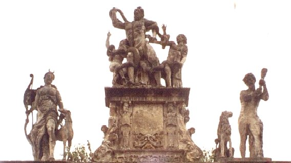
FIGURE XXVIII
(Diane - Laocoon - Hercule)La mère d'Hercule, Alcmène, n'est pas étrangère à l'alchimie. Par la racine Alkh, elle évoque le courage, la force d'âme en un mot, dont l'Artiste devra faire ample provision, pour, au moment opportun, et s'en s'aidant du pouvoir de la licorne, l'infuser dans la Toyson d'or. Quant à Zeus, c'est le maître de l'Air, le symbole suprême de la rosée céleste, seule substance permettant de réaliser l'opération précédente, véritable pluie d'or. Au cours de son enfance, Hercule reçut une éducation de choix, qui devait le conduire à devenir un virtuose de notre Art. Il apprit d'Amphitryon l'art de conduire un char [c'est-à-dire de dominer le feu, d'en mesurer la puissance], la manière de tirer à l'arc [voyez tout le passage consacré à la flèche et au Sagittaire dans cette section], la façon de chanter et de jouer agréablement de la lyre [c'est-à-dire de dompter les éléments furieux, de les fixer]. c'est alors qu'il fut conduit aux exploits que nous allons relater. Nous exposons chaque travail en nous servant du texte e Diodore, puis un commentaire entre crochet en explique le sens exotérique.
[I] - Son premier travail fut de tuer le Lion de Némée. Il était d'une grandeur monstrueuse et comme on ne pouvait le blesser avec le fer, avec l'airain, ni avec des pierres, il fallait nécessairement employer la force des bras pour le dompter. Ce lion ravageait souvent le pays qui est entre Mycènes et Némée auprès d'une montagne appelée le mont Tretos. Au pied de cette montagne, il y avait une grande caverne où ce monstre se retirait ordinairement. Hercule alla un jour l'attaquer ; mais le lion s'enfuit dans sa retraite. Hercule s'y jeta après lui, et en ayant bouché l'entrée, il le combattit corps à corps, et lui serrant le col avec ses deux mains, il l'étrangla. La peau de cet animal qui était fort grande lui servit toujours dans la suite de vêtement, et même de bouclier dans ses combats. [Il est de toute nécessité que l'artiste se procure dès qu'il le pourra les éléments du dissolvant, afin d'en préparer son Mercure commun qui est aussi son Lion vert qui ne le quittera qu'à la toute fin du travail. La caverne indique le lieu où l'on peut en trouver la trace. Le nom du Mont, TrhtoV, indique assez qu'on ne saurait la trouver là où il n'y a point de fissure, de lézarde, de crevasses. Déjà, dans la section des Gardes du corps - la Force -, nous avons vu de quelle manière curieuse il fallait s'y prendre pour extraire le dragon écailleux d'une lézarde d'une tour. Nous n'insisterons pas sur l'airain, ni sur le fer, ni sur les pierres car l'Artiste qui a su élire sa prima materia connaît par définition tout son programme. Notons pour le débutant que l'Airain recouvre le Rebis dans son second état, résultat de l'action de son dissolvant, que le fer est omniprésent dans l'oeuvre, qu'enfin, les pierres servent de condiment au Mercure. Il est bien connu que Rhéa donna une pierre à dévorer à Cronos, à la place de Zeus. Et qu'après le Déluge, Deucalion et Pyrrha assurèrent la réparation du genre humain en jetant des pierres derrière eux, espérant ainsi obtenir la fin de leurs malheurs, par les os de leur Grand-mère ].
[II] - Son second travail fut de tuer l'Hydre de Lerne. Elle avait un seul corps et cent cous, et chacun de ses cous se terminait à une tête de serpent. C'est avec raison que ce Monstre passait pour invincible : Car du cou qu'on lui avait coupé, il renaissait toujours deux autres têtes ; et sa blessure même lui fournissait un double secours. Pour surmonter cette difficulté, Hercule se servit de cette ruse. Il commanda à Iolaüs de brûler avec un flambeau la partie coupée, afin d'arrêter cette reproduction funeste. Étant ainsi venu à bout de cet animal, il trempa des flèches dans son fiel, afin que chaque trait qu'il lancerait contre d'autres monstres leur fit des plaies incurables. [Il y a là une série d'assonances phonétiques qui nous expriment la vraie nature d'IolaoV, compagnon d'Herakles, par la racine io, d'où dérivent ion, ioV surtout, etc. mots sur lesquels nous revenons sans cesse dans nos sections et qui expriment la nature des chaux métalliques, dont les symboles sont : le venin, le rait, le javelot, le suc des abeilles, la rouille du fer, le vert-de-gris - en ayant soin de noter qu'il s'agit là d'un acétate - de la couleur violette ou odorant comme la violette, etc. à rapprocher de iow, couvrir de rouille. Mais enfin, l'Hydre pour parler du monstre, n'avait pas cent têtes comme Diodore le dit mais neuf seulement, dont une seule était immortelle. On peut voir dans cette allégorie la recherche du parfait dissolvant ou le combat de Persée contre Méduse, qui en extrait le cheval volant Pégase. Il faut y voir aussi comme un sombre avertissement, un avertissement du destin fatal d'Herakles, comme on le verra plus loin. D'autres disent que l'hydre n'était qu'un serpent monstrueux à sept têtes. Cette dernière version a notre assentiment car elle permet d'assimiler le serpent au principe mercuriel des métaux ; à charge de l'artiste d'élire le Soufre rouge, symbolisé par l'une des têtes, immortelles, qui lui donnera l'amarante et sera transfiguré, passant de l'état sordide de venin, à celui, céleste, de baume universel. Ayant trouvé le Soufre convenable au travail, l'Artiste doit le mettre en terre et se souvenir que l'alchimie n'est jamais qu'un jeu de terre battue... ].
[III] - Eurysthée commanda à Hercule, en troisième lieu, de lui amener vif le sanglier d'Erymanthe qui paissait dans les campagnes d'Arcadie. Ce commandement paraissait d'une difficile exécution, et pour y satisfaire il fallait prendre son temps avec beaucoup d'adresse. Hercule courait risque d'être dévoré s'il laissait trop de force à l'animal, et de le tuer s'il l'attaquait trop vivement. Cependant il le combattit si à propos qu'il l'apporta tout vif à Eurysthée. Le Roi le voyant porter ce sanglier sur ses épaules fut saisi de frayeur et s'alla cacher sous une cuve d'airain [il s'agit là d'un point de technique, d'un tour de main spécial, qui consiste à ne pas trop déshydrater une substance, la terre adamique, faute de quoi elle ne pourrait pas servir dans la préparation du Mercure commun. D'autres, de faon plus générale, avertissent qu'il ne faut point brûler les fleurs. C'est la raison pour laquelle Eurysthée a commandé à Herakles que le sanglier fût pris vivant. Tous les alchimistes s'accordent aussi en ce que seules les métaux vivants sont utiles à l'oeuvre. Les métaux morts, c'est-à-dire les régules, sont des matières inopérantes. Ce sanglier, par parenthèse, voile Arès, qui culbute Adonis sur l'une des gravures de l'Atalanta fugiens et que pleure Aphrodite. Du sang blanc s'écoule de la blessure mortelle coloré en rouge par les larmes d'Aphrodite. Voyez la coïncidence entre la couleur du sang d'Adonis et celui de la licorne, blessée par traîtrise alors qu'elle est assoupie dans le giron d'une Vierge et vous comprendrez le sens de l'allégorie].
A ce stade, se situe un travail intermédiaire, qui n'est point compté dans les Douze, puisque c'est de son propre mouvement qu'Hercule combat ensuite les Centaures : un Centaure appelé Pholus [fils d'Ixion] avait accordé l'hospitalité à Hercule. Il ouvrit en son honneur un tonneau de vin qu'il tira de terre. On dit que l'ancien Bacchus avait donné ce tonneau à Pholus avec ordre de le conserver jusqu'à la venue d'Hercule. Ce Héros étant donc arrivé dans ce pays après quatre générations, le Centaure se ressouvint de l'ordre de Bacchus. Il perça le tonneau ; et l'odeur excellente qui en sortit causée par la bonté et par l'ancienneté du vin s'étant répandue jusqu'aux prochaines demeures des Centaures, fut pour eux comme un aiguillon qui les incita à s'assembler en fort grand nombre autour de l'habitation de Pholus, et à se jeter avec impétuosité sur cette boisson. Pholus tremblant de peur alla se cacher ; mais Hercule se défendit avec un courage surprenant contre les Centaures qui voulaient à toute force emporter le tonneau. Il fallait qu'il combattît contre des gens que la mère des Dieux avait avantagée de la force et de la vitesse des chevaux, aussi bien que de l'esprit et de l'expérience des hommes. Ces Centaures l'attaquèrent armés, les uns de pins qui avaient encore toutes leurs racines, les autres de grandes pierres ; quelque uns portaient des torches ardentes et le reste avait des haches propres à tuer des boeufs. Hercule les attendit sans s'émouvoir et avec un courage digne de se premiers exploits. Nephélé mère des Centaures combattait encore contre lui en répandant une grande quantité de pluie qui ne nuisait en rien à ses fils qui avaient quatre pieds ; mais qui faisait glisser Hercule qui ne se soutenait que sur deux. Cependant malgré tous les avantages que ses adversaires avaient sur lui il les battit vigoureusement [...] Il arriva un accident fort particulier à Pholus ami d'Hercule. Comme il était de même famille que les Centaures, il enterrait tous ceux qui avaient été tués. En tirant un trait du corps d'un d'entr'eux il s'en blessa lui-même et sa plaie étant incurable il en mourut. Hercule donna à Pholus sous une montagne voisine de son habitation une sépulture qui lui fut plus honorable que ne l'aurait été une colonne élevée à sa gloire. Car cette montagne ayant été nommée Pholoé conserva fidèlement la mémoire de celui qui y avait été enterré, sans qu'il fut besoin d'aucune inscription. Hercule tua aussi sans le vouloir le Centaure Chiron qui s' 'était rendu fameux dans la Médecine. [Voyez d'abord ce que nous disons des centaures plus haut dans la section. L'examen de l'article Ixion de Pernety permet de lever définitivement le doute sur l'attribution à Jupiter, que les Chaldéens ont donné au Sagittaire :
"Ixion. Était fils de Phlégias; d’Antion, suivant Diodore de Sicile, quelques-uns le nomment AEtion. Il épousa Dia ou Clia, fille d’Eionée ou Deionée, dont il eut Pyrithoüs. II se brouilla avec son père, pour n’avoir pas voulu donner à sa fille ce dont ils étaient convenus. Ixion le fit périr misérablement, et n’ayant pu trouver personne qui voulût l’absoudre de ce crime, et en faire l’expiation, il eut recours à Jupiter. Ce Dieu en eut pitié, le reçut dans le ciel, et lui permit même de manger à la table des Dieux. Ce bienfait
signalé ne servit qu’à en faire un ingrat et un téméraire. Ixion, frappé des charmes de Junon, eut l’insolence de la solliciter à satisfaire sa passion. Cette sévère Déesse offensée d’une telle témérité, en informa Jupiter, qui regarda d’abord cette accusation comme un piège qu’on lui tendait contre Ixion, qui passait pour son fils. Il voulut s’éclaircir par lui-même. Il convint avec Junon qu’elle permettrait à Ixion un entretien particulier avec elle. Pour l’instant du rendez-vous, Jupiter forma avec une nuée un phantôme qui ressemblait parfaitement à Junon. Ixion épris de plus en plus ne put se contenir, et Jupiter vit bien qu’il ne tenait pas à Ixion que le père des Dieux ne reçût l’affront qu’il avait fait à Tyndare et à tant d’autres. Les Centaures prirent naissance de ce phantôme, et Jupiter se contenta pour lors de chasser Ixion de la cour céleste. Mais ce téméraire n’en devint pas plus sage; il osa se vanter d’avoir déshonoré le maître des Dieux, qui pour le punir de son insolence, le précipita d’un coup de foudre dans le Tartare où Mercure eut commission de l’attacher à une roue environnée de serpents, qui devait tourner sans relâche.
Les Philosophes Hermétiques interprètent cette fable des Souffleurs et autres Artistes ignorans, qui veulent entreprendre de faire l’œuvre sans le savoir; et passent tout leur temps à élever des fourneaux et à les abattre, à suer sang et eau dans l’exécution de mille procédés ruineux, au bout desquels ils n’embrassent que de la fumée, qui leur laisse des soties impurs et des cendres inutiles; qui enfin comme Ixion, attachés à une roue laborieuse de travaux fatigans, font et recommencent une infinité d’opérations sans jamais en avoir une heureuse issue. Voyez les Fables Egypt. et Grecques dévoilées, livre 5, chapitre 22."L'interprétation que donne Pernety est prosaïque à souhait. Mais l'important n'est pas là. L'important est qu'Ixion, roi des Lapithes, s'unit avec une émanation de Zeus pour créer les Centaures. Et nous tenons l'explication rationnelle, quoique entièrement tissée de mythe et de cabale, de la maîtrise que Jupiter exerce, depuis lors, sur le Sagittaire. Ixion représente dans cette fable le principe Soufre et cette roue tournant sans relâche est évidemment l'Eau permanente ou Mercure philosophique. Le Tartare figure ce principe Feu inextinguible, oeuvre d'Héphaïstos, et fidèle serviteur de l'Artiste. Mais le Tartare, par cabale, c'est aussi ce sel subtil que l'on peut tirer du tartre des vieux tonneaux, surtout quand ils sont faits de chênes et alors, la légende de Pholus signifie ceci : que le bon Centaure, symbole de la pénétration du soufre dans la Toyson d'or, explique à notre Artiste de quel feu est fait notre dissolvant, pour faire le Soufre. Mais l'interprétation peut encore aller plus loin : nous l'avons détaillée dans la section de l'Olympe hermétique. Jean d'Espagnet savait parfaitement ce que signifiait Ixion :
"La nature use du feu, de même que l'art à son exemple, comme d'un instrument et d'un marteau pour forger leurs ouvrages : donc dans les opérations de l'une et de l'autre, le feu est maître et magistrat. C'est pourquoi la connaissance des feux est par-dessus tout nécessaire à un philosophe, sans quoi, comme un autre Ixion, il tournera en un vain travail la roue de la nature à laquelle il est attaché." [Oeuvre, chap. 92]
On notera encore que joloV, Pholus, est proche de joliV, qui désigne une écaille de reptile ou une écaille de métal, de tournure. Et que Ixion est proche de IxoV, gluant, visqueux, et dans une autre acception, le gui, la plante des Druides qui avait le pouvoir de tout guérir...]
[IV] - Eurysthée ordonna ensuite à Hercule de lui amener la biche aux cornes d'or qui courrait d'une grande vitesse. Il se servit plus de son adresse que de la force pour venir à bout de cette entreprise. Car les uns disent qu'il la prit dans des filets, d'autres qu'il la fit tomber dans un piège, et quelques autres enfin veulent qu'il s'en soit rendu le maître en la forçant à la course. Ce qu'il y a de certain c'est qu'il acheva cet exploit sans courir aucun danger. [Ce ne fut donc qu'un jeu d'enfants. Cette biche avait des pieds d'airain et des cornes d'or. Elle était consacrée à Artémis. Ces pieds d'airain, lourds, la rivaient à la terre et, au vrai, c'est bien le rôle du Mercure que de faire de l'Airain des Sages une Terre salvatrice où Latone puisse accoucher dans la tranquillité, à Délos, des deux natures transfigurées, telles que Gustave Rivalland les a représentées en figures de chèvre et de licorne - figure XXII -. Ici, il s'agit de prendre au filet les poissons qui nagent dans la mer hermétique, comme l'enseignent Lambsprinck et D'Espagnet. Pernety [Fables Égyptiennes et Grecques, livre II, chap. 4] nous dit de cette biche qu'elle habitait le mont Ménale. Il n'était pas permis de la chasser aux chiens, ni à l'arc. Il fallait la prendre à la course, en vie, et surtout sans qu'elle perde une goutte de son sang, ce qui atteste qu'à côté de ces traits mercuriels, la part du Soufre est primordiale. Sans doute, cette biche, pourtant rapide, ne filait pas assez vite, si l'on nous comprend bien, pour qu'elle puisse échapper à Hercule. Pernety nous dit, à propos des cornes et des pieds, que c'est ce qu'il faut dans l'Art chymique, où la partie volatile, figurée par la courbe légère de la Biche, est volatile au point qu'il ne faut rien moins qu'une matière fixe comme l'or pour la fixer. Voire ! Ce n'est pas dans cette vue que nous voyons ce côté mercuriel. L'Airain même, dont ses pieds sont faits, attestent déjà de la nature mercurielle et montre que la dissolution a passé. L'Auteur du rosaire, dit encore Pernety, a employé figurativement des expressions qui signifient la même chose, lorsqu'il a dit : «L'argent-vif volatil ne sert à rien, s'il n'est mortifié avec son corps ; ce corps est de la nature du soleil. », ce qui veut dire que le Mercure commun est inopérant s'il n'est conjoint au Soufre afin de former le Mercure animé dont la biche peut être un symbole. Basile Valentin, dans une allégorie sur le Magistère des Sages, s'exprime ainsi : « Un âne ayant été enterré, s'est corrompu et putréfié ;il en est venu un cerf ayant des cornes d'or et de pieds d'airain beaux et blancs ; parce que la chose dont la tête est rouge, les yeux noirs et les pieds blancs, constitue le Magistère.» Cela nous rappelle les couleurs des animaux de la tour Rivalland. Pernety poursuit en disant qu'on a feint avec raison que cette Biche avait des pieds d'airain. De cet airain étaient ces vases antiques que quelques Héros de la fable offrirent à Minerve ; le Trépied dont les Argonautes firent présent à Apollon ;l'instrument au bruit duquel Hercule chassa les oiseaux du lac Stymphale ; la tour dans laquelle Danaë fut renfermée, etc. Tout, selon Pernety, dans cette fable a un rapport immédiat avec Diane. La biche habite un mont voué à la pierre de lune, par mhnh, Lune et laaV, pierre à bâtir. Le fleuve Ladon fut le terme de la course de la Biche, parce qu'après la circulation longue elle se précipite au fond du vase dans l'eau mercurielle, où le volatil et le fixe [dixit Pernety] se réunissent. Voyez aussi les sections Douze portes, de Ripley et les Douze Traités de Sethon.]
[V] - Ensuite, il reçut ordre de chasser les oiseaux du Lac Stymphalide, et il employa encore l'adresse en cette occasion. Il s'était ramassé autour de ce lac une multitude incroyable de ces oiseaux qui ravageaient entièrement les fruits des contrées voisines. Il était impossible d'en exterminer un si grand nombre en les tuant l'un après l'autre. C'est pour cette raison qu'Hercule imagina un tambour d'airain qui faisant un bruit continuel et très grand, les fit tous fuir ; et par cet expédient il en délivra absolument le lac. [Dans ce travail, il s'agit de dissiper progressivement le Mercure, avant que l'Airain, dissous, puisse retrouver un peu de fixité. Cette scène est identique au frontispice du Mutus Liber, où l'ange s'apprête à réveiller le dormeur, c'est-à-dire le Mercure, au bruit de l'airain. Le symbolisme de ce Travail est du même ressort. L'interprétation qu'on en a donné dans la section des Gardes du corps est fautive. En outre, la cabale permet de décomposer le mot StumjalioV en stum [pour stumma, substance astringente, sans doute de l'alun] et jalioV [tacheté de noir et blanc] permettant de montrer que l'on est à cheval sur les régimes de Saturne et de Jupiter. A noter que Diodore ne dit pas que les oiseaux sont abattus à coups de flèches.]
[VI] - Après qu'il eut fini ce labeur, Eurysthée lui ordonna de nettoyer sans l'aide de personne l'Étable d'Augée, où s'était amassé depuis plusieurs années une quantité énorme de fumier. L'insulte était jointe à la peine dans ce commandement d'Eurysthée. Mais Hercule ne voulut pas emporter ce fumier sur ses épaules, afin d'éviter la honte qui pourrait rejaillir sur lui de cette fonction ; et il nettoya cette étable sans ignominie en y faisant passer le fleuve Penée [Pausanias nomme ce fleuve Minyeien. Mais Palmerius prétend que c'est le même et que le surnom de Minyeien fut donné au Penée parce qu'il traversait une contrée habitée par des peuples appelés Minya]. Ce travail ne fut pour lui que l'affaire d'un jour : Et il y donna de plus une grande preuve de sa prudence. Car ne voulant rien faire qui ne fut digne de l'immortalité, il exécuta d'une manière honorable un ordre très humiliant. [Comme les alchimistes auraient été contents du travail réclamé par Eurysthée ; parce qu'ils disent que leur matière se trouve même jusque dans le fumier. Voyez ce que nous en disons dans la section Cosmopolite. Le fleuve dont s'aida Hercule est d'essence mercurielles : PhneioV, aux tourbillons d'argent. Le nom du roi, Augée, exprime aussi à quoi servira le sel d'étable, car Augeus est proche, par assonance, de augeo, qui signifie croître, se développer et qui exprime l'effet du Mercure sur l'airain. C'est là que l'Artiste saura qu'il a franchi la Porte de l'Entrée du Palais du roi, au moment où la lumière se fera dans son esprit - augh, lumière éclatante, proche par cabale de augeaV, Augias. Il s'agissait pour Hercule d'un ordre humiliant mais, nous l'avons dit, il eut honoré l'alchimiste. Il y a là une indication plus importante que veut bien le dire Pernety : « fumier, Feu innaturel, Feu de putréfaction. Toutes ces expressions sont allégoriques, et Philalethe dit qu’elles ne signifient autre chose que la matière des Philosophes poussée au noir. »]
[VII] - Son septième travail fut d'aller chercher en Crète le Taureau dont on dit que Pasiphaé fut amoureuse. Étant passé dans cette île il amena dans le Péloponnèse, du contentement du Roi Minos, ce monstre au sujet duquel il avait traversé une si grande étendue de mer. là, le taureau fut rendu à la liberté et finalement capturé par Thésée aux portes de Marathon. [Il est difficile de trouver une correspondance précise à ce travail. Le taureau est une divinité lunaire, apparenté à Vénus-Aphrodite par les Chaldéens, et qui a rapport avec le Mercure, alors que sa fougue, sa puissance, auraient tendance à en faire un signe du Soufre, du fixe en tout cas. Ce n'est pas faux, mais alors il faut y voir une correspondance plutôt terrestre et, de fait, pour de nombreux peuples turco-tatars, le taureau est l'incarnation des forces chthoniennes : il supporte le poids de la terre, sur son dos ou sur ses cornes. Il faudrait évoquer le mythe de Cybèle, à qui on sacrifiait des taureaux, lors d'une cérémonie appelée le taurobole. Dans nos sections consacrées à la pratique, il est hors de doute que le Taureau ne soit pas en rapport avec l'hiéroglyphe masquant un sel en provenance de cendres. végétales, issues de la terre, par conséquent. Dans la symbolique analytique de Jung, le sacrifice du taureau représenterait le désir d'une vie de l'esprit qui permettrait à l'homme de triompher de ses passions animales primitives et qui, après une cérémonie d'initiation, lui donnerait la paix. Sans le savoir sans doute, Jung a usé d'une cabale élevée : car ce n'est pas d'autre ambition qu'a l'Artiste d'employer son Mercure : en faire un Esprit pourvu de vie, c'est-à-dire porteur du soufre rouge ; puis pratiquer à la sublimation de ce Soufre - la cérémonie d'initiation - et enfin, lui donner la paix, c'est-à-dire réaliser d'un coup la réincrudation du Soufre et la volatilisation de son Mercure. Mais pour être plus sérieux, cette Terre que doit élire notre apprenti est celle dont se revêt, comme symbole, le signe du zodiaque : nous avons vu que, selon nos principes, il s'agit d'un signe de Terre, de valeur comparable à la Vierge ou au Capricorne. Ces trois signes de Terre, nous en avons vu plus haut toute la portée et la signification dans le chapitre consacré à l'oeuf philosophal.]
[VIII] - On ordonna ensuite à Hercule d'amener de Thrace les cavales de Diomède. Elles étaient si furieuses qu'on leur avait donné des mangeoires d'airain et si fortes qu'on était obligé de les lier avec des chaînes de fer. Ce n'était point des fruits de la terre qu'on leur donnait à manger ; mais elles se nourrissaient de membres coupés des malheureux étrangers qui arrivaient dans la Thrace. Hercule voulant prendre ces cavales, se saisit d'abord de leur maître, et il les rendit obéissantes en les rassasiant de la chair de celui qui les avait accoutumées à manger de la chair humaine. Après qu'elles furent amenées à Eurysthée, ce Prince les consacra à Junon. Leur race subsista jusqu'au règne d'Alexandre Roi de Macédoine. C'est à cette époque qu'Hercule accompagna Jason à colchos pour conquérir la Toyson d'Or. Mais ceci est une autre histoire...[Ces cavales furieuses figurent le Mercure indompté en son premier état ; c'est une variation sur les chevaux incontrôlés du char de Phaéton. Faut-il vraiment insister sur les mangeoires d'airain ? Ces chevaux figurent le dissolvant à qui l'on donne l'homme double igné en guise de nourriture et ces chaînes de fer sont à l'image de la ligature que l'on voit à la figure XIV, par laquelle l'oeuf est scellé]
[IX] - Il lui fut ordonné bientôt après d'apporter le baudrier de l'Amazone Hippolyte. Hercule ayant traversé la mer du Pont à qui il donna le nom d'Euxin, et étant arrivé aux embouchures du fleuve Thermodoon, déclara la guerre aux amazones. Il demanda d'abord le baudrier, et ayant été refusé, il livra bataille aux amazones. La première qui l'attaqua fut Aella [tempête] ; la seconde fut Philippis. Ensuite vont Prothoë, puis Eriboe. Toutes chutèrent devant notre héros ; il fit un carnage des autres et détruisit entièrement leur nation. Entre les captives, il choisit Antipe pour en faire présent à Thésée. Pour Menalippe, elle se racheta en donnant à Hercule le baudrier qu'il était venu demander [ce baudrier, ou cette ceinture si l'on préfère, c'est le mors ou le frein dont l'action, double, est de précipiter la coagulation de l'eau mercurielle tout en empêchant la volatilisation précoce de notre précieux fondant. Le baudrier, telamwn, est le bandage du Mercure, celui qu'on aperçoit à la figure XIV. Mais c'est aussi par cabale, Telamôn, le père d'Ajax le Grand. Ajax, héros majeur de la guerre de Troie, alla jusqu'à blesser Hector. Pris de démence, il égorgea des troupeaux, croyant tuer des soldats. Il s'agit là de signes caractéristiques d'une imprégnation mercurielle et nous avons été amenés à penser depuis longtemps que les Grecs, dans la guerre de Troie, en constituaient la part mercurielle, parce qu'Achille est d'essence divine, alors qu'Hector est un humain à part entière. Ovide, s'il était besoin, nous conforterait dans cette vue : il conte, dans ses Métamorphoses, que le sang d'Ajax donna naissance à une fleur, l'hyacinthe, dont les premières lettres, ai, sont celles d'Ajax. Voilà la cabale élémentaire que l'on signale dans les livres de vulgarisation. Telamôn, le père d'Ajax, n'est pas étranger à l'oeuvre : il participe à la chasse du sanglier de Calydon et prend part à l'expédition des Argonautes. Ajax, c'est aussi le cygne qui meurt par ses propres plumes : ne se suicide-t-il pas avec sa propre arme ? Et en donnant naissance ainsi à la terre, dont la fleur constitue la première manifestation ? Nous en trouvons l'écho à la figure XV. Car aia, c'est aussi gaia, la terre. Faisons à présent intervenir la cabale : Ajax est agité, troublé et perd le sens. En grec, l'agitation se dit salh, homonyme de Salh qui renvoie à Samothrace [Samo-qtrax], que l'on peut décomposer en Samos et qtrakh [Thrace], proche de qtrakiaV, pierre de Thrace qu'on disait s'enflammer dans l'eau. Nous retrouvons ainsi l'image du Mercure, dans une variété que nous avons évoquée supra. Mais il est remarquable que la cabale phonétique, appliquée selon les règles de l'art, nous permettent, à partir du nom d'Ajax, d'arriver à la conjonction de la terre de Samos, analogue à la terre de Chio, et du pyrophore de Homberg et de Gay-Lussac]
[X] - Le dixième travail qu'Eurysthée imposa à Hercule, fut d'amener les vaches de Geryon qui paissaient sur les côtes de l'Ibérie. Hercule voyant qu'il ne pouvait exécuter de commandement qu'avec beaucoup de peine et d'appareil, équipa une très belle flotte, et leva des soldats dignes d'une telle entreprise. Le bruit s'était répandu par toute la terre, que Chrysaor [de crusoV, l'or], qui avait été ainsi nommé à cause de ses grandes richesses, régnait alors sur toute l'Ibérie. Il avait trois fils qui combattaient ordinairement avec lui, remarquables par leur force et par leurs exploits : que de plus chacun d'eux commandait de puissantes armées toutes composées de vaillants hommes. Eurysthée croyant que c'était une entreprise insurmontable que de leur faire la guerre, avait donné exprès à Hercule cette commission. Mais ce Héros regarda ce péril avec autant de fermeté qu'il avait regardé les autres. Il marqua le rendez-vous de ses troupes en l'île de Crète ; parce que cette île est avantageusement située par toute la terre. [...] ayant pénétré en Espagne, il alla au devant des enfants de Chrysaor. Hercule les fit appeler en combat singulier, les vainquit et les tua tous trois. Il conquit ensuite toute l'Espagne et il emmena ces fameux troupeaux de vaches qu'il cherchait. Diodore, ici, ne suit pas la légende moderne qu'on a rapportée de ce travail. Diodore parle bien des colonnes d'Hercule mais ne parle pas du fait, qu'accablé de chaleur, le héros menaça le soleil de ses flèches. Quoi qu'il en soit, le Soleil lui prêta un bateau d'or qui lui permit de franchir l'océan et Hercule put tuer Géryon et s'empara du bétail. Il sacrifia les animaux à Héra. [Ce travail est composite ; en ce sens, plus délicat à traiter par l'allégorie. Mais enfin, Géryon tient de la chimère et de Typhon, ce qui nous remet en selle. Géryon régnait sur l'île d'Erythie et possédait des boeufs magnifiques gardés par le berger Eurytion et par Orthros, chien féroce à deux têtes. L'origine hermétique de Géryon ne fait guère de doute puisqu'il est le frère d'Echidna que l'on peut aisément rapprocher d'Echidne, serpent femelle. Géryon [Ghruwn] a les traits du dragon, pris comme Mercure commun. C'est le vieillard de l'oeuvre dont les trois têtes manifestent nos trois principes. L'île sur laquelle il règne, Eruqeia, symbolise le but de l'oeuvre, la direction à suivre, en raison d'une assonance avec eruqainw [rendre rouge, teindre en rouge]. Eurytion [Eurutiwn], vaut pour eu-rutoV, qui signifie « aux eaux abondantes » [cf. notre fontaine], sur lequel il n'y pas lieu de s'épancher. Par la racine euruV, on peut aussi y deviner les vastes espérances, les longs espoirs ou les pensées profondes de l'Artiste, qui est à la peine dans cette phase de l'oeuvre réputée insurmontable où la patience, la prière et la force doivent être de son côté. C'est ce qu'expriment, d'ailleurs, les colonnes qu'Hercule érigea à l'entrée de la Méditerranée. Quant à Orthros [OrqroV qu'on écrit aussi Orqos], il s'agit du frère de Cerbère, né qu'Echidna et de Typhon. Il s'unit avec sa mère et engendra le sphinx de Thèbes. Nous en parlons dans le chapitre se rapportant aux fleurs minérales de la tour Rivalland. Ce chien est très important dans le bestiaire hermétique. On le connaît d'abord comme ayant donné son nom à deux constellations ; celle qui nous intéresse est le Grand chien parce qu'on y voit Sirius, l'étoile plus brillante du ciel. Sa position sidérale est assez exceptionnelle : elle est disposée en forme de carré, entre au nord-est, la Voie lactée, surmontée par la Licorne, côtoyant la Colombe et le Lièvre. Si Sirius marque l'oeil du Chien, la deuxième étoile la plus brillante de cette constellation, bCMa, fut toujours considérée comma annonciatrice de l'étoile du Nil, car elle en précédait le cours dans le ciel. Le Chien se révèle, sous ce rapport, inséparable de l'Aigle. E. Canseliet a consacré un chapitre de ses Deux Logis alchimiques, au chien. La note qui commente la peinture du caisson est importante :
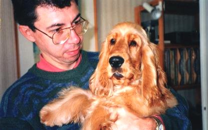
FIGURE XXIX
(Géryon et Orthros - le modèle s'appelle Hatos - fin 1992)"Quand le soleil, avec Sirius, se lève et se couche dans le grand Chien, la chaleur grandit à l'extrême, qui est indispensable à tout mûrissement...l'étudiant se reportera...à ce que dit Calid, au chapitre De la force du feu...-en son Livre des Secrets." [Deux Logis, p. 280]
Faut-il suivre Canseliet quand il fait du Mercure la chienne d'Arménie et du soufre le chien de Corascène ? Nous avons évoqué tout cela à l'Introïtus, VI. Mais le rapprochement paraît irrésistible entre l'étranglement d'Orthros par Hercule et l'origine de notre âme métallique, voilée sous le vocable Khorassan, du grec Korax, tête de corbeau. Serait-il possible que le corail, korallioV, soit le signe qui masque, sous le corbeau, Korax, le soufre rouge de la Roche aux corbeaux [Koraka petra] ? Quoi qu'il en soit, le soleil et Sirius se lèvent ensemble alors que les deux étoiles traversent le signe du Cancer [Écrevisse]. Certes, c'est beaucoup dire, car il faut considérer le zodiaque tropical et non le zodiaque sidéral. Et dire que Sirius se « lève » dans le Cancer est une absurdité totale parce que sa latitude céleste la place, au lever du soleil, disons, vers quatre heures du matin, le 9 juillet, dans le signe du Taureau [on dit sa domitude]. Le signe du Cancer est celui de la pleine Lune, ce qui, en terme hermétique, correspond au 4ème degré de feu. Contrairement à ce que l'on pourrait croire, cela ne signifie pas du tout, hélas, que nous soyons au régimes tardifs de la Grande Coction. Tout laisse croire, au contraire, que nous sommes placés au coeur de la dissolution, c'est-à-dire en pleine nuit, calme et sereine comme il se doit...C'est ce qu'indique le sens de l'étoile Sirius [Seirios asthr]. A cette époque, le Mercure apparaît comme brûlant, ardent : c'est le temps de la canicule scellée. C'est là que l'Artiste doit empoigner solidement son fil d'Ariane, sa corde [seira] de rappel, qui lui permettra de vaincre les obstacles qui vont se succéder : les régimes de Philalèthe et de Cyliani. Nous en parlerons peut-être un jour, en commentant les péripéties d'Ulysse...]
[XI] -Hercule n'eut pas plus tôt fini don dixième travail, qu'Eurysthée lui ordonna de tirer hors des enfers le chien Cerbère. Dès qu'Hercule eut reçu cet ordre qu'il regarda comme glorieux pour lui, il prit le chemin d'Athènes. Là il se fit initier aux mystères d'Eleusine dont Musae fils d'Orphée était chef alors. [...] Hercule étant descendu dans les Enfers, fut reçu de Proserpine comme son frère, et elle lui permit même d'emmener avec lui thésée et Pirithoüs qui y étaient retenus prisonniers. Ayant ensuite lié Cerbère avec des chaînes de fer, il le tira hors des enfers et le fit voir aux hommes. [ce travail est en droite ligne du précédent. Nous sortons de la phase de dissolution et passons par le régime de Jupiter et la blancheur. Fulcanelli et E. Canseliet sont avares de détails sur Cerbère :
"Pluton retient en laisse le chien Cerbère à triple tête, tandis que Neptune, qui montre son trident et porte la rémore au creux de sa main gauche, pinte, en approbation, son index sur Mercure." [Canseliet, alchimie, p. 10]
Penerty nous dit que c'est sous le nom de Cerbère qu'était reconnu par les Adeptes, le sel nitre. KerberoV est donc ce chien d'Hadès, né d'Echidna et de Typhon, lui aussi [à moins que ce ne soit Orthros métamorphosé, ce qui est plus probable] possédait selon les uns trois têtes, selon d'autres X ou cent [L], et avait une voix d'airain. D'abord notons une parenté entre Cerbère et les Ombres cimériennes [Kerberioi] désignant le peuple du Pont, non sans rapport avec le peuple des Enfers. Ce chien monstrueux correspond au mélange du Mercure et des chaux dissoutes. Il possède une queue de dragon et son dos est hérissé de têtes de serpents. Compte tenu que les alchimistes enseignent que la matière soit d'abord lavée dans l'Eau pontique, il faut admettre que ce chien est au sens propre l'Esprit du Mal. C'est un mouvement d'ascension, une sublimation, qui peut arriver à l'extirper de ce milieu infect. Cette sublimation consiste tout uniment en une nutrition, un apport de corps astral dont la qualité est essentiellement la capacité de voler. C'est là ce qui explique les joutes de la salamandre et du rémora dépeintes par De Cyrano Bergerac. On peut aussi comprendre son résultat et son but en regardant un chien vivre tous les jours. Enfin, le fait même de blanchir le laiton signe la nature du corps que nous désirons former. Revoyez ici tout ce qui a été dit ailleurs sur le chêne et considérez l'action combinée de Ploutos et de Perséphone, en relisant la section du Mercure de nature. Voyons à présent en quoi Thésée et Pirithoüs s'intègrent dans cette fable. Il est bien connu que Thésée tue le Minotaure, monstre mi-taureau et mi-homme, dans son sommeil. Ce monstre doit être rapproché du Sagittaire, mi-cheval et mi-homme et Thésée, du héros qui, muni du fil d'Ariane, parvient à sortir du labyrinthe des Régimes, de l'enfer des degrés qui sont comme des notes de musique qui se succèdent sur la gamme calorique. Ce n'est pas pour rien, certainement, que Michel Maier, dans son Atalanta fugiens, a fait annexer une fugue à chacun de ses emblèmes. Car, s'il est facile de parcourir la fugue Rectus, il peut être difficile de la prendre Inversus. Mais songeons que le Thème de l'Oeuvre n'est pas une fugue simple. C'est une fugue à 4 voix comportant 3 sujets et comportant plusieurs entrées. Dans la première entrée, le Sujet est transformé et diminué Rectus et dans la dernière entrée, qui correspond à la sortie du labyrinthe, le sujet est encore transformé et diminué Inversus. Et encore, nous n'avons pas parlé des ornements...Quant à la clef, gageons qu'elle est en Sol. Quant à Pirithoos, son nom est déjà tout un programme. Voici ce qu'en dit Pernety :
"Fils d'Ixion, lia une étroite amitié avec Thésée. Il lui aida à enlever Hélène, à condition que Thésée lui prêterait son bras pour se procurer aussi une femme. Les noces de Pirithoiis, qui voulait épouser Hippodamie, furent troublées par les Centaures ; Thésée vengea son ami. Ils concertèrent ensuite d'aller aux Enfers enlever Proserpine, femme de Pluton. Ce Dieu se saisit d'eux, et les fit lier dans l'endroit même où il les avait fait arrêter. Hercule ayant été envoyé par Eurysthée pour enlever le chien Cerbère, rencontra son ami Thésée, et le délivra de sa captivité ; il y laissa Pirithoiis, parce qu'il ne put obtenu: sa liberté de Pluton. Voyez les Fables Egyptiennes et Grecques dévoilées, liv. 5, ch. 22. On écrit aussi Pyrithoiis." [Dictionnaire]
Ixion nous est bien familier. En fait, Pirithoüs ne devait jamais revoir la terre ce qui reste conforme à la doctrine, puisque les pyrites et marcassites employées sont totalement détruites dans nos opérations. C.G. Jung a bien jugé de ce passage :
"Le but de la descente dont le mythe du héros sert d'exemple universel montre que le trésor difficile à atteindre se trouve dans une région dangereuse, abîme marin, caverne, forêt, île, château, etc." [Psychologie et alchimie, p. 430]
Notons les lieux énumérés par Jung parce que chacun trouve sa contrepartie dans l'Oeuvre : l'abîme marin correspond à la dissolution radicale des Soufres dans le Mercure ; la caverne est là où les sujets tiennent leur résidence ; la forêt est tantôt le minéral dont il faut extraire la moëlle, tantôt le Mercure ; l'île est un emblème à caractère nettement moins péjoratif car elle incarne une Terre, un lieu salvateur, qui se trouve décrit à la figure XV ; le château est l'Athanor fabuleux dont on doit savoir forcer l'entrée, etc. Ce XIe travail d'Hercule est peut-être correspond au passage peut-être le plus réussi de Jung qui réussit à imposer les épithètes typiques au Corps [Physis] et à l'Âme [Noûs] en nous rendant presque palpable cette descente du héros dans la chaleur, qui perd, détail capital, ses cheveux. Ce détail capillaire est de première importance : glabre, tondu, chauve, tous ces adjectifs renvoie, en grec, à acnooV, en proche assonance de acnh : efflorescence, écume, rosée céleste [la rosée de mai dont une interprétation fautive de son origine a induit tant de chercheurs à l'échec], flot de larmes [et voilà pour les larmes qu'évoquent le pseudo-Flamel dans les Figures hiéroglyphiques à propos du sang versé par les Innocents], enfin poussière de métal [c'est-à-dire scorie]. On pourrait encore citer Fulcanelli, lorsqu'il décrit l'évêque Saint-Michel que nous vu plus haut, lors de l'examen des rosaces :
"Notre saint est, selon la coutume médiévale, absolument glabre; sa mitre, très simple, n'offre aucune ornementation..." [Myst.]
On pourrait encore citer les Douze Portes de Ripley où ce phénomène, qui touche à la Projection, est étudié].
[XII] - Son dernier travail enfin, étant d'apporter d'Afrique les pommes des Hespérides, Hercule prit une seconde fois par mer la route de ce pays. Certains mythographes disent que des pommes d'or croissaient en certains jardins d'Afrique ; mais qu'elles étaient gardées par un épouvantable dragon qui veillait sans cesse. D'autres prétendent que les Hespérides possédaient de si beaux troupeaux de brebis, que par une licence poétique on leur avait donné le surnom de dorées, comme on l'avait donné à Vénus à cause de sa beauté. Quelques-uns uns enfin ont écrit que ces brebis étaient d'une couleur particulière qui tirait sur l'or. Ces derniers ajoutent que par le dragon il faut entendre le Pasteur qui gardait ces brebis, homme très fort et très courageux, et qui avait coutume de mettre à mort tous ceux qui entreprenaient de lui ravir quelques pièces de son troupeau. Ce qu'il y a de sûr, c'est qu'Hercule ayant tué le gardien de ces brebis ou de ce pommes, il les apporta à Eurysthée ; et qu'ayant accompli ses douze travaux, il se tint assuré d'avoir l'immortalité pour sa récompense, ainsi que le lui avait promis l'oracle d'Apollon. [Bien souvent, dans nos sections, cette fable du Jardin des Hespérides a été abordée, surtout dans celle sur la Matière. [Voyez aussi : humide radical - Nouvelle Lumière chymique - Filet d'Ariadne - Toyson d'or -] Le point de savoir s'il s'agit de fruits ou de brebis est en somme de peu d'importance, car en grec, les deux mots se disent melon. L'important est que, dans un cas comme dans l'autre, c'est l'aspect de la surface de la substance qui compte, de la couverture en quelque sorte. La fable tourne autour de la difficulté de faire correspondre l'Or philosophique au christophore, si l'on nous permet ce néologisme. Fulcanelli a décrit ce porteur lorsqu'il a évoqué, décrivant les beautés lapidaires de l'hôtel Lallemant à Bourges, Saint-Christophe portant l'enfant Jésus et l'aidant à franchir l'Eau pontique. De l'autre côté de la rivière, une petite cabane attendait l'enfant, éclairée par une lanterne. Écoutons Fulcanelli, peut-être pour la dernière fois :
"La fable de la toison d'or est une énigme complète du travail hermétique qui doit aboutir à la Pierre Philosophale. Dans le langage des Adeptes, on appelle Toison d'or la matière préparée pour l'Oeuvre" [Myst., p. 194].
A l'instar des pommes ou des brebis, la vérité apparaît voilée sous les figures du chêne et du Bélier qui ne représentent qu'une même chose, vue sous deux aspects différents. Mais nous ne suivrons pas l'Adepte quand il nous dit que le chêne désigne l'hiéroglyphe du sujet initial. Torturez donc la stibine autant que vous voudrez, mais vous n'en obtiendrez rien que du verre d'antimoine, couleur foie de soufre. Cela du moins pourra vous mettre la puce à l'oreille quant à la forme à donner au dissolvant. Un dernier mot : les traités d'alchimie sont des ouvrages traîtres. Lisez bien les préfaces, les notes de bas de page, examinez même la texture du papier, le filigrane de peur qu'un mot écrit à l'encre sympathique n'ait pas été glissé quelque Adepte retors. A force de lecture, et en suivant dame Nature, notre Diane, voudriez-vous manquer le but que vous ne le pourriez.]
Ainsi s'achèvent nos travaux d'Hercule. Il y a encore beaucoup à dire sur Hercule, parce que notre héros a fait l'objet de maintes légendes qui dépassent le cadre strict que nous nous sommes imposés. Il a entre autre participé au voyage des Argonautes qui n'ont pas livré tous leurs secrets. Bref, son Curriculum vitae est impressionnant et la place qu'il occupe dans l'Olympe vaut toutes les chaires d'Académie et tous les Secrétariats perpétuels. Un mot encore, avant de quitter -provisoirement- Hercule. C.G. Jung a mis en évidence que les voyages d'Hercule l'avaient conduit vers les quatre points cardinaux, à l'instar des Quatre Éléments : le taureau de Crète conduit Hercule vers le sud ; les juments de Diomède qui se nourrissaient de chair humaine, vers le nord [Thrace] ; la ceinture de la reine Hippolyte vers l'est [Scythie] ; et les boeufs de Géryon vers l'ouest [Espagne]. Le jardin des Hespérides [pays des morts de l'ouest] conduit au douzième travail, le voyage aux Enfers [Cerbère] mais nous avons vu que Diodore intercale certains voyages et que, pour lui, c'est le jardin des Hespérides qui clôt la série.
Nous réservons pour une future section le groupe de Laocoon et Diane. On se contentera ici de de tirer l'article de Pernety :
"Laocoon Fils de Priam et d’Hécube, et Prêtre d’Apollon, fit tout son possible pour dissuader les Troyens d’admettre le cheval de bois, que les Grecs feignirent être un présent qu’ils offraient à Minerve. Les Dieux contraires à la conservation de cette ville le punirent, en envoyant deux serpents marins qui le dévorèrent dans le Temple, lui et ses deux enfans. Ces serpents marins sont les serpents sortis de la mer des Philosophes, qui dissolvent la partie fixe dans le vase, temple de l’Apollon Hermétique. Voyez
les Fables Egyptiennes et Grecques dévoilées, liv. 6." [Dictionnaire]
C'est une église élevée au cours du XVe siècle par des maîtres maçons du pays, Sylvain Esnault et Guillaume Mercier. Liénart de la Réau, que nous avons vu édifier la fontaine des quatre Tias, dirigea encore des travaux à l'église vers 1540. Hélas, Notre-Dame fut dévastée par les Huguenots à la fin du XVIe siècle à deux reprises et des travaux furent encore exécutés au XVIIIe siècle. Nous passerons sur l'abside et les absidioles de style flamboyant, sur la chapelle Brisson, superbe apport de la Renaissance et sur la crypte, romane, qui date sans doute du XIe siècle. Ce ne sont point ces nefs, tous ces entablements sculptés, et même la chaire, qui retiendront notre attention. Non, l'église de Notre-Dame se signale à l'attention des amoureux de Science pour une sculpture.
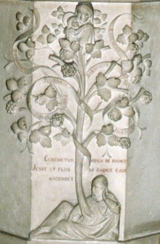
FIGURE XXX
(l'arbre de vie de Fontenay)Cette sculpture représente l'arbre de vie alchimique. On en trouve de semblables dans des manuscrits du XIVe siècle [Florence. Biblioteca Medicea-Laurenziana. Ms. (Ashburnham 1166). « Miscellanea d'alchimia »], notamment un Adam, représentant la prima materia, percé par la flèche du Mercurius et d'où l'on voit croître l'arbor philosophica. Dans le même manuscrit, le crâne, symbole de la mortification d'Eve, représente l'aspect féminin de la prima materia. Alors que dans le cas d'Adam, l'arbre correspond au phallus, ici l'arbre sort de la tête d'Eve, et correspond à un arbre spirituel, d'essence mercurielle. On voit ces deux arbres dans les vignettes ci-dessous.

Adam
EveFIGURE XXXI
(les arbres du Paradis)L'arbre est l'un des grands symboles de l'alchimie. On ne reviendra pas sur le chêne dont le sens est maintenant bien connu [voir ce mot en recherche]. On se placera sur un plan plus général. L'arbre, nous dit Pernety :
"...est aussi le nom que les Philosophes ont donné à la matière de la pierre philosophale, parce qu’elle est végétative. Le grand Arbre des Philosophes, c’est leur mercure, leur teinture, leur principe, et leur racine; quelquefois c’est l’ouvrage de la pierre. Un Auteur anonyme a fait à ce sujet un traité intitulé : de I’Arbre solaire, de Arbore solari. On le trouve dans le 6e tome du Théâtre Chymique. Le Cosmopolite, dans son Énigme adressée aux Enfant de la vérité, suppose qu’il fut transporté dans une Isle ornée de tout ce que la nature peut produire de plus précieux, entre autres de deux arbres, l’un solaire et l’autre lunaire, c’est-à-dire, dont l’un produisait de l’or, et l’autre de l’argent. " [Dictionnaire]
L'arbre philosophique, c'est d'abord celui qui porte les principales opérations de l'oeuvre : calcination, dissolution, séparation, conjonction, putréfaction, coagulation, cibation, sublimation, fermentation, élévation, accroissement, projection. C'est ainsi que Thomas Norton les représentent dans l'arbor philosophica, dans son Mercurius redivivus. Nous ne discuterons pas ici du bien fondé de toutes ces opérations mais certaines sont redondantes [cf. Douze Portes de Ripley].
C'est ensuite l'arbre métallique, celui qui porte les hiéroglyphes célestes des métaux [J.D. Mylius, Philosophia reformata, Francfort,1622]. Chacun de ses rameaux porte en lui la racine métallique capable de résister au pouvoir d'oxydation et qui assure la naissance du corbeau. Cet arbre est représenté dans les caissons du château de Dampierre-sur-Boutonne scié, mort et étreint. Voilà ce qu'il a fallu en faire pour donner vie à l'Esprit qui s'en dégage et qui permet, sans hésitation, de donner le nom vulgaire de la prima materia. Bernard de Trévise à parlé de cet arbre, en termes il est vrai, assez équivoques :"Le commencement donc de notre Pierre, est que le Mercure, croissant en l'Arbre, soit composé et sublimé en l'allégeant : car c'est le germe Volatil, qui se nourrit, mais qui ne peut croître sans l'Arbre fixe, qui le retient, comme le téton fait la vie de l'enfant" [Verbum dimissum]
La seule façon d'alléger l'arbre étant de le calciner, nous voici fixés [c'est le cas de le dire] sur la nature des cendres. Alexandre Sethon, dons Énigme, s'est exprimé sur l'arbre, et en a distingué deux dans son Île enchantée : l'un était d'or et portait le signe du Soufre ; l'autre était d'argent et portait des fruits d'une blancheur parfaite. Ces arbres sont évidemment les symboles des sept planètes connues à l'époque, y compris les luminaires [Soleil et Lune]. Précisément, ce sont les arbres solaire et lunaire qui se distinguent dans ce jardin et ce sont les matières que l'artiste doit élire pour le travail. Pernety parle de ces deux arbres dans son dictionnaire et remarque qu'un auteur anonyme a fait à ce sujet un traité intitulé : De l'Arbre solaire, de Arbore solari [Théâtre chymique, t. VI]. Là où nous divergeons de Pernety, c'est qu'il interprète l'arbre d'argent comme le magistère au blanc et l'arbre d'or comme la pierre au rouge. Pourtant il est facile de reconnaître en l'Arbre d'argent la Lune hermétique, c'est-à-dire le Soufre blanc et, en l'arbre d'or, le Soufre rouge qui oriente la pierre. Quant aux quatre couleurs fondamentales, elles masquent les quatre Éléments, c'est-à-dire les états de la matière à des degrés différents de température pour exprimer soit la dissolution (oeuvre au noir = Eau), soit la conjonction (oeuvre au blanc = Air), soit la cristallisation (oeuvre au rouge = Feu). Remarquez que la couleur citrine a des rapports avec l'Aurore ( = Terre] et exprime un stade intermédiaire. Mais ces associations ne nous pas encore bien connues et demandent certains développements. Parmi les autres arbres que citent les Philosophes, il faut citer l'Arbre de vie qui n'est autre que le Mercure, plus communément appelé élixir [qui n'a rien à voir avec « l'élixir de vie » que certains se plaisent encore à voir comme l'un des buts de l'oeuvre - Ont-ils tord, ont-ils raison, voilà une question que nous réservons à la sagacité des lecteurs...].
Comment utiliser ces arbres ? Quand cueillir les fruits ? quels sont les signes qui manifestent la maturation ? Autant de questions auxquelles les alchimistes se sont bien gardés de répondre. L'un des caissons [4, 3ème série] de Dampierre figure, selon Fulcanelli, l'arbre métallique princeps. C'est une allégorie du Soufre, or des Sages, et du fruit vert. On peut y trouver une image de l'arbre solaire que signale le Cosmopolite dans son allégorie de la forêt verte, qu'il nous dit appartenir à la nymphe Vénus. Fulcanelli ajoute :"...l'auteur...dit qu'il prit du fruit de l'arbre solaire, le mit dans dix parties d'une certaine eau, -fort rare et difficile à se procurer,- et en effectua facilement la dissolution."
Il nous faudrait ici revenir à la fontaine des Quatre Tias et évoquer Jean de Meung, parce que ces ruisseaux sont la contre partie aqueuse de l'arbre métallique, leur équivalent dans la sphère aérienne. Notons qu'il s'agit d'un passage où Fulcanelli nous parle, en fait, du Miroir [katopthV] de la Science philosophique, c'est-à-dire du lieu où les Âmes métalliques sont jugées, c'est-à-dire où les chaux des métaux sont grillées [katopteuw] ; voyez ici la section de l'Olympe hermétique.
"Enfin, une solution seconde, celle du Soufre, rouge ou blanc, par l'eau philosophique, fait l'objet du douzième et dernier bas-relief. Un guerrier laisse tomber son épée et s'arrête, interdit, devant un arbre au pied duquel surgit un bélier ; l'arbre porte trois énormes fruits en boules, et l'on voit émerger de ses branches la silhouette d'un oiseau. On retrouve ici l'arbre solaire que décrit le Cosmopolite dans la Parabole du Traité de la Nature, arbre duquel il faut extraire l'eau." [Myst, p. 131]
Cette solution seconde n'est autre que l'eau vive seconde de Limojon. Voyez la section sur le Vrai Cosmopolite où le thème de l'arbre solaire [le bois d'or] est approfondi. Qui dit arbre solaire, dit aussi étoile. Sans revenir outre mesure sur ce thème, voici ce que nous pouvons ajouter ici : Dom Pernety, à l'article Étoile de son Dictionnaire mytho-hermétique, n'a pas écrit ce qu'on était en droit d'attendre de lui. Il dit de l'Étoile des Philosophes qu'il s'agit du nom que les Artistes donnent aux couleurs qui surviennent dans le vase pendant les opérations du grand oeuvre. Il dit que l'Étoile de la Terre n'est autre que le talc [voir ce mot en recherche] et que l'Étoile du couchant est le Sel armoniac. Mais nous savons aussi que l'Oeuvre comporte deux étoiles qui, au vrai, n'en forment qu'une seule, une fois qu'elles sont réunies par le moyen de l'Esprit. Ces étoiles sont nos Soufres. Il faut distinguer ici l'Étoile du berger qui désigne Vénus-Aphrodite et l'Étoile du couchant, Vesper, qui prend la forme chthonienne de la planète et qui la désigne comme la quintessence de l'Art pour des raisons que nous n'avons cessé d'exposer sur ce site [voir ce mot en recherche]. L'Étoile du Nord est le point où tous les méridiens se rencontrent au septentrion. Cette étoile a donc la valeur symbolique d'un aimant. Le Mercure philosophique est cet Aimant, par lequel va s'opérer la conjonction des Soufres. Car le septentrion est formé des sept étoiles de la grande ou de la petite Ourse qui forment les astres de l'Arbre solaire. C'est le lieu de fixation de notre petit Monde symbolisé par l'Ourse [arktoV, ourse, oursin, le Chariot, Arktov, c'est aussi un Centaure]. La signification hermétique de l'Ourse est donc complexe. On peut en dire ceci : c'est que le Mercure, en se sublimant, va peu à peu révéler la coagulation de la matière, sa fixation, but de l'oeuvre. Et il s'agit de la coagulation des Soufres, symbolisés par les sept astres de l'Arbre solaire. Et c'est l'arbre adamique, tel qu'on le voit en vignette à la figure XXXI.
Quant à l'arbre lunaire, il a fait l'objet de moins de recherche de la part des Adeptes, sans doute parce que, symbolisant le Mercure ou la Lune philosophique, le symbolisme qui s'y attache est tellement perceptible, que ce serait gâcher sa plume et son encre d'y consacrer des volumes. Cet arbre de la Vierge, selon E. Canseliet :"...maintenant dénommé arbre de Matarea et ne ressemblant en rien, malgré son nom de ficus sycomorus, à l'espèce d'érable de nos contrées, c'est un figuier..." [L'Arbre alchimique, in alchimie, p. 117]
Fulcanelli, dans ses Myst. a posé une énigme de plus aux Enfants de Science, à partir d'un caisson où sont représentés trois arbres : le figuier, le dattier et le palmier [tympan de la cour d'honneur, hôtel Jacques Coeur, Bourges]. Pour ne pas alourdir démesurément cette section qui menace ruine, le lecteur voudra bien se reporter aux sections suivantes : gardes du corps - Verbum - blasons alchimiques où il trouvera tous renseignements utiles à ce sujet.
Pour revenir à l'arbre splendide - figure XXX - qui orne le pilier de l'Église Notre-Dame, il n'aura pas échappé au lecteur qu'il est composé de trois parties : un homme qui paraît un vieillard, dans une attitude assoupie et nonchalante, indifférente, pourrions-nous préciser ; l'arbre proprement dit qui se déploie magnifiquement en volutes, phylactères végétaux, fruits rebondis et ventrus ; au sommet, la Vierge portant l'enfant Jésus. Et bien ! Cet homme est le Mercurius senex ou Mercure commun - 1er Mercure - , la Vierge est ici la Virga paritura, c'est-à-dire la terre hermétique dans son état virtuel et l'arbre figure le double Mercure dans lequel s'effectue la Grande Coction et où l'on voit, prêts à être cueillis, les fruits du Jardin des Hespérides. Le sculpteur habile a su montrer la mobilité, l'inconstance, la fluidité du Mercure, qui contient en lui le germe futur de la Pierre [l'enfant Jésus ou petit baigneur]. L'ensemble du motif rappelle le groupe de Tristan et Yseult, de la chambre du Trésor au palais Jacques-Coeur. On y retrouve Yseult [la Vierge], dans une pose contournée ; le vieillard est le Roi que l'on aperçoit dans le feuillage de l'arbre central. Quant à Tristan, c'est l'Or réincrudé, les fruits charnus que l'on aperçoit à la figure XXX.Nous aurions encore bien des choses à dire sur l'Église Notre-Dame de Fontenay. Et c'est à regret que nous quittons ce véritable musée hermétique où le vandalisme, heureusement, n'a pas étendu ses ravages. Mais Fontenay-Le-Comte n'a pas encore livré tous ses secrets. Fulcanelli a montré que le château de Terre-Neuve recelait des trésors et a su extraire la quintessence de son ésotérisme intérieur. La façade, peut-être à cause de son exotérisme trop prononcé, à cause de ses altières devises et de son blasonnement touffu, n'a pas exercé la même fascination sur son esprit. Peut-être n'a-t-il pas eu le temps de réunir ses dernières notes, peut-être le temps était-il déjà venu, pour lui, d'effacer son image terrestre pour que soit conservé, intact, le bristol altier de son image onomastique, comme le suggère avec nostalgie E. Canseliet, dans sa préface aux Mystère des Cathédrales... C'est à nous, en essayant d'être de vrais disciples d'Hermès, que la tache incombe de saisir la lanterne que l'Adepte nous tend et de poursuivre l'oeuvre...
Fin